딥러닝 완전 이해
오승상 교수님 Deep Learning (고려대학교) — 수식 전개 · 직관적 해설 · PDF 슬라이드 캡쳐 포함
총 279페이지 · 8챕터 · 모든 개념 커버
딥러닝 소개 (Introduction to Deep Learning)
1. 인공지능 · 머신러닝 · 딥러닝의 계층 구조
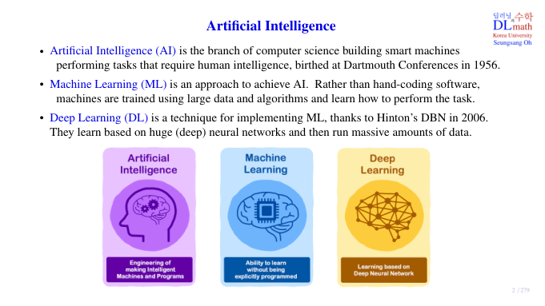
- Artificial Intelligence (AI): 인간의 지능을 필요로 하는 작업을 수행하는 스마트 기계를 구축하는 컴퓨터 과학의 분야. 1956년 다트머스 컨퍼런스에서 탄생.
- Machine Learning (ML): AI를 달성하기 위한 접근법. 소프트웨어를 직접 코딩하는 대신, 대규모 데이터와 알고리즘으로 기계를 훈련시켜 작업 수행 방법을 학습하게 함.
- Deep Learning (DL): ML을 구현하는 기법. 2006년 Hinton의 DBN(Deep Belief Network)으로 부흥. 거대하고 깊은 신경망에 기반하여 학습하고 방대한 양의 데이터를 처리.
2. 머신러닝 알고리즘의 세 가지 범주
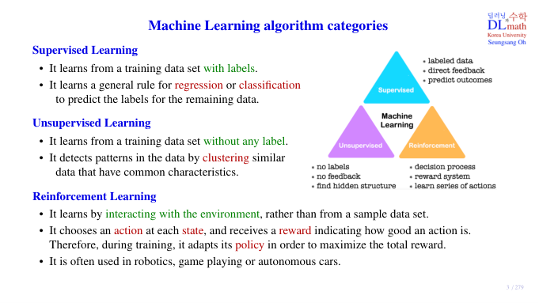
- 레이블(label)이 있는 훈련 데이터셋으로부터 학습.
- 회귀(Regression) 또는 분류(Classification)를 위한 일반적 규칙을 학습하여 나머지 데이터의 레이블을 예측.
- 특성: labeled data · direct feedback · predict outcomes
- 레이블 없이 훈련 데이터셋으로부터 학습.
- 공통 특성을 가진 유사 데이터를 클러스터링(Clustering)하여 데이터 내 패턴 탐지.
- 특성: no labels · no feedback · find hidden structure
- 샘플 데이터셋이 아닌 환경과의 상호작용을 통해 학습.
- 각 상태(state)에서 행동(action)을 선택하고, 행동의 좋고 나쁨을 나타내는 보상(reward)을 수신.
- 훈련 중 총 보상을 최대화하도록 정책(policy)을 적응시킴.
- 로봇공학·게임·자율주행 등에 활용.
- 특성: decision process · reward system · learn series of actions
3. 머신러닝 vs 딥러닝 비교
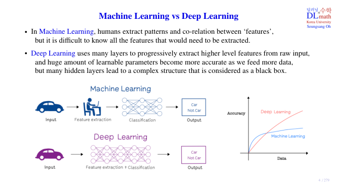
Input → Feature extraction (인간이 직접) → Classification → Output
딥러닝 파이프라인:Input → Feature extraction + Classification (자동, end-to-end) → Output
핵심 차이점 요약:| 항목 | Machine Learning | Deep Learning |
|---|---|---|
| 특징 추출 | 사람이 직접 설계 | 다층 신경망이 자동으로 학습 |
| 데이터 규모 | 소~중규모에서도 작동 | 대규모 데이터일수록 강력 |
| 정확도 vs 데이터 | 데이터 증가에 따라 점진적 포화 | 데이터 증가에 따라 지속 향상 |
| 해석 가능성 | 상대적으로 해석 용이 | 블랙박스(복잡한 구조) |
| 주요 한계 | 어떤 feature를 추출해야 할지 알기 어려움 | 많은 은닉층 → 복잡한 구조, 블랙박스 |
4. 딥러닝 혁신의 주요 구성 요소
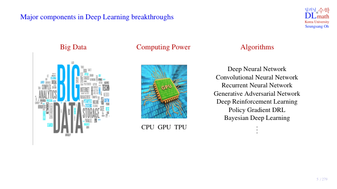
- 인터넷, SNS, IoT 등으로 수집된 대규모 데이터.
- 딥러닝의 수많은 파라미터를 의미 있게 학습시키기 위한 필수 연료.
- CPU: 범용 연산 처리. 순차적 연산에 강함.
- GPU: 대규모 병렬 행렬 연산에 특화. 딥러닝 훈련의 핵심 가속기.
- TPU: Google이 설계한 딥러닝 전용 가속기 (Tensor Processing Unit).
- Deep Neural Network (DNN)
- Convolutional Neural Network (CNN)
- Recurrent Neural Network (RNN)
- Generative Adversarial Network (GAN)
- Deep Reinforcement Learning (DRL)
- Policy Gradient DRL
- Bayesian Deep Learning
- … 등 지속 확장 중
5. 딥러닝 발전의 주요 이정표 (Milestones)
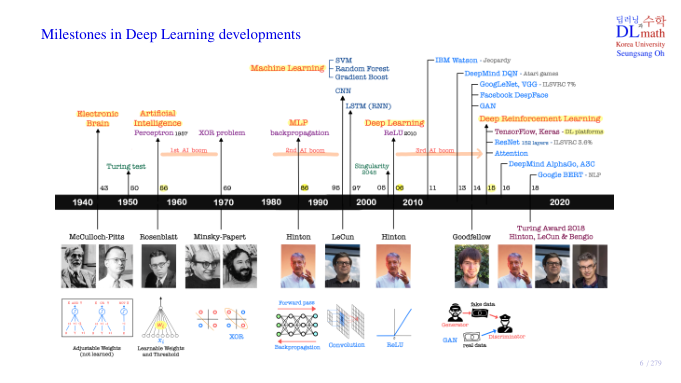
| 시기 | 사건/기술 | 주요 인물 |
|---|---|---|
| 1943 | McCulloch-Pitts 뉴런 모델 (Adjustable Weights, not learned) | McCulloch, Pitts |
| 1950 | Turing Test 제안 | Alan Turing |
| 1957 | Perceptron (Learnable Weights and Threshold) | Rosenblatt |
| 1960s | 1차 AI 붐 (Artificial Intelligence 태동); XOR 문제로 퍼셉트론 한계 지적 | Minsky-Papert |
| 1980 | MLP + 역전파(Backpropagation) — 2차 AI 붐 | Hinton |
| 1989 | Convolution (합성곱 신경망의 탄생) | LeCun |
| 1990s | SVM, Random Forest, Gradient Boost (Machine Learning 전성기) | |
| 1997 | LSTM (RNN 계열) | |
| 2000s | ReLU 활성화 함수 도입; Singularity 논의 | |
| 2006 | Deep Learning 부흥 — 3차 AI 붐 시작 | Hinton (DBN) |
| 2010s 초 | IBM Watson (Jeopardy); DeepMind DQN (Atari games); GoogleNet, VGG (ImageNet 7%); Facebook DeepFace; GAN | Goodfellow (GAN) |
| 2015~ | TensorFlow, Keras 등 DL 플랫폼; ResNet (152층, ImageNet 3.6%); Attention 메커니즘 | |
| 2016~ | Deep Reinforcement Learning — DeepMind AlphaGo, AlphaGo Zero; A3C | |
| 2018 | Google BERT (NLP); Turing Award 수상 | Hinton, LeCun, Bengio |
- 1차 AI 붐 (1960s): Perceptron 등장 → 기대 과잉 → XOR 문제(선형 분리 불가) 지적 → 1차 AI 겨울
- 2차 AI 붐 (1980s): 역전파 알고리즘 발견 → MLP 학습 가능 → 기대 재상승 → 기울기 소실(Vanishing Gradient), 계산 한계 → 2차 AI 겨울, SVM/앙상블이 대신 부상
- 3차 AI 붐 (2006~현재): Hinton DBN + GPU + 빅데이터 삼박자 → DL 폭발적 성장 → ImageNet, AlphaGo, ChatGPT 등 연속 돌파구
6. 본 강의 커리큘럼 개요
- Introduction to Deep Learning (현재 챕터)
- Deep Neural Network (DNN)
- Convolutional Neural Network (CNN)
- Recurrent Neural Network (RNN)
- Attention Mechanism
- Auto-Encoder & VAE (Variational Auto-Encoder)
- Generative Adversarial Network (GAN)
- Natural Language Processing (NLP)
- Graph Neural Network (GNN)
Chapter 1: Deep Neural Network (DNN) — Part A
Perceptron · MLP · Forward Pass · Activations · Gradient Descent
1. Deep Learning 동기 (Motivation)
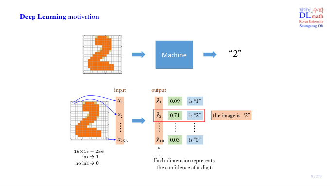
함수 \(f : \mathbb{R}^{256} \to \mathbb{R}^{10}\) 를 Neural Network로 표현한다.
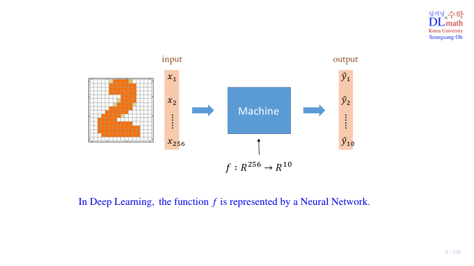
2. 퍼셉트론 (Perceptron) [Frank Rosenblatt, 1957]
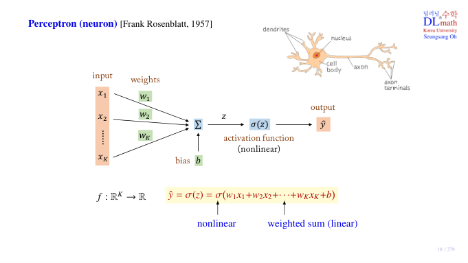
- \(x_1, \dots, x_K\) : 입력(input)
- \(w_1, \dots, w_K\) : 가중치(weights)
- \(b\) : 편향(bias)
- \(z\) : 선형 가중합(weighted sum)
- \(\sigma(\cdot)\) : 비선형 활성화 함수(activation function)
- \(\hat{y}\) : 출력(output)
3. 퍼셉트론의 프로그래밍 vs. 학습
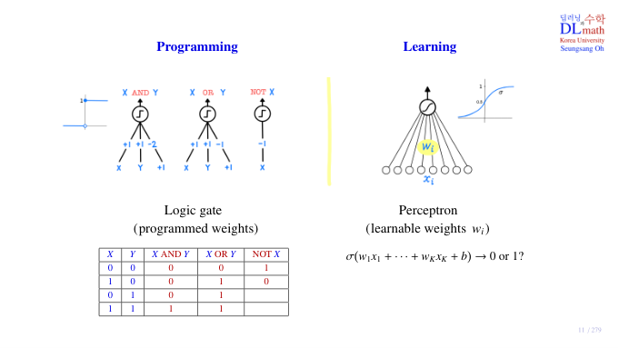
| X | Y | X AND Y | X OR Y | NOT X |
|---|---|---|---|---|
| 0 | 0 | 0 | 0 | 1 |
| 1 | 0 | 0 | 1 | 0 |
| 0 | 1 | 0 | 1 | 1 |
| 1 | 1 | 1 | 1 | 0 |
4. XOR 문제와 AI Winter I
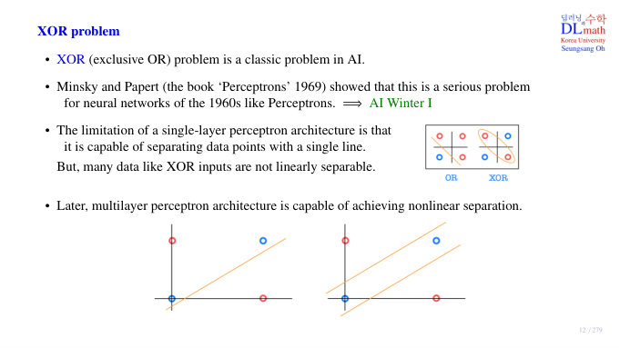
5. 다층 퍼셉트론 (Multilayer Perceptron, MLP)
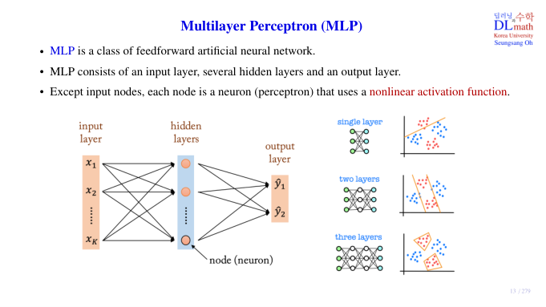
- MLP는 피드포워드(feedforward) 인공 신경망의 한 종류다.
- 입력층(input layer), 여러 은닉층(hidden layers), 출력층(output layer)으로 구성.
- 입력 노드를 제외한 각 노드는 비선형 활성화 함수를 사용하는 뉴런(퍼셉트론)이다.
6. 심층 신경망 (Deep Neural Network, DNN)
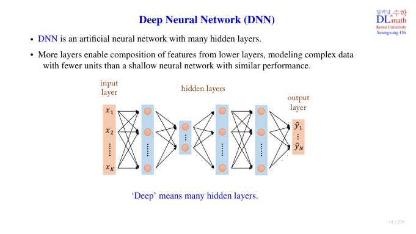
- DNN은 많은 은닉층을 가진 인공 신경망이다.
- 더 많은 층 → 하위 층의 특성을 합성하여 복잡한 데이터를 더 적은 유닛으로 모델링 가능.
- 동일한 성능의 얕은 신경망(shallow network)보다 적은 파라미터로 더 좋은 성능을 낼 수 있다.
7. DNN 순전파 (Forward Pass)
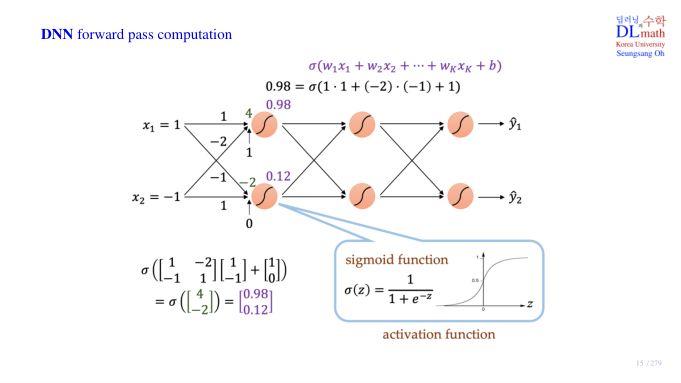
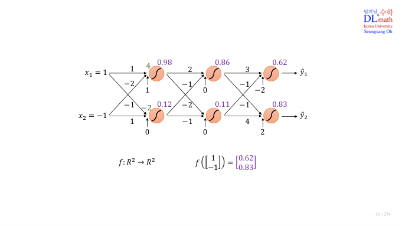
레이어 1 가중치 행렬:
\[ W^1 = \begin{bmatrix} 1 & -2 \\ -1 & 1 \end{bmatrix}, \quad b^1 = \begin{bmatrix} 1 \\ 0 \end{bmatrix} \] \[ z^1 = W^1 \mathbf{x} + b^1 = \begin{bmatrix} 1 & -2 \\ -1 & 1 \end{bmatrix}\begin{bmatrix} 1 \\ -1 \end{bmatrix} + \begin{bmatrix} 1 \\ 0 \end{bmatrix} = \begin{bmatrix} 4 \\ -2 \end{bmatrix} \] \[ a^1 = \sigma(z^1) = \sigma\!\left(\begin{bmatrix} 4 \\ -2 \end{bmatrix}\right) = \begin{bmatrix} 0.98 \\ 0.12 \end{bmatrix} \]이후 레이어 2, 3도 동일하게 반복하여 최종 \(\hat{y} = [0.62, 0.83]^T\) 출력.
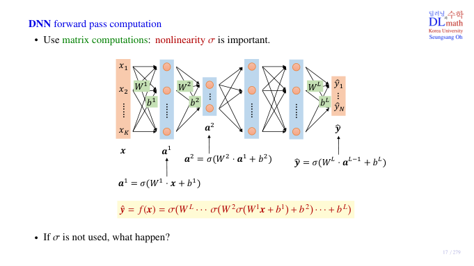
8. 소프트맥스 (Softmax)
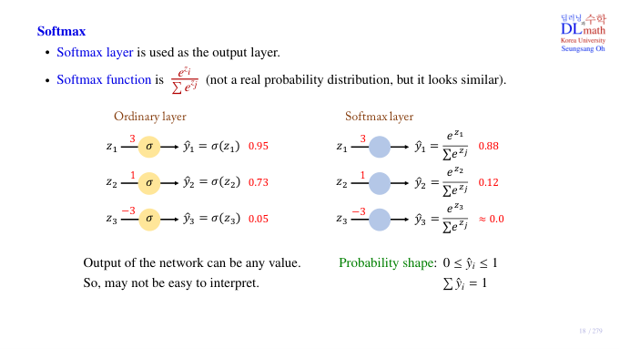
- \(0 \le \hat{y}_i \le 1\) (확률 형태)
- \(\sum_i \hat{y}_i = 1\) (합이 1)
9. 네트워크 파라미터 설정
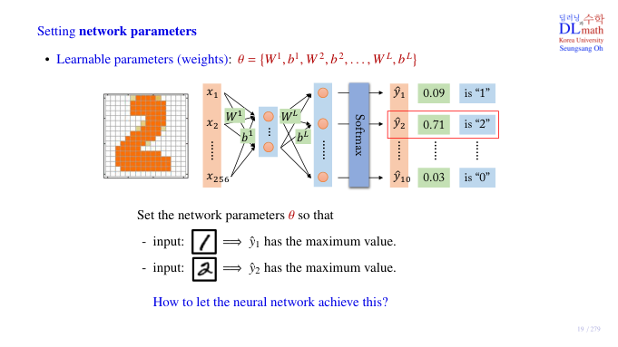
10. 비용 함수 (Cost / Loss)
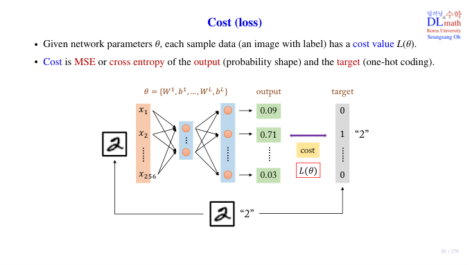
- 파라미터 \(\theta\)가 주어질 때 각 샘플 \((x^n, y^n)\)의 비용: \(L^n(\theta)\)
- 출력(output): \(\hat{y}\) (소프트맥스 후 확률 벡터)
- 목표(target): 원-핫 코드 (예: "2"이면 \([0, 1, 0, \ldots, 0]^T\))
- MSE: \(L(\theta) = \frac{1}{2}\|\hat{y} - y\|^2\)
- Cross Entropy: \(L(\theta) = -\sum_j y_j \log \hat{y}_j\)
11. 전체 비용 (Total Cost)
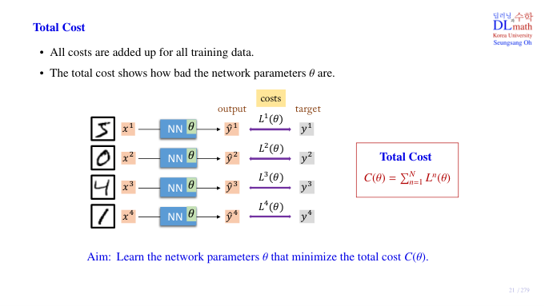
- \(N\): 훈련 데이터 수
- \(L^n(\theta)\): \(n\)번째 샘플의 비용
- \(C(\theta)\): 전체 비용(total cost) = 네트워크가 얼마나 나쁜지를 나타냄
12. 경사 하강법 (Gradient Descent)
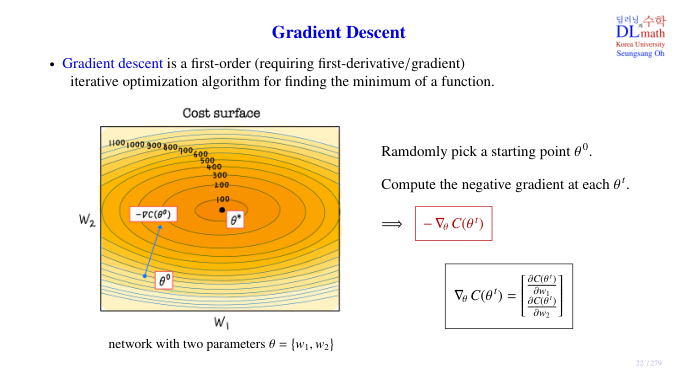
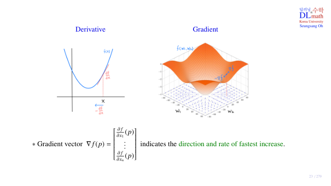
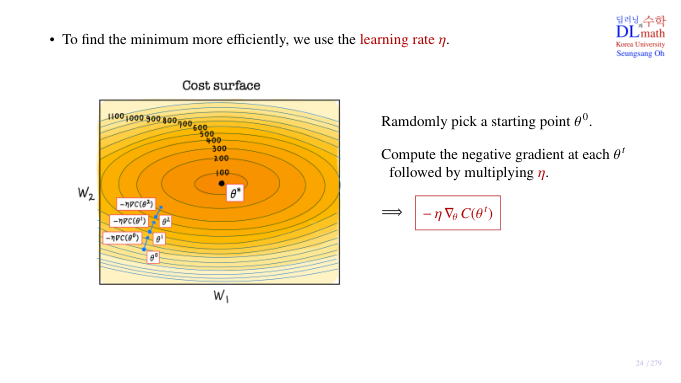
- \(\eta\) 너무 작음 → 매우 느린 수렴, 비용이 많이 든다.
- \(\eta\) 너무 큼 → 최솟값을 지나쳐 발산(diverge)하거나 진동한다.
- 적절한 \(\eta\) 선택이 훈련 성공의 핵심 하이퍼파라미터다.
13. 경사 하강법 변형 (Gradient Descent Variants)
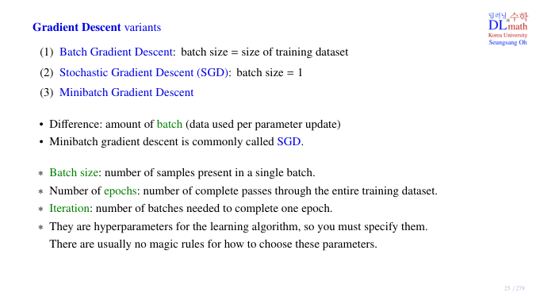
- Batch size: 한 번의 파라미터 업데이트에 사용되는 샘플 수
- Epoch: 전체 훈련 데이터를 한 번 완전히 통과하는 횟수
- Iteration: 1 epoch을 완료하는 데 필요한 배치 수 = \(\lceil N / \text{batch size} \rceil\)
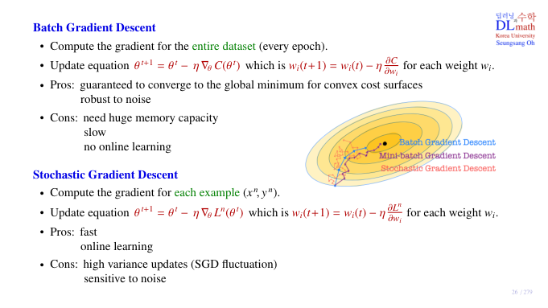
(1) Batch Gradient Descent (배치 크기 = 전체 데이터):
\[ \theta^{t+1} = \theta^t - \eta \nabla_\theta C(\theta^t), \quad w_i(t+1) = w_i(t) - \eta \frac{\partial C}{\partial w_i} \] 장점: 볼록 비용 곡면에서 전역 최솟값 수렴 보장, 노이즈에 강건단점: 거대한 메모리 요구, 느림, 온라인 학습 불가
(2) Stochastic Gradient Descent (SGD) (배치 크기 = 1):
\[ \theta^{t+1} = \theta^t - \eta \nabla_\theta L^n(\theta^t), \quad w_i(t+1) = w_i(t) - \eta \frac{\partial L^n}{\partial w_i} \] 장점: 빠름, 온라인 학습 가능단점: 높은 분산 업데이트(요동), 노이즈에 민감
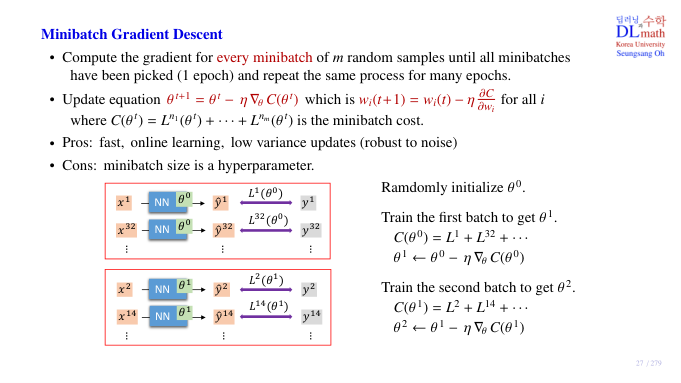
단점: 미니배치 크기가 하이퍼파라미터 (규칙 없음, 보통 32~256)
실제로 "SGD"라 불리는 것은 대부분 Minibatch Gradient Descent다.
14. 역전파 (Backpropagation)
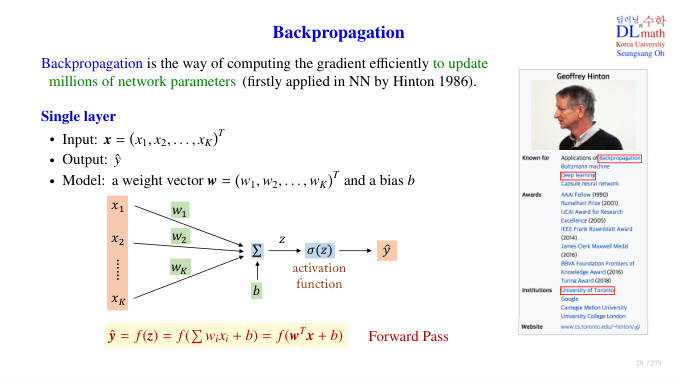
- 입력: \(\mathbf{x} = (x_1, x_2, \ldots, x_K)^T\)
- 파라미터: 가중치 벡터 \(\mathbf{w} = (w_1, \ldots, w_K)^T\), 편향 \(b\)
- 순전파: \(\hat{y} = f(z) = f\!\left(\sum_i w_i x_i + b\right) = f(\mathbf{w}^T \mathbf{x} + b)\)
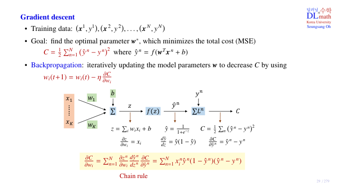
설정:
\[ z = \sum_i w_i x_i + b, \quad \hat{y} = \sigma(z) = \frac{1}{1+e^{-z}}, \quad C = \frac{1}{2}\sum_n (\hat{y}^n - y^n)^2 \]각 편미분:
\[ \frac{\partial z}{\partial w_i} = x_i \] \[ \frac{d\hat{y}}{dz} = \hat{y}(1 - \hat{y}) \quad \text{(시그모이드 미분의 핵심 성질)} \] \[ \frac{\partial C}{\partial \hat{y}^n} = \hat{y}^n - y^n \]연쇄 법칙(Chain Rule) 적용:
\[ \frac{\partial C}{\partial w_i} = \sum_{n=1}^{N} \frac{\partial z^n}{\partial w_i} \cdot \frac{d\hat{y}^n}{dz^n} \cdot \frac{\partial C}{\partial \hat{y}^n} = \sum_{n=1}^{N} x_i^n \cdot \hat{y}^n(1 - \hat{y}^n) \cdot (\hat{y}^n - y^n) \]업데이트 규칙:
\[ w_i(t+1) = w_i(t) - \eta \frac{\partial C}{\partial w_i} \]15. 활성화 함수 — 시그모이드 (Sigmoid)
- 가장 널리 사용된 활성화 함수 (역사적으로)
- 비선형, 계단 함수의 미분 가능 근사
- 출력 범위: \((0, 1)\) → 폭발(exploding) 없음
- 미분 가능: \(\frac{d\hat{y}}{dz} = \hat{y}(1-\hat{y})\)
- 단점: 기울기 소실 문제(Vanishing Gradient) 유발
16. 활성화 함수 — tanh
- 시그모이드의 스케일된 버전(scaled sigmoid)
- 출력 범위: \((-1, 1)\), 영점 중심(zero-centered) → 시그모이드보다 유리
- 기울기 소실 문제는 여전히 존재
17. 활성화 함수 — ReLU (Rectified Linear Unit, Hinton 2010)
- 2015년 이후 가장 널리 사용되는 활성화 함수
- 기울기 소실 문제 극복 (\(z>0\)에서 기울기 = 1로 일정)
- 출력 범위: \([0, \infty)\) → 폭발(exploding) 가능
- 빠른 계산: 비교·덧셈·곱셈만 필요
- 희소 활성화(sparse activation) → Dying ReLU 문제 유발
- Dying ReLU 해결책: \(\text{Leaky ReLU}(z) = \max(0.1z,\; z)\)
18. 활성화 함수 — Maxout (Goodfellow 2013)
- Dropout 최적화와 model averaging을 용이하게 하도록 설계
- 단일 maxout 유닛은 볼록 함수(convex function)의 구분선형 근사(piecewise linear approximation)
- ReLU, 절댓값 정류기(absolute value rectifier), 이차 활성화(quadratic activation) 모두를 근사 가능
19. 활성화 함수 요약 및 비선형성의 필요성
노드는 입력의 가중합과 편향을 계산한 뒤, 활성화 여부(activation)를 결정한다. 비선형 활성화 함수가 없다면:
\[ \hat{y} = W^L \cdots W^2 W^1 \mathbf{x} = W\mathbf{x} \quad \text{(단순 선형 변환)} \]층을 아무리 쌓아도 단층 선형 모델과 동일 → 복잡한 데이터 표현 불가.
| 문제 | 해결책 | 연도 |
|---|---|---|
| 레이블 데이터 부족 | Big Data, IoT | — |
| 컴퓨터 너무 느림 | GPU, TPU | — |
| 가중치 초기화 불량 | RBM (2006), Xavier (2010), He (2015) | 2006~2015 |
| 잘못된 비선형 함수 | ReLU | 2010 |
DNN Part B — 손실함수, 역전파, 연쇄법칙
1. 다층 네트워크 역전파 (Multilayer Backpropagation)
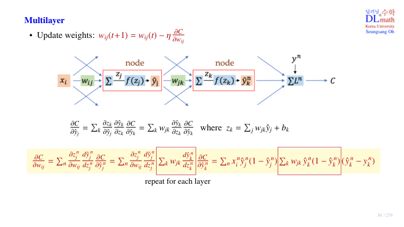
가중치 업데이트 규칙:
\[ w_{ij}(t+1) = w_{ij}(t) - \eta \frac{\partial C}{\partial w_{ij}} \]한 층 뒤 노드 \(j\)에서의 기울기 (chain rule):
\[ \frac{\partial C}{\partial \hat{y}_j} = \sum_k \frac{\partial z_k}{\partial \hat{y}_j} \frac{\partial \hat{y}_k}{\partial z_k} \frac{\partial C}{\partial \hat{y}_k} = \sum_k w_{jk} \frac{\partial \hat{y}_k}{\partial z_k} \frac{\partial C}{\partial \hat{y}_k} \]여기서 \( z_k = \sum_j w_{jk} \hat{y}_j + b_k \)
전체 데이터에 대한 가중치 기울기:
\[ \frac{\partial C}{\partial w_{ij}} = \sum_n \frac{\partial z_j^n}{\partial w_{ij}} \frac{d\hat{y}_j^n}{dz_j^n} \frac{\partial C}{\partial \hat{y}_j^n} \]이 과정을 각 층마다 반복(repeat for each layer)하여 모든 가중치의 기울기를 계산한다.
2. 기울기 소멸 문제 (Vanishing Gradient Problem)
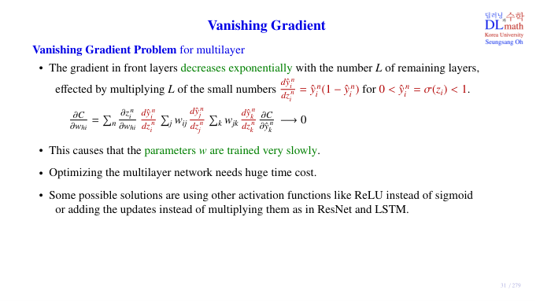
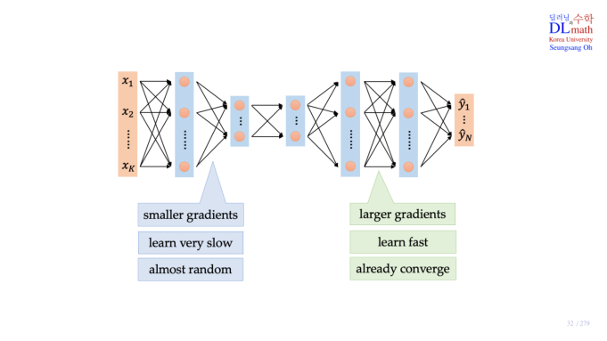
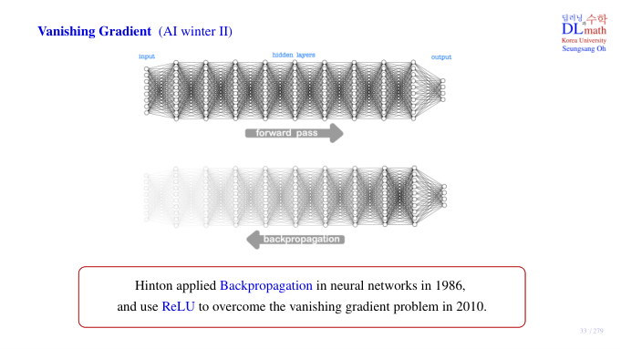
시그모이드의 도함수 (항상 1보다 작음):
\[ \frac{d\hat{y}_i^n}{dz_i^n} = \hat{y}_i^n(1 - \hat{y}_i^n) \quad \text{for } 0 < \hat{y}_i^n = \sigma(z_i) < 1 \]앞쪽 층 가중치 \(w_{hi}\)에 대한 기울기 (L개 층을 거치며 소멸):
\[ \frac{\partial C}{\partial w_{hi}} = \sum_n \frac{\partial z_i^n}{\partial w_{hi}} \frac{d\hat{y}_i^n}{dz_i^n} \sum_j w_{ij} \frac{d\hat{y}_j^n}{dz_j^n} \sum_k w_{jk} \frac{d\hat{y}_k^n}{dz_k^n} \frac{\partial C}{\partial \hat{y}_k^n} \longrightarrow 0 \]3. 딥러닝 학습 사이클 (Deep Learning Training Cycle)
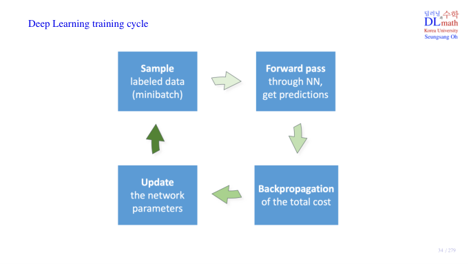
- Forward pass: \(\hat{y} = \sigma(W^L \cdots \sigma(W^2 \sigma(W^1 x + b^1) + b^2) \cdots + b^L)\)
- Backpropagation: \(\frac{\partial C}{\partial \theta}\) 를 연쇄법칙으로 계산
- Update: \(\theta^{t+1} = \theta^t - \eta \nabla_\theta C(\theta^t)\)
4. 학습 유형 (Types of Learning)
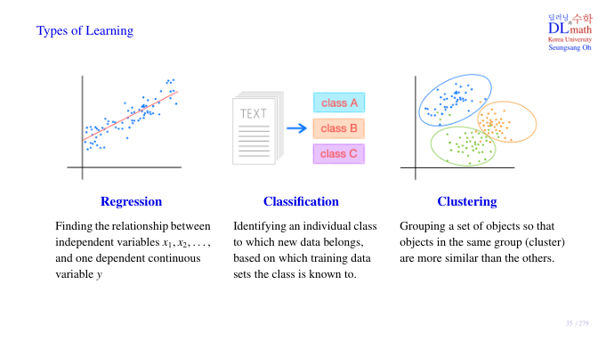
- Regression (회귀): 독립변수 \(x_1, x_2, \ldots\)로 연속 변수 \(y\) 예측
- Classification (분류): 새 데이터가 속하는 이산 클래스 식별
- Clustering (군집화): 유사한 데이터끼리 그룹화 (레이블 없음)
5. 선형 회귀 (Linear Regression)
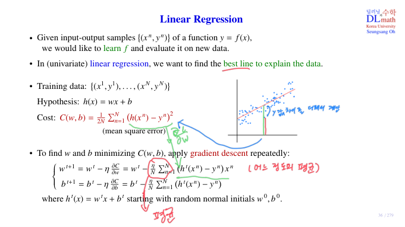
Hypothesis: \( h(x) = wx + b \)
\[ C(w,b) = \frac{1}{2N} \sum_{n=1}^{N} \bigl(h(x^n) - y^n\bigr)^2 \quad \text{(MSE)} \]Gradient descent 업데이트:
\[ w^{t+1} = w^t - \eta \frac{\partial C}{\partial w} = w^t - \frac{\eta}{N} \sum_{n=1}^N \bigl(h^t(x^n) - y^n\bigr) x^n \] \[ b^{t+1} = b^t - \eta \frac{\partial C}{\partial b} = b^t - \frac{\eta}{N} \sum_{n=1}^N \bigl(h^t(x^n) - y^n\bigr) \]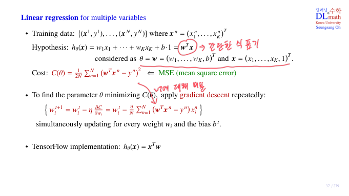
Hypothesis: \( h_\theta(x) = w_1 x_1 + \cdots + w_K x_K + b \cdot 1 = w^T x \)
(\(\theta = w = (w_1, \ldots, w_K, b)^T\), \(x = (x_1, \ldots, x_K, 1)^T\) 로 취급)
\[ C(\theta) = \frac{1}{2N} \sum_{n=1}^N \bigl(w^T x^n - y^n\bigr)^2 \]각 가중치 동시 업데이트:
\[ w_i^{t+1} = w_i^t - \frac{\eta}{N} \sum_{n=1}^N \bigl(w^T x^n - y^n\bigr) x_i^n \]TensorFlow 구현: \( h_\theta(x) = x^T w \) (전치 주의)
6. 로지스틱 회귀 — 이진 분류 (Logistic Regression / Binary Classification)
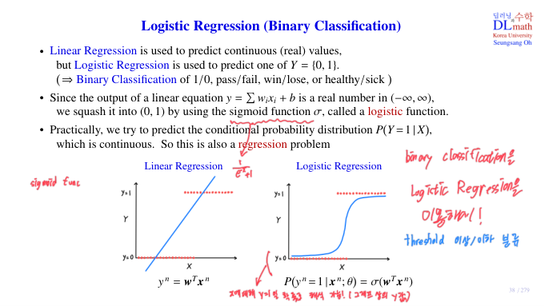
Hypothesis: \( h_\theta(x) = \sigma(w^T x) = \dfrac{1}{1 + e^{-w^T x}} \)
비교: Linear Regression \( y^n = w^T x^n \) vs. Logistic Regression \( P(y^n=1 | x^n; \theta) = \sigma(w^T x^n) \)
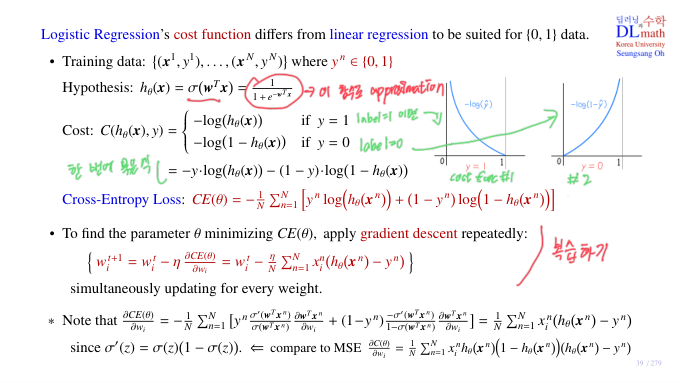
개별 샘플 비용:
\[ C(h_\theta(x), y) = \begin{cases} -\log(h_\theta(x)) & \text{if } y=1 \\ -\log(1 - h_\theta(x)) & \text{if } y=0 \end{cases} = -y \log(h_\theta(x)) - (1-y)\log(1-h_\theta(x)) \]전체 Cross-Entropy Loss:
\[ CE(\theta) = -\frac{1}{N} \sum_{n=1}^N \Bigl[ y^n \log\bigl(h_\theta(x^n)\bigr) + (1-y^n)\log\bigl(1-h_\theta(x^n)\bigr) \Bigr] \]\(\sigma'(z) = \sigma(z)(1-\sigma(z))\) 를 이용하면 간단히:
\[ \frac{\partial CE(\theta)}{\partial w_i} = \frac{1}{N}\sum_{n=1}^N x_i^n \bigl(h_\theta(x^n) - y^n\bigr) \]업데이트 규칙:
\[ w_i^{t+1} = w_i^t - \frac{\eta}{N}\sum_{n=1}^N x_i^n \bigl(h_\theta(x^n) - y^n\bigr) \]비교: MSE의 경우 \(\frac{\partial C}{\partial w_i} = \frac{1}{N}\sum_n x_i^n h_\theta(x^n)(1-h_\theta(x^n))(h_\theta(x^n)-y^n)\) 로 더 복잡하고 느리게 수렴한다. Cross-Entropy가 로지스틱 회귀에 더 적합하다.
7. 다중 클래스 분류 (Multi-class Classification)
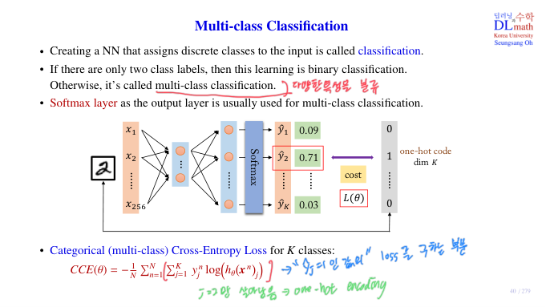
where \(y_j^n \in \{0,1\}\) is one-hot encoding (정답 클래스만 1, 나머지 0)
8. 회귀 vs. 분류 비교 (Regression vs Classification)
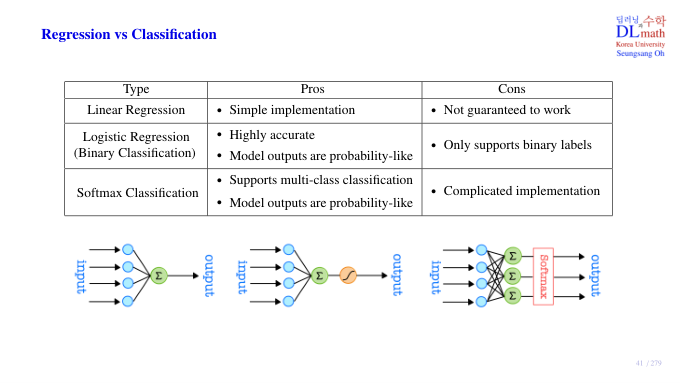
| 유형 | 장점 | 단점 |
|---|---|---|
| Linear Regression | 구현 단순 | 작동 보장 없음 |
| Logistic Regression (Binary) | 높은 정확도, 확률처럼 해석 가능 | 이진 레이블만 지원 |
| Softmax Classification | 다중 클래스 지원, 확률처럼 해석 | 구현 복잡 |
9. 보편 근사 정리 (Universal Approximation Theorem)
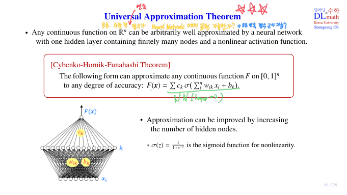
위 형태가 \([0,1]^n\) 위의 임의의 연속 함수 \(F\)를 임의 정밀도로 근사할 수 있다.
비선형 활성화 함수 \(\sigma(z) = \dfrac{1}{1+e^{-z}}\) (시그모이드) 가 필수.
10. 시각적 직관: 스텝 함수 근사 (Visual Intuition — Step Function Approximation)
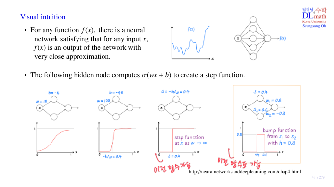
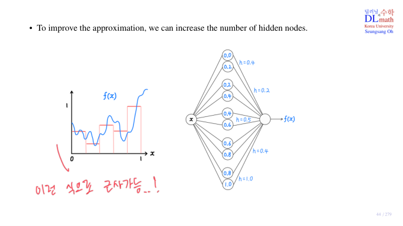
- \(w\)가 크면 시그모이드가 계단 함수(step function)에 가까워진다: \( w \to \infty \Rightarrow \sigma(wx+b) \approx \mathbf{1}[x \geq -b/w] \)
- 계단 위치는 \(s = -b/w\)로 조절, 높이는 출력 가중치로 조절
- 두 노드(\(s_1, s_2\))를 조합하면 "범프(bump) 함수"를 만들 수 있다
- 범프 함수들을 충분히 많이 더하면 임의의 연속 함수를 근사할 수 있다
11. 얕은 네트워크 vs. 깊은 네트워크 (Shallow vs Deep Networks)
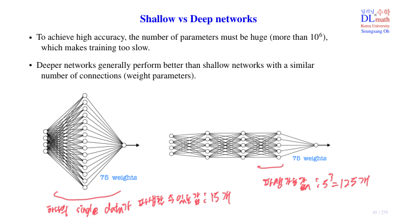
- 높은 정확도를 위해서는 파라미터 수 \( > 10^6 \) 필요 → 단순히 크게 만들면 학습이 느려진다
- 같은 연결 수(가중치 수)로 깊은 네트워크가 얕은 네트워크보다 일반적으로 더 잘 동작한다
- 더 많은 층 = 하위 층 feature들의 조합으로 복잡한 데이터를 표현
12. 깊은 네트워크 학습의 어려움 (Hard to Train Deep Networks)
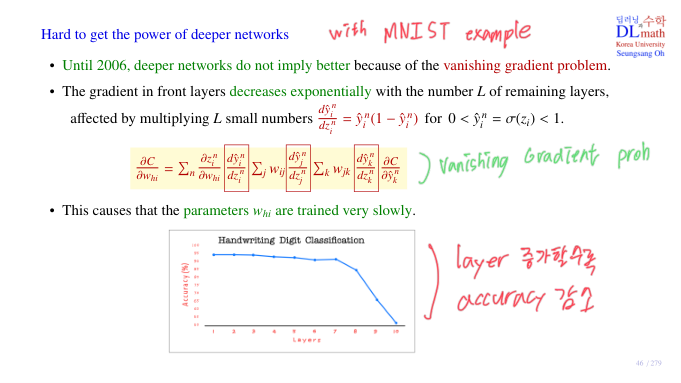
각 \(\frac{d\hat{y}}{dz} = \hat{y}(1-\hat{y}) < 1\) 이므로 층이 늘어날수록 곱이 0으로 수렴 → 파라미터 \(w_{hi}\) 가 거의 학습되지 않는다.
13. Hinton의 딥러닝 발전 요약 (Geoffrey Hinton's Summary of Findings)
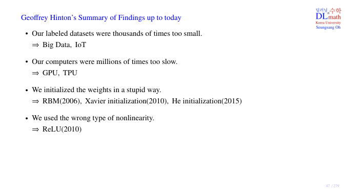
- 데이터 부족: 레이블 데이터가 수천 배 부족했다 → Big Data, IoT
- 컴퓨터 부족: 컴퓨터가 수백만 배 느렸다 → GPU, TPU
- 초기화 문제: 가중치 초기화를 잘못했다 → RBM(2006), Xavier init(2010), He init(2015)
- 비선형성 문제: 잘못된 활성화 함수를 사용했다 → ReLU(2010)
14. 활성화 함수 개요 (Activation Functions Overview)
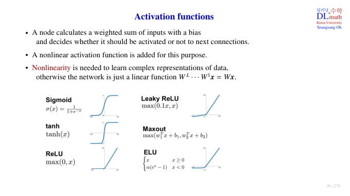
- Sigmoid: \(\sigma(x) = \dfrac{1}{1+e^{-x}}\)
- tanh: \(\tanh(x)\)
- ReLU: \(\max(0, x)\)
- Leaky ReLU: \(\max(0.1x, x)\)
- Maxout: \(\max(w_1^T x + b_1,\; w_2^T x + b_2)\)
- ELU: \(\begin{cases} x & x \geq 0 \\ \alpha(e^x - 1) & x < 0 \end{cases}\)
15. Sigmoid 와 tanh
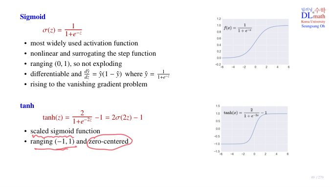
- 가장 널리 사용된 활성화 함수 (역사적)
- 비선형, 계단 함수의 부드러운 근사
- 출력 범위: \((0,1)\) → 값이 폭발하지 않음
- 미분 가능: \(\dfrac{d\hat{y}}{dz} = \hat{y}(1-\hat{y})\) where \(\hat{y} = \dfrac{1}{1+e^{-z}}\)
- 단점: 기울기 소멸 문제 유발 (출력이 항상 1 미만)
- 스케일된 시그모이드 함수
- 출력 범위: \((-1,1)\)
- zero-centered → 시그모이드보다 학습에 유리한 경우 많음
출력값 \(\hat{y}\)가 0 또는 1에 가까워질수록 도함수는 0에 가까워진다 → 기울기 소멸.
16. ReLU (Rectified Linear Unit)
도함수:
\[ \frac{d}{dz}\text{ReLU}(z) = \begin{cases} 0 & z < 0 \\ 1 & z > 0 \end{cases} \]특성:
- 2015년 이후 가장 널리 사용
- 기울기 소멸 문제 해결 (양수 구간에서 기울기 = 1)
- 출력 범위: \([0, \infty)\) → 폭발 가능성 있음
- 빠른 계산: 비교·덧셈·곱셈만 필요
- 희소 활성화(sparse activation) → Dying ReLU 문제: 음수 뉴런이 영구 비활성화
- 해결책: Leaky ReLU\((z) = \max(0.1z, z)\)
17. Maxout (Goodfellow 2013)
특성:
- Dropout과 함께 사용할 때 최적화를 돕도록 설계됨
- Dropout의 빠른 근사 모델 평균화 기법의 정확도 향상
- 단일 Maxout 유닛 = 볼록 함수의 조각적 선형 근사
- ReLU, 절댓값 정류기, 이차 활성화 함수를 모두 구현 가능
18. 학습률 (Learning Rate)
학습률 종류:
- 너무 작은 값: 수렴은 하지만 학습이 매우 느림
- 너무 큰 값: 불안정, 발산 가능
- 적절한 값: 빠르고 안정적인 수렴
- 매우 큰 값: 처음에는 빠르게 감소하지만 최솟값 근처에서 진동
Learning Rate Decay (학습률 감소): 초기에는 큰 학습률로 빠르게 이동 후, 점차 감소시켜 세밀하게 수렴한다.
19. 핵심 공식 총정리
| 손실 함수 | 수식 | 사용처 |
|---|---|---|
| MSE | \(\dfrac{1}{2N}\sum_n (\hat{y}^n - y^n)^2\) | 회귀 |
| Binary Cross-Entropy | \(-\dfrac{1}{N}\sum_n [y^n \log \hat{y}^n + (1-y^n)\log(1-\hat{y}^n)]\) | 이진 분류 |
| Categorical Cross-Entropy | \(-\dfrac{1}{N}\sum_n \sum_j y_j^n \log \hat{y}_j^n\) | 다중 분류 |
단층 (sigmoid + MSE):
\[ \frac{\partial C}{\partial w_i} = \sum_n x_i^n \hat{y}^n(1-\hat{y}^n)(\hat{y}^n - y^n) \]단층 (sigmoid + BCE):
\[ \frac{\partial CE}{\partial w_i} = \frac{1}{N}\sum_n x_i^n (\hat{y}^n - y^n) \]다층 (중간층 \(j\) → \(k\)):
\[ \frac{\partial C}{\partial w_{ij}} = \sum_n x_i^n \hat{y}_j^n(1-\hat{y}_j^n) \sum_k w_{jk} \hat{y}_k^n(1-\hat{y}_k^n)(\hat{y}_k^n - y_k^n) \]- Sigmoid: \(\sigma'(z) = \sigma(z)(1-\sigma(z))\)
- tanh: \(\tanh'(z) = 1 - \tanh^2(z)\)
- ReLU: \(\text{ReLU}'(z) = \mathbf{1}[z > 0]\)
- Leaky ReLU: \(\text{LReLU}'(z) = \begin{cases} 0.1 & z \leq 0 \\ 1 & z > 0 \end{cases}\)
DNN Part C — Optimizers, Regularization, Batch Normalization, Weight Initialization
Gradient Descent Optimizers — 개요
Momentum
SGD는 손실 곡면의 계곡 사면을 가로질러 진동하거나 로컬 미니마에 빠지기 쉽다. Momentum은 이전 이동 방향의 속도를 누적하여 진동을 줄이고 수렴을 가속한다.
속도 벡터 \(v\)를 도입하여 업데이트:
\[ v^{t+1} = \gamma \, v^{t} - \eta \nabla_\theta C(\theta^t) \] \[ \theta^{t+1} = \theta^t + v^{t+1} \]- \(\gamma\): momentum 계수 (통상 \(0.9\))
- \(\eta\): 학습률
- \(v^{t}\): 이전 속도(이전 그래디언트들의 지수 이동 평균)
- 기본 SGD: \(\theta^{t+1} = \theta^t - \eta \nabla_\theta C(\theta^t)\)
- 속도 개념 추가: 현재 그래디언트에 이전 속도의 \(\gamma\)배를 더함.
- \(v^{t+1} = \gamma v^t - \eta \nabla_\theta C(\theta^t)\) — 지수 감쇠 가중 평균.
- \(\theta^{t+1} = \theta^t + v^{t+1}\) — 속도로 파라미터 업데이트.
- 관련 방향의 그래디언트는 같은 부호라 \(v\)가 커지고, 진동 방향은 부호가 반대라 상쇄됨.
AdaGrad / RMSProp / Adam
AdaGrad (Adaptive Gradient)
파라미터마다, 시간 단계마다 다른 학습률을 적용한다. 많이 변한 파라미터(자주 등장하는 특징)는 학습률을 낮추고, 적게 변한 파라미터는 학습률을 높인다. → 희소 데이터(sparse data) 처리에 유리.
- \(G^t_\theta\): 시점 0부터 \(t\)까지 그래디언트 제곱의 누적합
- \(\epsilon\): 0 나눔 방지 수치 안정성 상수
RMSProp (Root Mean Square Propagation)
AdaGrad의 누적 제곱합 대신 지수 이동 평균을 사용하여 최근 그래디언트만 반영한다. 학습률이 무한히 작아지는 문제를 해결.
- \(\gamma\): 감쇠 계수 (보통 0.9)
- \(G^t_\theta\): 최근 그래디언트 제곱의 지수 이동 평균
Adam (Adaptive Moment Estimation)
RMSProp + Momentum의 결합. 1차 모멘트(그래디언트 평균)와 2차 모멘트(그래디언트 제곱 평균)를 모두 추정하며, 초기 단계의 편향(bias)을 보정한다.
1차 모멘트 (Momentum 항):
\[ m^{t+1}_\theta = \beta_1 m^t_\theta + (1 - \beta_1)\nabla_\theta C(\theta^t), \quad \beta_1 = 0.9 \] \[ \hat{m}_\theta = \frac{m^{t+1}_\theta}{1 - (\beta_1)^{t+1}} \]2차 모멘트 (RMSProp 항):
\[ G^{t+1}_\theta = \beta_2 G^t_\theta + (1 - \beta_2)\left(\nabla_\theta C(\theta^t)\right)^2, \quad \beta_2 = 0.999 \] \[ \hat{G}_\theta = \frac{G^{t+1}_\theta}{1 - (\beta_2)^{t+1}} \]파라미터 업데이트:
\[ \theta^{t+1} = \theta^t - \eta \frac{\hat{m}_\theta}{\sqrt{\hat{G}_\theta} + \epsilon} \]- 초기 \(m^0_\theta = 0\), \(G^0_\theta = 0\)으로 시작하면, 초기 단계에서 값이 0에 편향됨.
- \(m^{t+1}_\theta = \beta_1 m^t_\theta + (1-\beta_1)\nabla C\)를 \(t\)번 전개하면: \(m^{t+1}_\theta = (1-\beta_1)\sum_{i=0}^{t}\beta_1^{t-i}\nabla_\theta C(\theta^i)\)
- \(E[m^{t+1}_\theta] = (1-\beta_1^{t+1})E[\nabla_\theta C]\) → 기댓값이 \((1-\beta_1^{t+1})\)배 축소됨.
- 따라서 \(\hat{m}_\theta = m^{t+1}_\theta / (1 - \beta_1^{t+1})\)로 보정하면 불편 추정량이 됨.
- \(\hat{G}_\theta\)도 동일하게 보정.
| 옵티마이저 | 핵심 아이디어 | 문제점 |
|---|---|---|
| SGD | 단순 그래디언트 하강 | 진동, 느린 수렴 |
| Momentum | 속도 누적 | 하이퍼파라미터 튜닝 필요 |
| AdaGrad | 파라미터별 학습률 적응 | 학습률 급감 |
| RMSProp | 지수 이동 평균으로 학습률 적응 | AdaGrad 개선이나 모멘텀 없음 |
| Adam | Momentum + RMSProp + 편향 보정 | 일부 경우 SGD+Momentum보다 일반화 낮음 |
Training / Validation / Test Sets
- 2분할: 훈련(70%) / 테스트(30%)
- 3분할: 훈련(60%) / 검증(20%) / 테스트(20%)
— 훈련셋: 모델 학습, 검증셋: 하이퍼파라미터 선택, 테스트셋: 최종 성능 보고 - k-fold 교차검증: k개 그룹으로 나누어, 하나씩 테스트셋으로 사용하고 나머지 k-1개로 훈련
하이퍼파라미터 (Hyperparameters)
- 은닉층 수 (number of hidden layers)
- 각 층의 은닉 노드 수 (number of hidden nodes per layer)
- 출력 수 (number of outputs)
- 에포크 수 (number of epochs)
- 배치 크기 (batch size)
- 출력 유형 (linear / logistic / softmax)
- 비선형 활성화 함수 종류 (hidden layers + output layer)
- 학습률 \(\eta\) (learning rate)
- 정규화 계수 \(\lambda\) (regularization coefficients)
편향-분산 트레이드오프 (Bias-Variance Tradeoff)
- 편향(Bias): 모델 예측의 평균과 실제값의 차이. 높은 편향 = 훈련 데이터를 충분히 학습 못함 = 언더피팅(underfitting). 훈련/테스트 모두 높은 오차.
- 분산(Variance): 특정 데이터 포인트에 대한 모델 예측의 가변성. 높은 분산 = 훈련 데이터(노이즈 포함)에 지나치게 적합 = 오버피팅(overfitting). 훈련 오차는 낮지만 테스트 오차 높음.
- 언더피팅: 1차 다항식으로 복잡한 곡선 근사 → 지나치게 단순
- 오버피팅: 9차 다항식으로 소수 데이터 근사 → 노이즈까지 외움
- 좋은 적합: 3차 다항식 정도로 데이터의 실제 패턴을 포착
오버피팅 (Overfitting)
오버피팅은 모델이 훈련 데이터의 세부사항과 노이즈에 지나치게 맞춰, 새 데이터에 일반화하지 못하는 현상이다.
- 훈련 오차(MSE) → 0에 가깝게 감소
- 테스트 오차 → 일정 에포크 이후 다시 증가 (U자형 곡선)
- 훈련-테스트 성능 격차가 큼
드롭아웃 (Dropout) [Hinton 2012]
드롭아웃은 훈련 중 각 미니배치마다 은닉 노드를 무작위로 제거하여 오버피팅을 줄이는 정규화 기법이다.
- 각 노드는 확률 \(p\)로 제거(keeping probability = \(1-p\))
- 제거된 노드와 해당 연결은 해당 이터레이션에서 역전파 업데이트에서 제외됨
- \(N\)개 노드가 있으면 \(2^N\)개의 서로 다른 "희소 네트워크(thinned network)" 중 하나를 샘플링
훈련 시 (Training)
- 각 노드: 드롭 확률 \(p\) (= keeping prob \(1-p\))
- \(2^N\)개 중 하나의 희소 네트워크를 샘플링
- 해당 희소 네트워크에서만 순전파 + 역전파 수행
- 드롭아웃 미적용
- 모든 가중치에 \((1-p)\)를 곱함: 희소 네트워크들의 출력 평균 근사
앙상블로서의 드롭아웃
드롭아웃 변형들
- Dropout [Hinton 2012]: 노드 제거
- Dropconnect [Wan 2013]: 노드 대신 연결을 제거
- Maxout [Goodfellow 2013]: k개 선형 유닛의 최댓값 취함
- Annealed Dropout [Rennie 2014]: 에포크가 지날수록 드롭아웃 비율 감소
- Gaussian Dropout [Srivastava 2014]: 베르누이 대신 가우시안 노이즈
- Variational Dropout [Kingma 2015]: 베이지안 관점의 드롭아웃
- Monte Carlo Dropout [Gal 2016]: 테스트 시에도 드롭아웃 적용, 불확실성 추정
- CNN/RNN용 특화 드롭아웃
Gaussian Dropout [Srivastava 2014]
표준 Dropout:
\[ \text{Training: } \mathbf{y} = f(W\mathbf{x} \odot \mathbf{m}), \quad m_i \sim \text{Bernoulli}(1-p) \] \[ \text{Test: } \mathbf{y} = f((1-p)W\mathbf{x}) \]Gaussian Dropout:
\[ \text{Training: } \mathbf{y} = f(W\mathbf{x} \odot \mathbf{m}), \quad m_i \sim \mathcal{N}\!\left(1,\, \frac{p}{1-p}\right) \] \[ \text{Test: } \mathbf{y} = f(W\mathbf{x}) \]- \(\odot\): 원소별(element-wise) 곱
Monte Carlo Dropout [Gal 2016]
MC 드롭아웃은 훈련과 테스트 모두에서 드롭아웃을 적용하여, 확률 분포 형태의 예측을 출력한다. 베이지안 딥러닝으로 해석된다.
- 테스트 시 동일 입력 \(x\)에 여러 번 순전파 → 서로 다른 희소 네트워크 → 다른 예측값 \(\hat{y}_1, \ldots, \hat{y}_T\)
- 예측 평균: \(\bar{y} = \frac{1}{T}\sum_{t=1}^T \hat{y}_t\) → 앙상블 예측
- 예측 분산: \(\text{Var}(\hat{y})\) → 해당 입력에 대한 모델 불확실성
정규화 (Regularization) — L1 / L2
정규화는 모델 파라미터(가중치)의 절댓값을 제한하여 오버피팅을 방지한다. 더 작은 가중치 = 더 단순한 모델 = 덜 오버피팅.
L1 정규화 (Lasso)
- \(\lambda\): 정규화 강도 하이퍼파라미터
- L1 노름은 가중치를 정확히 0으로 만드는 경향 → 희소 모델(sparse model), 특징 선택 효과
L2 정규화 (Weight Decay, Ridge)
가중치 업데이트 (Weight Decay 해석):
\[ w_i(t+1) = w_i(t) - \eta\frac{\partial C_{L2}}{\partial w_i} = \underbrace{\left(1 - \frac{\eta\lambda}{N}\right)}_{\text{weight decay}} w_i(t) - \eta\frac{\partial C}{\partial w_i} \]- 매 업데이트마다 가중치가 \(\left(1 - \frac{\eta\lambda}{N}\right)\) 배 줄어듦 → "가중치 감쇠(weight decay)"라 불리는 이유
- L2 노름은 가중치를 0에 가깝게 만들지만 정확히 0으로 만들지는 않음
- \(\frac{\partial C_{L2}}{\partial w_i} = \frac{\partial C}{\partial w_i} + \frac{\lambda}{N}w_i\)
- \(w_i(t+1) = w_i(t) - \eta\left(\frac{\partial C}{\partial w_i} + \frac{\lambda}{N}w_i(t)\right)\)
- \(= w_i(t) - \frac{\eta\lambda}{N}w_i(t) - \eta\frac{\partial C}{\partial w_i}\)
- \(= \left(1 - \frac{\eta\lambda}{N}\right)w_i(t) - \eta\frac{\partial C}{\partial w_i}\)
- L1: 가중치의 절댓값이 큰 것에 균일한 패널티 → 작은 가중치를 0으로 밀어버림 → 희소 표현, 특징 선택
- L2: 가중치 제곱에 패널티 → 큰 가중치를 더 강하게 억제 → 모든 가중치를 골고루 작게 유지
- L2가 더 일반적으로 사용됨(미분 가능, 계산 쉬움)
정규화 vs 표준화 (Normalization vs Standardization)
특징 스케일링(feature scaling)은 입력 데이터의 스케일을 맞춰 학습이 특정 특징의 크기에 지배받지 않게 한다.
Normalization (into [0, 1]):
\[ x'_i = \frac{x_i - \min(x)}{\max(x) - \min(x)} \]Standardization (z-score):
\[ x'_i = \frac{x_i - \mu}{\sigma} \]- \(\mu\): 특징의 평균, \(\sigma\): 표준편차
- 결과: 평균 0, 표준편차 1인 분포
- 키(170cm)와 몸무게(70kg)처럼 스케일이 다른 특징이 있으면, 경사 하강법의 등고선이 늘어진 타원 형태가 되어 최적화가 느려진다.
- 스케일링 후 등고선이 원형에 가까워져 수렴이 빨라짐.
- 표준화는 특히 평균 0, 분산 1로 맞춰주어 가중치 초기화와의 궁합이 좋다.
배치 정규화 (Batch Normalization, BN) [Google 2015]
문제: Internal Covariate Shift
학습 중 각 층의 입력 분포가 이전 층의 파라미터 변화로 인해 계속 바뀌는 현상. 층이 많을수록 증폭됨.
- sigmoid: 포화 함수 → 기울기 소실(vanishing gradient)
- ReLU: 비포화 함수
BN 알고리즘
입력: 미니배치 \(\mathcal{B} = \{x_1, \ldots, x_m\}\), 학습 파라미터 \(\gamma, \beta\)
출력: \(\{y_i = \text{BN}_{\gamma,\beta}(x_i)\}\) (여기서 \(x_i = x_i^{(k)}\))
\[ \mu_\mathcal{B} \leftarrow \frac{1}{m}\sum_{i=1}^{m} x_i \quad \text{// 미니배치 평균} \] \[ \sigma^2_\mathcal{B} \leftarrow \frac{1}{m}\sum_{i=1}^{m}(x_i - \mu_\mathcal{B})^2 \quad \text{// 미니배치 분산} \] \[ \hat{x}_i \leftarrow \frac{x_i - \mu_\mathcal{B}}{\sqrt{\sigma^2_\mathcal{B} + \epsilon}} \quad \text{// 정규화} \] \[ y_i \leftarrow \gamma \hat{x}_i + \beta \equiv \text{BN}_{\gamma,\beta}(x_i) \quad \text{// 스케일 및 이동} \]- 더 높은 학습률 사용 가능 → 빠른 학습
- 포화 비선형 함수(sigmoid) 사용 가능
- 덜 신중한 가중치 초기화로도 잘 학습됨
- 정규화 역할 → 드롭아웃 없이도 되는 경우가 있음
BN 네트워크의 학습과 추론 (Training and Inference in BN)
훈련 후 고정된 모집단 통계 \(E[x], \text{Var}[x]\)를 사용:
\[ y = \frac{\gamma}{\sqrt{\text{Var}[x] + \epsilon}} \cdot x + \left(\beta - \frac{\gamma \cdot E[x]}{\sqrt{\text{Var}[x] + \epsilon}}\right) \]이는 각 활성화에 적용되는 단순 선형 변환이다.
불편 추정을 위해 Bessel 보정 \(\frac{m}{m-1}\) 적용.
이동 평균 기법 (Moving Average Technique)
T번의 미니배치 훈련 후:
\[ E[x]_{(T)} = \frac{1}{T}\sum_{t=1}^{T}\mu_{\mathcal{B}_t} \]T+1번째 미니배치 \(\mathcal{B}_{T+1}\) 추가 시:
\[ E[x]_{(T+1)} = \frac{T}{T+1}E[x]_{(T)} + \frac{1}{T+1}\mu_{\mathcal{B}_{T+1}} \] \[ \text{Var}[x]_{(T+1)} = \frac{T}{T+1}\text{Var}[x]_{(T)} + \frac{m}{m-1} \cdot \frac{1}{T+1}\sigma^2_{\mathcal{B}_{T+1}} \]TensorFlow/Keras 구현 (momentum δ = 0.99):
\[ E[x]_{(T+1)} = \delta \cdot E[x]_{(T)} + (1-\delta) \cdot \mu_{\mathcal{B}_{T+1}} \] \[ \text{Var}[x]_{(T+1)} = \delta \cdot \text{Var}[x]_{(T)} + (1-\delta) \cdot \sigma^2_{\mathcal{B}_{T+1}} \]- 학습가능 파라미터 (2개): scale \(\gamma\), shift \(\beta\)
- 비학습 파라미터 (2개): 이동 평균 \(E[x]_{(T)}\), 이동 분산 \(\text{Var}[x]_{(T)}\)
가중치 초기화 (Weight Initialization)
신경망 실행의 출발점은 가중치 파라미터를 올바르게 초기화하는 것이다. 편향은 일반적으로 0으로 초기화한다.
문제 1: 영(Zero) 초기화 / 동일(Same) 초기화
모든 가중치를 동일한 값으로 초기화하면:
- 같은 층의 모든 노드 \(h_1 = h_2 = \cdots = h_n\) → 동일한 그래디언트 → 동일한 업데이트
- 모든 가중치 \(w_{ij}\)가 이후 반복에서도 동일 유지 → 사실상 선형 모델과 동등
- "대칭성 깨짐(symmetry breaking)" 필요
문제 2: 무작위(Random) 초기화의 극단값
- 표준편차 너무 큼 (예: 1): \(|Wx+b|\)가 매우 커져 \(\sigma(Wx+b) \to 1\) 또는 \(0\) → 기울기 소실(vanishing gradient)
- 표준편차 너무 작음 (예: 0.01): \(Wx+b \approx 0\) → \(\sigma(Wx+b) \approx 0.5\) → 노드의 역할 다양성 부족
가중치 초기화 방법들 (LeCun / Xavier / He)
여기서 \(n_{in}\) = 이전 층 노드 수, \(n_{out}\) = 다음 층 노드 수.
| 방법 | Normal | Uniform | 권장 활성화 |
|---|---|---|---|
| LeCun | \(W \sim \mathcal{N}\!\left(0,\, \sqrt{\frac{1}{n_{in}}}^2\right)\) | \(W \sim \mathcal{U}\!\left[-\sqrt{\frac{1}{n_{in}}},\, \sqrt{\frac{1}{n_{in}}}\right]\) | Sigmoid/Tanh |
| Xavier | \(W \sim \mathcal{N}\!\left(0,\, \sqrt{\frac{2}{n_{in}+n_{out}}}^2\right)\) | \(W \sim \mathcal{U}\!\left[-\sqrt{\frac{6}{n_{in}+n_{out}}},\, \sqrt{\frac{6}{n_{in}+n_{out}}}\right]\) | Sigmoid/Tanh |
| He | \(W \sim \mathcal{N}\!\left(0,\, \sqrt{\frac{2}{n_{in}}}^2\right)\) | \(W \sim \mathcal{U}\!\left[-\sqrt{\frac{6}{n_{in}}},\, \sqrt{\frac{6}{n_{in}}}\right]\) | ReLU |
- Xavier: 순전파와 역전파 모두에서 분산을 유지하려고 \(n_{in}+n_{out}\)으로 나눔. sigmoid/tanh의 선형 구간 가정.
- He: ReLU는 음수를 모두 0으로 만들어 분산을 절반으로 줄이므로, 2를 곱해 보상. \(n_{in}\)만 사용.
- LeCun: Xavier의 단순화 버전, \(n_{in}\)만 고려.
Xavier 초기화 유도 (Xavier Normal Initialization Derivation)
- \(\mathbf{h}^l \in \mathbb{R}^{n_l}\): 층 \(l\)의 활성화 벡터, \(n_l = n_{in}\) 노드
- \(\mathbf{h}^{l+1} = f(W^l \mathbf{h}^l + \mathbf{b}^l) \in \mathbb{R}^{n_{l+1}}\), \(n_{l+1} = n_{out}\)
- \(\mathbf{b}^l = \mathbf{0}\)으로 초기화
- 선형 구간(Linear Regime): 활성화 함수 \(f(x) \approx x\) (near \(x=0\)), \(f'(0) = 1\)
- \(w^l_{ij}\)들은 서로 독립, \(\text{Var}[w^l_{ij}] = \text{Var}[w^l]\)
- \(h^l_i\)들은 서로 독립, \(\text{Var}[h^l_i] = \text{Var}[h^l]\)
- 가중치와 활성화는 서로 독립
- 분포는 0 중심(symmetric around 0): \(E[w^l_{ij}] = E[h^l_i] = 0\)
\(\text{Var}[XY] = E[X]^2\text{Var}[Y] + E[Y]^2\text{Var}[X] + \text{Var}[X]\text{Var}[Y]\)이고, \(E[w^l_{ij}] = E[h^l_i] = 0\)이므로:
\[ \text{Var}[w^l_{ij} h^l_i] = \text{Var}[w^l]\text{Var}[h^l] \]\(n_l\)개 독립 항의 합이므로:
\[ \text{Var}[h^{l+1}] = n_l \text{Var}[w^l h^l] = n_l \text{Var}[w^l]\text{Var}[h^l] \]분산 보존 조건 \(\text{Var}[h^{l+1}] = \text{Var}[h^l]\)이 되려면:
\[ \boxed{n_l \text{Var}[w^l] = 1} \]\(f'(0) = 1\)이고 \(E[w^l_{ij}] = E\!\left[\frac{\partial\text{Cost}}{\partial h^{l+1}_j}\right] = 0\)이므로:
\[ \text{Var}\!\left[\frac{\partial\text{Cost}}{\partial h^l}\right] = n_{l+1} \text{Var}[w^l] \text{Var}\!\left[\frac{\partial\text{Cost}}{\partial h^{l+1}}\right] \]분산 보존 조건이 되려면:
\[ \boxed{n_{l+1} \text{Var}[w^l] = 1} \]두 조건 \(n_l \text{Var}[w^l] = 1\)과 \(n_{l+1}\text{Var}[w^l] = 1\)을 동시에 만족하는 \(\text{Var}[w^l]\)는 존재하지 않으므로 타협:
\[ \text{Var}[w^l_{ij}] = \frac{2}{n_l + n_{l+1}} = \frac{2}{n_{in} + n_{out}} \]Xavier Uniform 유도:
\(X \sim \mathcal{U}[a, b]\)이면 \(\text{Var}[X] = \frac{1}{12}(b-a)^2\).
\(E[X] = 0\) (즉 \(a = -b\))이면 \(\text{Var}[X] = \frac{1}{12}(b-(-b))^2 = \frac{1}{3}b^2\).
\(\frac{1}{3}b^2 = \frac{2}{n_{in}+n_{out}}\)이면:
\[ b = \sqrt{\frac{6}{n_{in}+n_{out}}} \]따라서 \(W \sim \mathcal{U}\!\left[-\sqrt{\frac{6}{n_{in}+n_{out}}},\, \sqrt{\frac{6}{n_{in}+n_{out}}}\right]\).
- 순전파: 분산이 층을 통과하면서 \(n_{in}\)배 커짐 → \(\frac{1}{n_{in}}\)으로 스케일링하면 상쇄
- 역전파: 분산이 \(n_{out}\)배 커짐 → \(\frac{1}{n_{out}}\)으로 스케일링하면 상쇄
- 두 조건의 산술 평균 \(\frac{2}{n_{in}+n_{out}}\)으로 타협 → Xavier 초기화
- ReLU는 음수를 0으로 자르므로 분산이 절반으로 줄어듦 → \(\frac{2}{n_{in}}\)을 써야 분산이 보존됨 → He 초기화
Part C 전체 요약
| 기법 | 문제 해결 | 핵심 수식/아이디어 |
|---|---|---|
| Momentum | SGD 진동, 느린 수렴 | \(v^{t+1}=\gamma v^t - \eta\nabla C\), \(\gamma=0.9\) |
| AdaGrad | 파라미터별 학습률 차이 | \(\theta \mathrel{-}= \frac{\eta}{\sqrt{G+\epsilon}}\nabla C\), \(G\)=누적 제곱합 |
| RMSProp | AdaGrad 학습률 급감 | \(G=\gamma G + (1-\gamma)(\nabla C)^2\), \(\gamma=0.9\) |
| Adam | Momentum+RMSProp 결합 | 편향보정 1차+2차 모멘트, \(\beta_1=0.9, \beta_2=0.999\) |
| Dropout | 오버피팅, co-adaptation | 훈련 시 확률 \(p\)로 노드 제거, 테스트 시 \((1-p)\) 스케일 |
| Gaussian Dropout | 드롭아웃 역전파 느림 | \(m_i\sim\mathcal{N}(1,\,p/(1-p))\), 테스트 스케일링 불필요 |
| MC Dropout | 모델 불확실성 추정 | 테스트 시도 드롭아웃 → 예측 분포의 평균·분산 |
| L1 정규화 | 오버피팅, 희소 모델 | \(C + \frac{\lambda}{N}\sum|w_i|\), 가중치를 정확히 0으로 |
| L2 정규화 | 오버피팅 | \(C + \frac{\lambda}{2N}\sum w_i^2\), weight decay \((1-\eta\lambda/N)\) |
| Batch Normalization | Internal Covariate Shift | 미니배치 정규화 + 학습가능 \(\gamma, \beta\); 추론 시 이동 평균 |
| Xavier Init | 기울기 소실/폭발 | \(\text{Var}[w]=\frac{2}{n_{in}+n_{out}}\), sigmoid/tanh용 |
| He Init | ReLU에서의 분산 보존 | \(\text{Var}[w]=\frac{2}{n_{in}}\), ReLU용 |
Chapter 2: Convolutional Neural Network (CNN) — Part A
1. CNN 개요 (Convolutional Neural Network)
- Shared weights (가중치 공유): Convolution 연산이 동일한 필터(커널)를 입력 전역에 슬라이딩 적용 → 파라미터 수 대폭 감소.
- Translation invariance (이동 불변성): Max pooling이 특징의 정확한 위치보다 존재 유무에 집중 → 객체가 어디에 있든 인식 가능.
- 응용: 이미지 인식·분류, 객체 탐지·분할, 이미지 캡셔닝(CNN+LSTM).
2. MLP로 이미지를 처리할 때의 어려움
크기 \(W \times H\) 이미지를 MLP에 입력하려면 길이 \(WH\)의 벡터로 직렬화(flatten)해야 한다.
- 입력 크기: \(1000 \times 1000 = 10^6\)
- 첫 번째 은닉층 노드 수 10,000개일 때 파라미터 수: \(10^6 \times 10^4 = 10^{10}\)
문제 1 — 파라미터 폭발: 해상도가 커질수록 직렬화 입력 크기가 빠르게 증가 → 파라미터 수 폭발.
문제 2 — 공간 정보 소실(Locality 상실): 특정 픽셀은 주변 픽셀과 공간적으로 연관(locality)되지만, 직렬화 후 가중합(weighted sum)은 위치 정보를 잃는다.
문제 3 — 이동 변환 무시: 원본 이미지의 작은 이동·변환·스케일링으로 얻은 새 이미지를 MLP는 완전히 다른 입력으로 간주 → 데이터 증강(crop, shift, noise, rotate, scaling) 학습에 막대한 시간 필요.
3. CNN 아키텍처 개요
- 1998년 LeCun이 문자 인식용 LeNet 최초 제작.
- ILSVRC 2012 우승 AlexNet이 유사 구조를 사용.
| 구성요소 | 역할 |
|---|---|
| Convolution | 공유 가중치로 특징 추출, 차원 축소 |
| ReLU (Nonlinearity) | 비선형성 도입 |
| Max pooling | 이동 불변성, FC 레이어를 위한 차원 축소 |
| Fully connected layer | 분류(Classification) |
4. 입력 이미지 표현
- 컬러 이미지: RGB 3채널 → 3개의 2D 행렬 스택, 각 픽셀값 \(\in [0, 255]\).
- 흑백(Grayscale) 이미지: 채널 1개 → 단일 2D 행렬, 0(검정) ~ 255(흰색).
5. Convolution 연산
Convolution 레이어는 CNN의 핵심으로, 필터를 사용한 특징 추출을 수행하며 인접 픽셀 간 공간적 관계를 보존한다.
- 입력: \(5 \times 6\), 커널: \(3 \times 3\), stride=1, padding='valid'
- 출력 높이: \(\frac{5-3}{1}+1 = 3\)
- 출력 너비: \(\frac{6-3}{1}+1 = 4\)
- 출력 피처맵: \(3 \times 4\)
- 9개의 공유 가중치가 \(3 \times 4 = 12\)번 재사용됨 → 파라미터 효율성.
- \(X\): flattened region vector (필터 크기×공유 횟수)
- \(W\): flattened filter vector\(^\top\) (필터 개수 × 필터 크기)
- \(B\): bias vector
6. 왜 Convolution인가? — 파라미터 비교
| 방식 | 조건 | 파라미터 수 |
|---|---|---|
| Fully Connected | 1000×1000 이미지, 은닉노드 10,000개 | \(10^{10}\) |
| Locally Connected | 10×10 로컬 윈도우, 윈도우당 노드 10개 | \(10^7\) |
| Convolution | 10×10 커널, 필터 100개 | \(\mathbf{10^4}\) (이미지 크기 무관!) |
7. Convolution 레이어 쌓기 — 수용 영역과 효율성
입력 채널 크기 \(H \times W \times F\), 필터 \(F\)개, stride 1, zero-padding 기준 비교:
- 3×3 Conv 1층: 수용 영역 = 3×3
- 3×3 Conv 2층: 2층의 1픽셀은 1층의 3×3을 봄, 1층의 각 픽셀은 입력의 3×3을 봄 → 2층의 1픽셀이 보는 입력 범위 = 5×5
- 3×3 Conv 3층: 마찬가지로 7×7
- ∴ 3×3 Conv 3개 = 7×7 Conv 1개와 동일한 수용 영역
| 비교 항목 | 7×7 Conv 1개 | 3×3 Conv 3개 |
|---|---|---|
| 수용 영역 | 7×7 | 7×7 (동일) |
| 가중치 수 | \(49F^2\) | \(27F^2\) (45% 절감) |
| 연산량 | \(49HWF^2\) | \(27HWF^2\) (45% 절감) |
| 비선형성 | 1회 ReLU | 3회 ReLU (더 많음) |
8. 필터 행렬과 특징 추출
같은 입력 이미지에 다른 값의 필터 행렬을 적용하면 다른 피처맵이 생성된다.
- CNN은 훈련 중 필터 값을 자동으로 학습한다 (필터 수와 크기는 사람이 하이퍼파라미터로 지정).
- 필터 수가 많을수록 더 많은 특징이 추출되어 미지의 이미지에서 더 잘 패턴을 인식한다.
9. Convolution 레이어의 4가지 하이퍼파라미터
| 하이퍼파라미터 | 의미 | 효과 |
|---|---|---|
| filters | 필터(출력 피처맵) 수 \(C_{out}\) | 출력 채널 수 결정 |
| kernel_size | 커널 높이×너비 \((k_H, k_W)\) | 수용 영역 크기 결정 |
| strides | 연속된 두 커널 위치 간 거리 \(s\) | 피처맵 크기 축소 정도 결정 |
| padding | 'valid'(패딩 없음) 또는 'same'(제로 패딩으로 출력 크기=입력 크기 유지) | 경계 픽셀 처리 방식 |
10. ReLU (비선형성)
- Convolution 연산 후 매번 적용되는 원소별(elementwise) 연산.
- 피처맵의 모든 음수 픽셀값을 0으로 치환.
- 학습 가능한 파라미터 없음.
11. Max Pooling
- 학습 가능한 파라미터 없음.
- 각 피처맵에 독립적으로 적용 → 채널 수 변화 없음.
- 차원 축소(Downsampling): 피처맵 크기 절반으로 줄임 → FC 레이어 입력 관리 가능.
- 이동 불변성(Translation Invariance): 작은 이동·왜곡·스케일 변화에 강인.
입력이 1픽셀 이동해도 2×2 풀링 윈도우 내에서 최댓값의 위치만 바뀔 뿐, 출력되는 최댓값 자체는 동일(또는 유사)하다. 따라서 객체가 이미지 내 어디에 위치하든 동일한 특징 값이 추출된다.
| 2 | 3 | 1 | 4 |
| 6 | 1 | 7 | 8 |
| 1 | 1 | 1 | 0 |
| 2 | 3 | 4 | 3 |
| 6 | 8 |
| 3 | 4 |
12. Fully Connected (FC) 레이어
- 전통적인 MLP이며, 출력층에 Softmax 활성화 사용.
- Convolution + Max pooling이 생성한 고품질 특징을 입력으로 받음.
- FC 레이어의 노드 수는 입력 차원보다 훨씬 작아 관리 가능.
- 고품질 특징을 이용해 입력 이미지를 클래스로 분류.
13. CNN 아키텍처 전체 구조
- Convolution + ReLU + Max pooling = CNN의 기본 블록.
- 함께 유용한 특징 추출, 비선형성 도입, 차원 축소를 수행하면서 이동·왜곡·스케일에 불변.
- 최고 성능 CNN은 수십 개의 Conv + Max pooling 층을 보유.
- Conv 층 뒤에 반드시 Max pooling이 올 필요는 없음.
- FC 레이어는 분류기 역할.
| 단계 | 레이어 | 역할 |
|---|---|---|
| 1 | Conv + ReLU | 지역 패턴(엣지, 텍스처) 추출 + 비선형성 |
| 2 | Max Pooling | 차원 축소 + 이동 불변성 |
| 3 | 반복 (1+2) | 점점 더 추상적인 고수준 특징 학습 |
| 4 | Flatten | 3D 피처맵 → 1D 벡터 |
| 5 | FC + ReLU | 특징 조합 |
| 6 | FC + Softmax | 클래스 확률 출력 |
14. VGG-16 모델
Oxford 대학교 Vision Geometry Group(VGG)이 설계한 ILSVRC 2014 모델.
- 모두 3×3 Conv 필터 사용 (단순하고 일관된 설계).
- 총 16개 가중치 레이어 (13 Conv + 3 FC).
- Top-5 error rate 7.3% (ILSVRC 2014).
15. 역전파를 이용한 CNN 훈련
- Step 0: 하이퍼파라미터(필터 수, 커널 크기 등) 고정.
- Step 1: 모든 Conv 필터 가중치와 FC 파라미터를 무작위 초기화.
- Step 2: 미니배치 훈련 이미지를 입력 → Forward pass (Conv → ReLU → MaxPool → FC → Softmax) → 각 클래스 출력 확률 계산.
- Step 3: 출력층 비용 계산: \[ \mathcal{L} = \frac{1}{2} \sum \left(\text{target one-hot} - \text{output probability}\right)^2 \]
- Step 4: Backpropagation으로 모든 가중치에 대한 비용의 기울기 계산 → Gradient descent로 가중치 업데이트: \[ w \leftarrow w - \eta \frac{\partial \mathcal{L}}{\partial w} \]
- Step 5: 전체 훈련 데이터에 대해 Step 2~4 반복.
16. CNN Keras 코드
from keras.models import Sequential
from keras.layers.convolutional import Conv2D, MaxPooling2D
from keras.layers import Activation, Dropout, Flatten, Dense
nfilter = 36
nb_classes = 10
model = Sequential()
# input: 32x32 images with 3 channels -> (32, 32, 3) tensors.
model.add(Conv2D(nfilter, (3, 3), padding='same', input_shape=x_train.shape[1:]))
model.add(MaxPooling2D(pool_size=(2, 2)))
model.add(Dropout(0.25))
model.add(Conv2D(2*nfilter, (3, 3), padding='same'))
model.add(Activation('relu'))
model.add(MaxPooling2D(pool_size=(2, 2)))
model.add(Dropout(0.25))
model.add(Conv2D(4*nfilter, (3, 3)))
model.add(Activation('relu'))
model.add(MaxPooling2D(pool_size=(2, 2)))
model.add(Dropout(0.25))
model.add(Flatten())
model.add(Dense(16*nfilter))
model.add(Activation('relu'))
model.add(Dropout(0.5))
model.add(Dense(nb_classes))
model.add(Activation('softmax'))
print(model.input_shape)
print(model.output_shape)17. CNN 시각화 — 계층적 특징 학습
- 하위 레이어(Layer 1): 원시 픽셀에서 작은 엣지(가로/세로/대각선), 색상 경계 등 저수준 패턴 학습.
- 중간 레이어(Layer 2): 하위 레이어 패턴을 조합해 눈, 귀, 코 같은 단순 형태(모티프) 탐지.
- 상위 레이어(Layer 3): 중간 레이어 형태를 조합해 얼굴 전체, 사람 몸 등 고수준 개념 인식.
종합 정리 — CNN Part A 핵심 개념 요약
| 개념 | 핵심 아이디어 | MLP 대비 장점 |
|---|---|---|
| Convolution | 동일 필터를 전체 입력에 슬라이딩 적용 (가중치 공유) | 파라미터 수 \(10^{10} \to 10^4\) |
| Filter / Kernel | 역전파로 학습되는 특징 탐지기, 값에 따라 에지·블러 등 다양한 특징 추출 | 수동 특징 공학 불필요 |
| Feature Map | 필터 응답의 2D 공간 분포 → 특징의 위치 정보 보존 | 공간 정보 유지 |
| ReLU | 음수 제거, 비선형성 도입 (학습 파라미터 없음) | 기울기 소실 완화, 고속 계산 |
| Max Pooling | 2×2 영역에서 최댓값 추출 → 차원 축소 + 이동 불변성 (학습 파라미터 없음) | 이동·왜곡에 강인한 특징 |
| FC + Softmax | 추출된 고품질 특징을 클래스 확률로 변환 | 작은 입력으로 효율적 분류 |
CNN Part B — 아키텍처: ILSVRC, LeNet→ResNet→SENet, 고급 합성곱 기법
1. ILSVRC (ImageNet Large Scale Visual Recognition Challenge, 2010–2017)
- Image Classification — top-5, top-1 오류율 평가. Dataset Places2: 1000만 장, 400 카테고리.
- Single-object Localization — 분류 + bounding box 예측. Dataset ImageNet: 120만 장, 1000 카테고리.
- Object Detection — 다중 객체 분류(200 cls) + 각 객체 bounding box.
2. ILSVRC 역대 우승 CNN 아키텍처 계보
| 연도 | 모델 | Top-5 오류 | 핵심 기여 |
|---|---|---|---|
| 1998 | LeNet | — | 최초 CNN, 문자 인식 |
| 2012 | AlexNet | 15.3% | ReLU, Dropout, GPU 학습 |
| 2013 | ZFNet | 11.2% | AlexNet 하이퍼파라미터 개선 |
| 2014 | GoogLeNet | 6.7% | Inception module, 9개 사용 |
| 2014 | VGG | 7.3% | 단순 3×3 스택, 19 레이어 |
| 2015 | ResNet | 3.57% | Residual block, 152 레이어 |
| 2016 | Inception-v4 | 3.1% | Inception + ResNet 결합 |
| 2017 | SENet | 2.25% | Squeeze-and-Excitation block |
3. ILSVRC 2014 — GoogLeNet vs VGG
- conv-64 → conv-64 → maxpool
- conv-128 → conv-128 → maxpool
- conv-256 × 2(또는 3) → maxpool
- conv-512 × 2(또는 3) → maxpool
- conv-512 × 2(또는 3) → maxpool
- FC-4096 → FC-4096 → FC-1000 → Softmax
4. GoogLeNet (Inception-v1) — Inception Module
- 1×1 Conv
- 1×1 Conv → 3×3 Conv
- 1×1 Conv → 5×5 Conv
- 3×3 MaxPool → 1×1 Conv
5. Inception-v4 — Inception과 ResNet의 결합
- Inception-v4: k=192, l=224, m=256, n=384
- Inception-ResNet-v1: k=192, l=192, m=256, n=384
- Inception-ResNet-v2: k=256, l=256, m=384, n=384
6. 1×1 필터 — 채널 차원 FC + Bottleneck
| 방식 | 구조 | 파라미터 수 |
|---|---|---|
| Single 3×3 | 3×3 Conv, F filters | \(9F^2\) |
| 1×3, 3×1 분리 | 1×3 → 3×1 | \(6F^2\) + 비선형성↑ |
| Bottleneck | 1×1(F/2) → 3×3(F/2) → 1×1(F) | \(3.25F^2\) + 비선형성↑ |
Bottleneck 파라미터 계산:
\[ \underbrace{1 \times 1 \times F \times \frac{F}{2}}_{\frac{F^2}{2}} + \underbrace{3 \times 3 \times \frac{F}{2} \times \frac{F}{2}}_{\frac{9F^2}{4}} + \underbrace{1 \times 1 \times \frac{F}{2} \times F}_{\frac{F^2}{2}} = \frac{F^2}{2} + \frac{9F^2}{4} + \frac{F^2}{2} = \frac{13F^2}{4} = 3.25F^2 \]7. 깊이의 혁명 (Revolution of Depth) — 소실 기울기 문제
8. ResNet (Residual Network) — Kaiming He, Microsoft 2015
네트워크가 학습하는 것: 이상적인 매핑 \(H(x)\) 대신 잔차 \(\mathcal{F}(x) = H(x) - x\)를 학습.
- conv1: 7×7, stride 2 → 112×112
- conv2_x: 3×3 maxpool, stride 2 → 56×56, 반복 블록
- conv3_x → conv4_x → conv5_x: stride 2로 다운샘플링
- average pool → FC 1000 → softmax
- Simple design, but just deeper (Max pooling 적음)
- FC 레이어 없음, Dropout 없음
- Batch Normalization 사용
9. Identity Mapping의 중요성 — 순전파/역전파 수학적 분석
- 임의의 \(x_k\)가 임의의 \(x_K\)로 직접 전달된다 (plus residual).
- \(x_K\)는 가법적(additive) 결과 — 기존의 곱셈적 \(x_K = \prod_{i=k}^{K-1} W_i \cdot x_k\)와 대조.
- 임의의 \(\frac{\partial C}{\partial x_K}\)가 임의의 \(\frac{\partial C}{\partial x_k}\)로 직접 역전파된다.
- \(\frac{\partial C}{\partial x_k}\)는 가법적 → 소실하지 않음.
10. Deep Residual Modules — Naïve vs Bottleneck
11. SENet (Squeeze-and-Excitation Network) — 2017 ILSVRC 우승 (2.25%)
① Squeeze — 채널별 Global Average Pooling:
\[ z_c = F_{sq}(\mathbf{u}_c) = \frac{1}{H \times W} \sum_{i=1}^{H} \sum_{j=1}^{W} u_c(i, j) \] 각 채널 \(u_c\)의 공간 정보를 스칼라 \(z_c\)로 압축. 결과: \(\mathbf{z} \in \mathbb{R}^C\).② Excitation — 채널 간 의존성 포착 (두 개의 FC):
\[ \mathbf{s} = F_{ex}(\mathbf{z}, W_1, W_2) = \sigma\!\left(W_2 \cdot \text{ReLU}(W_1 \mathbf{z})\right) \] \(W_1 \in \mathbb{R}^{\frac{C}{r} \times C}\) (축소), \(W_2 \in \mathbb{R}^{C \times \frac{C}{r}}\) (복원), \(\sigma\): Sigmoid. 축소비 \(r=16\) 이 기본값. 결과: \(\mathbf{s} \in [0,1]^C\) — 각 채널의 attention 가중치.③ Recalibration — Feature map 재조정:
\[ \tilde{x}_c = F_{scale}(\mathbf{u}_c, s_c) = s_c \cdot \mathbf{u}_c \] 각 채널 feature map \(\mathbf{u}_c\)에 scalar \(s_c\)를 곱해 채널 중요도를 반영.12. Dilated Convolution (팽창 합성곱)
13. Depthwise Separable Convolution — 경량 CNN (Xception, MobileNet)
| 방식 | 가중치 수 | 곱셈 수 |
|---|---|---|
| Standard Conv | \(K \cdot K \cdot C \cdot F\) | \(K \cdot K \cdot C \cdot N \cdot N \cdot F\) |
| Depthwise Conv | \(K \cdot K \cdot C\) (1 set) | \(K \cdot K \cdot C \cdot N \cdot N\) |
| Pointwise Conv | \(C \cdot F\) (F sets) | \(C \cdot N \cdot N \cdot F\) |
절약 비율:
\[ \frac{\text{Depthwise Separable}}{\text{Standard}} = \frac{K^2 C N^2 + C N^2 F}{K^2 C N^2 F} = \frac{1}{F} + \frac{1}{K^2} \] 예: K=3, F=256 → 절약 비율 \(\approx \frac{1}{256} + \frac{1}{9} \approx 11\%\) (약 9배 효율)14. Dropout in Convolution Layer — 4가지 변형
- Standard Dropout: 개별 픽셀을 무작위로 제거 → 주변 픽셀이 유사하여 정보 손실 거의 없음 → Conv에서 비효과적.
- Spatial Dropout: 전체 feature map(채널)을 무작위로 제거 → 인접 픽셀 의존성을 끊고 feature map 간 독립성 강화.
- Cutout: 입력 이미지에 정사각형 마스크를 직접 적용 → feature map 레벨이 아닌 입력 레벨에서 큰 영역 제거.
- Max-pooling Dropout: Max pooling filter에 직접 dropout 적용 → 높은 활성화 값의 독점적 선택을 방지.
15. Up-sampling — 저해상도 → 고해상도 변환
- 이미지 생성: 저해상도 → 고해상도 업샘플링
- Convolutional Autoencoder의 Decoding 단계
- Semantic Segmentation: 픽셀 단위 예측 필요
| 방식 | 종류 | 학습 여부 |
|---|---|---|
| Interpolation | Nearest neighbor, Bilinear, Bicubic | No (고정) |
| Transposed Conv | 역방향 합성곱 | Yes (학습 가능) |
| Fractionally-strided Conv | 입력 사이 zero-padding 후 합성곱 | Yes (학습 가능) |
16. Transposed Convolution (전치 합성곱)
17. Fractionally-strided Convolution (분수 스트라이드 합성곱)
- 입력 픽셀 사이에 \(n-1\)개의 0 행/열을 삽입 → 유효 입력 크기: \((N + (N-1)(n-1)) \times (\cdots)\)
- 적절한 zero-padding 추가
- stride 1의 일반 합성곱 적용
- 입력(3×3) 사이에 1개씩 0 삽입 → 5×5로 확장
- zero-padding 2 추가 → 9×9 유효 크기
- 3×3 Conv with stride 1 → 7×7 → (crop) → 5×5
18. U-Net — 의료 영상 분할 (Biomedical Segmentation)
- 반복 패턴: [3×3 Conv, ReLU] × 2 → 2×2 MaxPool (stride 2)
- 채널 수: 1 → 64 → 128 → 256 → 512 → 1024 (단계마다 2배)
- 공간 해상도: 572 → 284 → 140 → 68 → 32 (단계마다 ½)
- 반복 패턴: 2×2 Transposed Conv (업샘플 × 2) → skip connection concatenate → [3×3 Conv, ReLU] × 2
- 채널 수: 1024 → 512 → 256 → 128 → 64
- 최종: 1×1 Conv → 출력 클래스 수 채널
- 학습 데이터가 적어도 작동 (data augmentation + 완전 합성곱 구조)
- 세포 경계처럼 픽셀 단위 정밀도가 필요한 경우 skip connection이 결정적
- U자형 대칭 구조가 인코더-디코더 정보 흐름을 직관적으로 균형 맞춤
19. CNN 아키텍처 종합 비교 요약
| 모델 | 연도 | 깊이 | 파라미터 | 핵심 혁신 | Top-5 |
|---|---|---|---|---|---|
| LeNet | 1998 | 5 | 60K | 최초 CNN, 합성곱+풀링 | — |
| AlexNet | 2012 | 8 | 60M | ReLU, Dropout, GPU | 15.3% |
| VGG-16/19 | 2014 | 16/19 | 138M | 단순 3×3 스택 | 7.3% |
| GoogLeNet | 2014 | 22 | 5M | Inception module, 1×1 bottleneck | 6.7% |
| ResNet-152 | 2015 | 152 | 60M | Residual block, identity shortcut | 3.57% |
| Inception-v4 | 2016 | — | — | Inception + ResNet | 3.1% |
| SENet | 2017 | — | — | Channel attention (SE block) | 2.25% |
- 더 깊게 (AlexNet 8층 → ResNet 152층): 소실 기울기 문제를 Residual connection으로 해결
- 더 효율적으로 (VGG 138M → GoogLeNet 5M): 1×1 필터·Inception으로 파라미터 압축
- 더 선택적으로 (SENet): Attention mechanism으로 중요한 채널 강조
Chapter 3: Recurrent Neural Network (RNN)
1. FFNN vs RNN — 기본 비교
| 구분 | FFNN (MLP) | RNN |
|---|---|---|
| 정보 흐름 | 단방향 | 다방향 (순환) |
| 시간/기억 | 없음 | 히든 상태 \(h_t\) 를 통한 기억 |
| 입력 길이 | 고정 | 가변 길이 시퀀스 처리 가능 |
| 적용 예 | 이미지 분류(MNIST) | 주가 예측, 번역, 음성 인식 |
2. Time Delay Neural Network (TDNN)
3. TDNN의 단점
- 윈도우 크기 선택이 핵심 의존성: 작으면 장기 의존성 미포착, 크면 파라미터 증가 및 불필요한 노이즈.
- 장기 의존성 불가: 수백 스텝에 걸친 장기 의존성(주가 예측 등)을 처리할 수 없다.
- 가변 길이 시퀀스 처리 불가: 윈도우가 고정이므로 길이가 다른 번역 쌍 등을 처리할 수 없다.
- 시간 구조 미인식: 입력은 다차원 특징 벡터로 취급되어 시퀀스의 순서 정보를 잃는다 — "Unaware of the temporal structure".
4. Recurrent Neural Network (RNN) — 개요
- 현재 입력 \(x_t\)와 이전 히든 상태 \(h_{t-1}\) 모두를 기반으로 예측.
- 고정 윈도우 불필요 → 가변 길이 시퀀스 처리 가능.
- 장기 의존성 또는 구조를 포착하기 위한 정보를 선택적으로 보존하도록 학습.
5. RNN 입출력 유형 (Many-to-One, One-to-Many, Many-to-Many)
| 유형 | 설명 | 응용 예 |
|---|---|---|
| One-to-One | 단일 입력 → 단일 출력 (기본 형태) | 표준 분류 |
| One-to-Many | 단일 입력 → 시퀀스 출력 | 이미지 캡셔닝 |
| Many-to-One | 시퀀스 입력 → 단일 출력 | 감성 분류 |
| Many-to-Many | 시퀀스 입력 → 시퀀스 출력 | 기계 번역 (Seq2Seq) |
6. SimpleRNN
| 기호 | 의미 | 크기 |
|---|---|---|
| \(x_t\) | 시점 \(t\)의 입력 | \(\mathbb{R}^{d_x}\) |
| \(h_t\) | 현재 히든 상태 (메모리) | \(\mathbb{R}^{d_h}\) |
| \(W_{xh}\) | 입력→히든 가중치 (\(U\)) | \(\mathbb{R}^{d_h \times d_x}\) |
| \(W_{hh}\) | 히든→히든 가중치 (\(V\)) | \(\mathbb{R}^{d_h \times d_h}\) |
| \(W_{hy}\) | 히든→출력 가중치 (\(W\)) | \(\mathbb{R}^{d_y \times d_h}\) |
7. Backpropagation Through Time (BPTT)
- 손실 \(\mathcal{L} = \sum_t \mathcal{L}_t\)를 각 타임스텝 손실의 합으로 정의.
- 출력 가중치: \(\displaystyle\frac{\partial \mathcal{L}}{\partial W} = \sum_t \frac{\partial \mathcal{L}_t}{\partial y_t}\frac{\partial y_t}{\partial W}\)
- 입력→히든 가중치: \(\displaystyle\frac{\partial \mathcal{L}}{\partial U} = \frac{1}{t+1}\sum_{i=0}^{t}\frac{\partial \mathcal{L}}{\partial U_i}\)
- 히든→히든 가중치: \(\displaystyle\frac{\partial \mathcal{L}}{\partial V} = \frac{1}{t}\sum_{i=1}^{t}\frac{\partial \mathcal{L}}{\partial V_i}\)
- 각 \(\frac{\partial \mathcal{L}}{\partial U_i}\) 계산 시 \(h_i \to h_{i+1} \to \cdots \to h_t\)의 체인 규칙 적용.
- 이 체인에 \(W_{hh}\)의 반복 곱이 등장 → 기울기 소실/폭발의 근원.
8. 기울기 소실(Vanishing Gradient) 문제
9. Truncated BPTT (TBPTT)
- 긴 입력 시퀀스를 overlapping 서브시퀀스로 분할, 각 서브시퀀스 길이 = lookback.
- lookback 값 최대 200까지 많은 태스크에서 성공적으로 사용.
- 각 서브시퀀스는 독립적 학습 샘플로 처리.
10. State Maintenance (Keras 상태 모드)
| 모드 | 상태 초기화 시점 | 사용 조건 |
|---|---|---|
| Default | 각 샘플마다 랜덤 초기화 | 일반적 경우 (서브시퀀스가 독립) |
| Stateful | 배치 \(B_t\)의 최종 상태 → 배치 \(B_{t+1}\) 초기 상태 | 연속 서브시퀀스, 샘플 셔플 금지 |
- 배치 크기 = 전체 샘플 수의 약수
- \(B_{t+1}[i]\)는 \(B_t[i]\)의 후속 시퀀스: \(B_t[i] \to B_{t+1}[i]\)
- 샘플 셔플 금지
11. Long Short-Term Memory (LSTM)
- Forget gate: 이전 셀 상태에서 얼마나 잊을지 결정
- Input gate: 새 정보를 셀 상태에 얼마나 추가할지 결정
- Output gate: 셀 상태에서 얼마나 출력할지 결정
12. LSTM에서의 역전파 — 기울기 소실 해결
SimpleRNN:
\[ \frac{\partial h_t}{\partial h_{t-k}} = \prod_{i=1}^{k} W_{hh}^{\top} \cdot \text{diag}(\tanh'(\cdot)) \] → \(W_{hh}\)의 최대 특이값 \(< 1\)이면 기하급수적 소실.LSTM:
\[ \frac{\partial c_t}{\partial c_{t-1}} = f_t \quad \text{(원소별 곱, 행렬 곱 없음!)} \] \[ c_t = f_t \odot c_{t-1} + i_t \odot g_t \] \(c_t \to c_{t-1}\) 역전파는 \(f_t\)에 의한 원소별 스케일링만 수행. \(f_t \approx 1\)이면 기울기가 거의 감쇠 없이 전달된다.13. Gated Recurrent Unit (GRU)
- 셀 상태 \(c_t\)와 히든 상태 \(h_t\)를 하나로 통합
- 입력 게이트와 망각 게이트를 단일 업데이트 게이트 \(z_t\)로 통합
- 리셋 게이트 \(r_t\): 이전 히든 상태를 얼마나 무시할지 결정
| LSTM | GRU |
|---|---|
| Input gate \(i_t\) | Update gate \(z_t\)로 통합 |
| Forget gate \(f_t\) | \((1-z_t)\)로 암묵적 표현 |
| Output gate \(o_t\) | 없음 (히든 상태 직접 출력) |
| Cell state \(c_t\) + Hidden \(h_t\) | Hidden state \(h_t\) 하나로 통합 |
- 리셋 게이트가 자주 활성화 → 단기 의존성 포착 단위
- 업데이트 게이트가 주로 활성화 → 장기 의존성 포착 단위
14. Bidirectional LSTM
15. Stacked LSTM
return_sequences=True?
Keras에서 기본값은 마지막 타임스텝 히든 상태만 반환한다(return_sequences=False).
중간 레이어는 다음 레이어에 시퀀스 전체를 넘겨야 하므로 반드시 True로 설정해야 한다.
True: 출력 shape =(batch_size, timesteps, output_dim)False: 출력 shape =(batch_size, output_dim)
16. Dropout in LSTM
① RNN regularization dropout (non-recurrent 연결에만):
\[ h^{l-1}_t \odot m_t, \quad m_{t,i} \sim \text{Bernoulli}(1-p) \]② RNNdrop (셀 상태에 per-sequence mask):
\[ c_t = \left(f_t \odot c_{t-1} + i_t \odot g_t\right) \odot m \]③ Variational RNN dropout (입력과 히든 모두 per-sequence mask):
\[ x_t \odot m^x \quad \text{and} \quad h_{t-1} \odot m^h \]④ Weight-dropped LSTM (DropConnect on 히든→히든 가중치):
\[ \left(W^*_{hh} \odot M\right) h_{t-1} \] (4개의 히든→히든 가중치 행렬 모두에 DropConnect 적용)⑤ Recurrent dropout (셀 후보 \(g_t\)에 마스크):
\[ c_t = f_t \odot c_{t-1} + i_t \odot g_t \odot m \;\text{(또는 } m_t\text{)} \]⑥ Zoneout (이전 타임스텝 활성화를 확률적으로 보존):
\[ c_t = c_{t-1} \odot m^c_t + \left(f_t \odot c_{t-1} + i_t \odot g_t\right) \odot (1 - m^c_t) \] \[ h_t = h_{t-1} \odot m^h_t + \left(o_t \odot \tanh\!\left(f_t \odot c_{t-1} + i_t \odot g_t\right)\right) \odot (1 - m^h_t) \]17. Seq2Seq (Sequence-to-Sequence) — Many-to-Many 구조
- Encoder: 입력 시퀀스를 읽어 고정 길이 컨텍스트 벡터(마지막 히든 상태)로 압축
- Decoder: 컨텍스트 벡터에서 시작하여 출력 시퀀스를 생성 (One-to-Many)
Encoder (입력 \(x_1, \ldots, x_T\) → 컨텍스트 \(c\)):
\[ h_t^{(enc)} = f\!\left(x_t,\; h_{t-1}^{(enc)}\right), \quad c = h_T^{(enc)} \]Decoder (컨텍스트 \(c\) → 출력 \(y_1, \ldots, y_{T'}\)):
\[ s_t = f\!\left(y_{t-1},\; s_{t-1},\; c\right), \quad y_t = g\!\left(s_t,\; c\right) \]18. 종합 요약 — RNN 계열 비교
| 모델 | 파라미터 수 | 장기 의존성 | 핵심 아이디어 |
|---|---|---|---|
| SimpleRNN | 적음 | 약함 (기울기 소실) | \(h_t = \tanh(W_{xh}x_t + W_{hh}h_{t-1})\) |
| LSTM | 약 4× SimpleRNN | 강함 (셀 상태) | 3 gates + cell state \(c_t\) |
| GRU | 약 3× SimpleRNN | 강함 (업데이트 게이트) | 2 gates, cell+hidden 통합 |
| Bidirectional | 2× base | 강함 + 미래 컨텍스트 | 순방향 + 역방향 히든 결합 |
| Stacked | L× base | 더 강함 | 다층 추상화 학습 |
Chapter 4 — Attention Mechanism & Image Captioning (Part A)
pp. 134 – 146 | Visual Attention · Seq2Seq · Attention LSTM · Auto-Encoder 서론
0. 챕터 개요: Attention Mechanism
1. CNN-LSTM 모델 — Image Captioning 기반
- Pretrained VGG-16(또는 ResNet)에서 최종 FC(분류) 레이어를 제거
- 출력: 특징 벡터 \(\mathbf{x} \in \mathbb{R}^{4096}\) (공간 정보 소실, 전역 압축)
각 LSTM 셀의 은닉 상태 계산:
\[ h_t = f(y_{t-1},\, h_{t-1}) \quad \text{(이전 단어 + 이전 은닉)} \] \[ h_t = f(\mathbf{x},\, h_{t-1}) \quad \text{(이미지 특징 + 이전 은닉)} \]예측 단어 생성:
\[ y_t = g(h_t) = \text{softmax}(W h_t + b) \]- CNN → \(\mathbf{x}\) (1×1×4096 특징 벡터) 추출
- LSTM 입력: \(\mathbf{x}\) (초기 입력) +
<start>토큰 - 매 시각 \(t\)마다 \(h_t\) 계산 → FC → softmax → 단어 \(y_t\) 예측
- 예측 단어를 다음 셀 입력으로 사용 (자기회귀)
<end>토큰 예측 시 생성 종료
2. Visual Attention (시각적 어텐션)
표준 LSTM: CNN 최종 FC 출력 \(\mathbf{x} \in \mathbb{R}^{4096}\) → 공간 정보 없음
Attention LSTM: CNN 중간 컨볼루션 레이어에서 \(n\)개 지역 특징 추출
\[ \mathbf{x} = \{x_1, x_2, \ldots, x_n\}, \quad x_i \in \mathbb{R}^D \]어텐션 모듈을 포함한 LSTM:
\[ h_t = f\!\left(\text{attention}(\mathbf{x},\, h_{t-1}),\; h_{t-1}\right) \]3. Soft Attention vs Hard Attention
Step 1. 각 공간 영역 \(i\)의 어텐션 점수 계산 (MLP 사용):
\[ a_{ti} = f_{\text{att}}(x_i,\, h_{t-1}) \]예시 구현 (가법 어텐션):
\[ a_{ti} = \tanh(W h_{t-1} + W' x_i) \]Step 2. Softmax로 어텐션 가중치 정규화:
\[ (\alpha_{t1}, \ldots, \alpha_{tn}) = \text{softmax}(a_{t1}, \ldots, a_{tn}) \] \[ \alpha_{ti} = \frac{\exp(a_{ti})}{\sum_{j=1}^{n} \exp(a_{tj})}, \quad \sum_{i=1}^{n} \alpha_{ti} = 1 \]Step 3. 가중 합산으로 컨텍스트 벡터 생성:
\[ z_t = \sum_{i=1}^{n} \alpha_{ti}\, x_i \]Step 4. \(z_t\)를 LSTM 입력으로 사용:
\[ h_t = f(z_t,\; h_{t-1}) \]- \(z_t = \sum_i \alpha_{ti} x_i\)는 모든 \(x_i\)의 연속적 가중 평균
- \(\alpha_{ti}\)는 softmax의 연속 미분 가능 출력
- 따라서 \(\frac{\partial z_t}{\partial W}\), \(\frac{\partial z_t}{\partial W'}\) 계산 가능
- 표준 Backpropagation으로 전체 네트워크 학습 가능
이진 선택 변수 \(s_{ti} \in \{0, 1\}\)을 확률 \(\alpha_{ti}\)로 샘플링:
\[ p(s_{ti} = 1 \mid s_{j < t},\, \mathbf{x}) = \alpha_{ti} \]컨텍스트 벡터 (정확히 하나의 영역만 선택):
\[ z_t = \sum_{i=1}^{n} s_{ti}\, x_i, \quad s_{ti} \in \{0, 1\} \]학습: Monte Carlo 샘플링 평균 + REINFORCE 알고리즘 (비미분)
- Soft Attention: 모든 영역을 연속적으로 혼합 → 역전파 직접 가능 → 실용적, 대부분의 응용에서 사용
- Hard Attention: 실제 인간처럼 한 번에 하나의 영역만 봄 → 더 해석 가능하지만, 샘플링 때문에 기댓값을 최적화해야 함 → REINFORCE 필요, 분산 높아 학습 불안정
4. Seq2Seq — 기계번역 기반 모델
인코더: 입력 시퀀스 \((x_1, \ldots, x_T)\)를 단어 임베딩으로 처리
\[ h_t^{\text{enc}} = \text{LSTM}(e(x_t),\; h_{t-1}^{\text{enc}}) \]마지막 은닉 상태가 고정 크기 컨텍스트 벡터:
\[ V = h_T^{\text{enc}} \]디코더: \(V\)에서 출력 시퀀스 \((y_1, \ldots, y_{T'})\) 생성
\[ s_t = \text{LSTM}(e(y_{t-1}),\; s_{t-1}), \quad s_0 = V \] \[ P(y_t \mid y_{<t}, V) = \text{softmax}(W s_t) \]- "A bird hand in the water" 같은 짧은 문장은 잘 번역됨
- 하지만 길고 복잡한 문장은 \(V\) 하나에 담기 어려움 → 초반 단어 정보가 손실됨 (vanishing)
- 인코더 처음 부분은 마지막 은닉 상태로 전달되는 경로가 길어 기여도가 희석됨
5. Attention LSTM — 기계번역의 핵심 혁신
용어 정의:
- \(h_i\): 인코더 \(i\)번째 은닉 상태 (키 = Key, 값 = Value)
- \(s_{t-1}\): 디코더 이전 은닉 상태 (쿼리 = Query)
- \(a_t\): 시각 \(t\)의 컨텍스트(어텐션 값) 벡터
Step 1. 어텐션 점수 계산 (세 가지 방식):
\[ \text{[dot-product]}\quad \text{score}(s_{t-1}, h_i) = s_{t-1}^T \cdot h_i \] \[ \text{[general]}\quad \text{score}(s_{t-1}, h_i) = s_{t-1}^T W h_i \] \[ \text{[concat]}\quad \text{score}(s_{t-1}, h_i) = v^T \tanh\!\left(W [s_{t-1};\, h_i]\right) \]Step 2. Softmax로 어텐션 가중치:
\[ \alpha_{ti} = \text{softmax}\!\left(s_{t-1}^T \cdot h_i\right) = \frac{\exp(s_{t-1}^T h_i)}{\sum_{j} \exp(s_{t-1}^T h_j)} \]Step 3. 컨텍스트 벡터 (가중 합산):
\[ a_t = \sum_{j} \alpha_{tj}\, h_j = \alpha_{t1} h_1 + \alpha_{t2} h_2 + \cdots + \alpha_{tN} h_N \]Step 4. 디코더 LSTM 업데이트:
\[ \text{Standard LSTM:}\quad s_t = f(s_{t-1},\; y_{t-1}) \] \[ \text{Attention LSTM:}\quad s_t = f(s_{t-1},\; a_t,\; y_{t-1}) \]최종 예측: \([s_{t-1};\, a_t]\)를 FC + Softmax에 통과시켜 단어 확률 분포 생성
- 인코더: 각 입력 단어 \(x_i\) → \(h_i \in \mathbb{R}^d\) (I, am, a, student → \(h_1, h_2, h_3, h_4\))
- 디코더 시각 \(t\)에서 현재 쿼리: \(s_{t-1}\) (이전 디코더 은닉 상태)
- 각 인코더 상태와 내적: \(s_{t-1}^T \cdot h_i\) for \(i = 1, 2, 3, 4\)
- Softmax: \(\alpha_{ti} = \text{softmax}([s_{t-1}^T h_1, \ldots, s_{t-1}^T h_4])\)
- 가중 합: \(a_t = \sum_i \alpha_{ti} h_i\) (컨텍스트 벡터)
- 연결: \([s_{t-1};\; a_t]\) → FC → Softmax → 예측 단어 \(y_t\)
- 다음 시각: \(s_t = f(s_{t-1}, a_t, y_{t-1})\)
예: "je suis étudiant" 번역 시, "étudiant" 예측 때 \(\alpha_{t, \text{student}}\)가 가장 높아진다.
- Query (\(s_{t-1}\)): "나는 지금 무엇이 필요한가?" — 현재 디코더 상태
- Key (\(h_i\)): "나는 어떤 정보를 가지고 있는가?" — 각 인코더 상태의 식별자
- Value (\(h_j\)): "실제로 전달할 내용" — 쿼리-키 유사도에 비례한 정보
- 이 개념은 Transformer의 Self-Attention으로 일반화됨 (쿼리=키=값 모두 같은 시퀀스에서 유래)
| 방식 | 수식 | 학습 파라미터 |
|---|---|---|
| dot-product | \(s_{t-1}^T \cdot h_i\) | 없음 |
| general | \(s_{t-1}^T W h_i\) | \(W\) |
| concat (additive) | \(v^T \tanh(W[s_{t-1};\, h_i])\) | \(W,\, v\) |
6. Attention LSTM의 의의, 한계, 그리고 Transformer·BERT로의 발전
- 인코더 전체 시퀀스를 단일 벡터 \(V\)로 압축할 필요 없음 → 병목 문제 해소
- 디코더가 각 출력 시각마다 인코더 상태를 선택적으로 참조 → 장거리 의존성 학습
- 어텐션 가중치 \(\alpha_{ti}\) 시각화 → DNN 블랙박스 해석 가능
- 어떤 입력 단어가 출력 단어 생성에 관련 있는지 확인 (정렬, Alignment)
- 순차 처리 병목: RNN 구조상 입력을 순서대로 처리해야 함 → 병렬 계산 불가 → 대용량 코퍼스에서 훈련 시간 급증
- 전역 의존성 한계: 여전히 RNN 기반이므로 아주 긴 시퀀스에서의 장거리 의존성 포착에 한계
RNN 완전 제거 → Self-Attention만으로 모든 위치 쌍을 동시에(병렬로) 계산. 거리와 무관하게 모든 단어가 직접 소통. 이것이 Transformer의 혁신.
- Transformer (2017): 인코더-디코더 구조, RNN 없음, Self-Attention으로 병렬 계산 + 전역 의존성
- BERT (Google): 다층 양방향(Bidirectional) Transformer 인코더를 대규모 비지도 사전학습 → 파인튜닝으로 다양한 NLP 태스크 달성
7. Auto-Encoder (AE) — 개요
입력: \(\mathbf{x}^k = (x_1^k, \ldots, x_d^k)\)
목표 출력: \(\hat{\mathbf{y}}^k = (\hat{y}_1^k, \ldots, \hat{y}_d^k) \approx \mathbf{x}^k\)
인코더: \(\mathbf{z} = \text{Enc}(\mathbf{x})\), \(\quad \dim(\mathbf{z}) \ll \dim(\mathbf{x})\)
디코더: \(\hat{\mathbf{y}} = \text{Dec}(\mathbf{z})\)
실수값 입력에 대한 MSE 손실:
\[ \mathcal{L}(\theta) = \frac{1}{2} \sum_k \|\hat{\mathbf{y}}^k - \mathbf{x}^k\|_2^2 = \frac{1}{2} \sum_k \sum_i \left(\hat{y}_i^k - x_i^k\right)^2 \]이진 입력에 대한 교차 엔트로피 손실:
\[ \mathcal{L}(\theta) = -\sum_k \left\{x^k \log \hat{y}^k + (1 - x^k) \log(1 - \hat{y}^k)\right\} \]학습 방법: 표준 역전파(Backpropagation). 레이블 불필요 — 비지도 학습.
- 비지도 학습: 입력 자체가 레이블 → 레이블 없이 학습 가능
- 차원 축소: 잠재 벡터 \(\mathbf{z}\)는 원본보다 훨씬 낮은 차원의 표현
- 데이터 특화: 학습 데이터와 유사한 데이터에서만 잘 작동. 입력 특징 간 상관관계가 높을수록 유효
- 손실성(Lossy): 병목 설계 때문에 출력은 입력의 근사 — 완전 복원 불가
- 잠재 벡터를 분류·클러스터링·이상 탐지의 저차원 입력으로 활용
- 고차원 데이터를 2D/3D로 압축해 시각화 가능 (PCA의 비선형 일반화)
- Denoising AE, Stacked AE, VAE 등으로 확장 → 생성 모델의 기반
Part A 핵심 개념 요약
| 개념 | 핵심 수식 | 학습 방법 | 해결 문제 |
|---|---|---|---|
| CNN-LSTM Captioning | \(h_t = f(y_{t-1}, h_{t-1})\) | BP (지도) | 이미지 → 텍스트 |
| Soft Visual Attention | \(z_t = \sum_i \alpha_{ti} x_i\) | BP (미분 가능) | 공간 집중, 해석 가능 |
| Hard Visual Attention | \(z_t = \sum_i s_{ti} x_i\) | REINFORCE (MC) | 이산 집중, 해석성 |
| Seq2Seq | \(V = h_T^{\text{enc}}\) | BP | 시퀀스-투-시퀀스 |
| Attention LSTM | \(a_t = \sum_j \alpha_{tj} h_j\) | BP | 고정 벡터 병목 해소 |
| Auto-Encoder | \(\mathcal{L} = \|\hat{y} - x\|^2\) | BP (비지도) | 차원 축소, 표현 학습 |
Auto-Encoder & Variational Auto-Encoder (pp. 147–159)
1. Auto-Encoder — 차원 축소 응용
Auto-Encoder의 두 가지 핵심 실용 응용:
- 압축 표현(Compressed Representation): AE가 생성한 잠재 벡터(latent vector)를 분류·클러스터링·이상 탐지 알고리즘의 저차원 입력으로 활용.
- 데이터 시각화(Data Visualization): 고차원 원본 데이터를 2D/3D로 압축해 시각화. 예) 얼굴 데이터셋에 encoding dim=5 AE 적용 시, 5개의 설명적 속성(성별·나이·머리색·수염·피부톤)을 학습.
2. PCA vs. AE — 비선형 차원 축소
고차원 데이터 시각화를 위한 두 가지 차원 축소 방법:
- PCA (Principal Component Analysis): 원본 데이터를 설명하는 저차원 초평면(hyperplane)을 찾음 — 선형 변환. \[ \mathbf{z} = W^T \mathbf{x}, \quad W \in \mathbb{R}^{d \times k} \]
- AE: 데이터를 설명하는 저차원 비선형 매니폴드(nonlinear manifold)를 학습 — PCA의 강력한 비선형 일반화. 나선형·곡면 구조도 포착 가능.
3. Tied Weight Auto-Encoder
Tied Weight AE는 디코더가 인코더의 거울상(mirror image)이며, 디코더 층의 가중치 행렬 \(W_2 = W^T\)가 인코더 가중치 행렬 \(W_1 = W\)의 전치(transpose)인 AE.
- 인코더: \(W_{1000 \times 100}\) (1000차원 입력 → 100차원 병목)
- 디코더: \(W^T_{100 \times 1000}\) (100차원 → 1000차원 복원) — 별도 파라미터 없음
- 총 가중치 수: 일반 AE의 절반 (\(W\)만 학습)
- 이는 일반적이지만 항상 그런 것은 아님. 유일한 요구사항은 입력과 출력의 차원이 동일해야 한다는 것.
- 가중치 수를 절반으로 줄여 학습 속도 향상과 과적합 위험 감소.
4. Denoising Auto-Encoder
Denoising AE는 입력 데이터에 랜덤 가우시안 노이즈를 추가하고, 이를 입력으로 받아 노이즈 없는 원본 데이터를 복원하도록 학습하는 AE.
- 일반 AE: \(\mathcal{L} = \text{Loss}(\mathbf{x},\; \text{Dec}(\text{Enc}(\mathbf{x})))\)
- Denoising AE: \(\mathcal{L} = \text{Loss}(\mathbf{x},\; \text{Dec}(\text{Enc}(\tilde{\mathbf{x}})))\)
- 노이즈가 추가된 이미지를 입력으로, 원본 이미지를 타겟으로 사용.
- 노이즈를 줄이고 의미 있는 데이터를 생성하는 법을 학습.
- AE와 구현 차이는 손실 함수의 타겟이 다를 뿐 — 매우 작은 변경.
5. Stacked Auto-Encoder (Deep AE)
Stacked AE는 여러 개의 단층 AE를 쌓아 깊은 네트워크를 형성. 각 AE의 잠재 벡터가 다음 층의 입력이 됨.
- 원본 입력 데이터로 첫 번째 AE를 학습 → 잠재 벡터 \(\mathbf{h}_1\) 획득 (hidden 1 가중치 저장)
- \(\mathbf{h}_1\)을 입력으로 두 번째 AE를 학습 → 잠재 벡터 \(\mathbf{h}_2\) 획득 (hidden 2 가중치 저장)
- 학습 완료 시까지 반복
- 각 레이어의 인코더 가중치를 복사(copy weights)하여 전체 네트워크 구성
6. Stacked AE를 이용한 분류 작업
- 비지도 사전학습: Stacked AE로 모든 레이어 사전학습 완료
- 인코더만 추출: 모든 층이 학습된 후 AE의 인코딩 부분만 사용
- MLP 추가: 인코더 네트워크 최상위 잠재 벡터 위에 FC(Fully Connected) 레이어 추가
- 분류 학습(지도): 인코더 가중치는 동결(freeze), 상위 네트워크만 학습
- 미세조정(Fine-tuning): 전체 네트워크를 레이블 데이터로 추가 학습 (지도)
7. 준지도 학습 & 이상 탐지 (Stacked AE 응용)
준지도 학습 (Semi-supervised Learning):
- 일부 레이블 데이터 + 대부분 비레이블 데이터로 수행하는 지도 학습.
- 모든 데이터(레이블+비레이블)로 Stacked AE 비지도 사전학습.
- 인코딩 레이어 재사용 + 상위에 태스크용 레이어 추가.
- 레이블 데이터만으로 최종 지도 학습.
이상 탐지 (Anomaly Detection):
- 데이터셋 표준에서 벗어난 항목(이상치/outlier) 식별.
- 레이블 데이터 불필요 → 비지도 학습으로 가능.
- 정상 샘플: 낮은 재구성 오차 (AE가 잘 학습)
- 이상치: 높은 재구성 오차 (AE가 이 패턴을 학습하지 못함)
응용: 네트워크 침입 탐지, 시스템 모니터링, IoT 센서 네트워크 이벤트 탐지, 비정상 궤적 감지.
8. Variational Auto-Encoder (VAE) — 개요
AE와 VAE의 핵심 차이:
| AE | VAE |
|---|---|
| 인코더 → 잠재 벡터 \(\mathbf{z}\) (단일 값) | 인코더 → \(\boldsymbol{\mu}, \boldsymbol{\sigma}\) (분포 파라미터) |
| \(\mathbf{z} = \text{Enc}(\mathbf{x})\) | \(\mathbf{z} \sim \mathcal{N}(\boldsymbol{\mu}_x, \boldsymbol{\sigma}_x^2)\) |
| 목표: 입력의 압축된 잠재 벡터 | 목표: 입력의 많은 변형 생성 |
| 결정론적(deterministic) | 확률적(probabilistic) 인코더 + 생성적(generative) 디코더 |
VAE 인코더는 각 속성의 사후 분포 \(p(\mathbf{z} | \mathbf{x})\)를 근사하는 가우시안 \(\mathcal{N}(\boldsymbol{\mu}, \boldsymbol{\sigma}^2)\)의 파라미터 두 벡터 \(\boldsymbol{\mu}\)와 \(\boldsymbol{\sigma}\)를 생성. 이를 변분 추론(Variational Inference)이라 함.
9. VAE — 변분 추론 (Variational Inference)
VAE 인코더는 사후 분포 \(p(\mathbf{z} | \mathbf{x})\)를 직접 계산하고 싶지만, \(p(\mathbf{z} | \mathbf{x})\)의 비가역성(intractability) 때문에 변분 사후 분포(variational posterior) \(q_\theta(\mathbf{z} | \mathbf{x})\)로 근사.
AE: \[ \mathbf{x} \xrightarrow{\text{encoder}} \mathbf{z} = \text{Enc}(\mathbf{x}) \xrightarrow{\text{decoder}} \text{Dec}(\mathbf{z}) \] VAE: \[ \mathbf{x} \xrightarrow{\text{encoder } q_\theta} q_\theta(\mathbf{z}|\mathbf{x}) \xrightarrow{\text{sampling}} \mathbf{z} \sim \mathcal{N}(\boldsymbol{\mu}_x, \boldsymbol{\sigma}_x^2) \xrightarrow{\text{decoder}} \text{Dec}(\mathbf{z}) \]
10. VAE 손실 함수 — 재구성 오차 + KL 다이버전스
단순히 인코더 출력을 \(\boldsymbol{\mu}\)와 \(\boldsymbol{\sigma}\)로 사용하면 충분하지 않음:
- 네트워크가 \(\boldsymbol{\mu}\)를 표준 AE의 잠재 활성화로 조정하고 \(\boldsymbol{\sigma} \to 0\)으로 만들어버림.
- 잠재 공간이 붕괴되어 생성 능력 상실.
(1) 재구성 항 (Reconstruction Term):
\[ \mathcal{L}_{\text{recon}}(\hat{\mathbf{y}}, \mathbf{x}) = \frac{1}{2} \sum_i (\hat{y}_i - x_i)^2 \quad \text{(pixel-wise MSE)} \] 인코딩-디코딩 효율성을 높임.(2) 정규화 항 (Regularization Term):
\[ \mathcal{L}_{\text{reg}} = D_{\text{KL}}\!\left( \mathcal{N}(\boldsymbol{\mu}_x, \boldsymbol{\sigma}_x^2) \| \mathcal{N}(0, I) \right) \] 학습된 잠재 분포를 \(\mathcal{N}(0, I)\)에 가깝게 강제 → 잠재 공간 정규성 제공.전체 손실 (VAE ELBO):
\[ \mathcal{L}_{\text{VAE}} = \mathcal{L}_{\text{recon}}(\hat{\mathbf{y}}, \mathbf{x}) + \beta \, D_{\text{KL}}\!\left( \mathcal{N}(\boldsymbol{\mu}_x, \boldsymbol{\sigma}_x^2) \| \mathcal{N}(0, I) \right) \] (\(\beta\)는 MSE와 KL 다이버전스 간의 트레이드오프 가중치)역전파 문제: 랜덤 샘플링 과정 \(\mathbf{z} \sim \mathcal{N}(\boldsymbol{\mu}_x, \boldsymbol{\sigma}_x^2)\)에서는 그래디언트를 계산할 수 없음 → 재파라미터화 트릭(Reparametrization Trick) 필요.
11. 재파라미터화 트릭 (Reparametrization Trick)
문제: \(\mathbf{z} \sim \mathcal{N}(\boldsymbol{\mu}_x, \boldsymbol{\sigma}_x^2)\) — 샘플링은 미분 불가.
해결:
\[ \boldsymbol{\epsilon} \sim \mathcal{N}(0, I) \quad \text{(상수로 취급)} \] \[ \mathbf{z} = \boldsymbol{\mu} + \boldsymbol{\sigma} \odot \boldsymbol{\epsilon} \] (\(\odot\)는 원소별 곱, element-wise product)- 원래 방식: \(\mathbf{z} \sim \mathcal{N}(\boldsymbol{\mu}, \boldsymbol{\sigma}^2)\) → 랜덤 노드가 계산 그래프 중간에 있음 → \(\partial \mathbf{z}/\partial \boldsymbol{\mu}\), \(\partial \mathbf{z}/\partial \boldsymbol{\sigma}\) 미정의.
- 재파라미터화 후: \(\mathbf{z} = \boldsymbol{\mu} + \boldsymbol{\sigma} \odot \boldsymbol{\epsilon}\) → \(\boldsymbol{\epsilon}\)은 외부에서 샘플링된 상수.
- \[ \frac{\partial \mathbf{z}}{\partial \boldsymbol{\mu}} = 1, \quad \frac{\partial \mathbf{z}}{\partial \boldsymbol{\sigma}} = \boldsymbol{\epsilon} \]
- 역전파 시 \(\boldsymbol{\mu}\)와 \(\boldsymbol{\sigma}\) 각각에 대한 그래디언트를 정상적으로 계산 가능.
- 특정 샘플 \(i\): \(z_i = \mu_i + \sigma_i \cdot \epsilon_i\), \(\epsilon_i \sim \mathcal{N}(0,1)\)
12. VAE 잠재 공간 정규화 (Regularization)
생성 과정을 가능하게 하려면 잠재 공간에 두 가지 속성이 필요:
- 연속성 (Continuity): 잠재 공간에서 가까운 두 점은 디코딩 후 비슷한 내용을 가져야 함. \[ \| \mathbf{z}_1 - \mathbf{z}_2 \|_2 \text{ 작음} \Rightarrow \| \text{Dec}(\mathbf{z}_1) - \text{Dec}(\mathbf{z}_2) \|_2 \text{ 작음} \]
- 완전성 (Completeness): 선택된 분포에서 샘플링한 점은 디코딩 시 의미 있는 내용을 생성해야 함. \[ \mathbf{z} \sim \mathcal{N}(0, I) \Rightarrow \text{Dec}(\mathbf{z}) \text{ 의미 있는 출력} \]
정규화 항은:
- 공분산 행렬을 \(I\)에 가깝게 강제 → 좁은 분포 방지 (연속성 보장)
- 평균을 \(0\)에 가깝게 강제 → 인코딩된 분포들이 서로 너무 멀리 떨어지지 않도록 (완전성 보장)
13. 잠재 공간 시각화 — AE vs VAE
AE의 잠재 공간 문제:
- AE는 저차원 잠재 공간 학습 및 입력 재구성은 잘 함.
- 생성 모델로 사용 시 문제: 잠재 공간이 불규칙(irregular) — 비연속적이고 클러스터 간 간격 존재.
- 간격(gap)에서 변형을 생성하면 디코더가 비현실적인 출력 생성 (학습되지 않은 영역).
VAE의 잠재 공간:
- 연속적이고 부드러운 잠재 공간 학습.
- 잠재 공간에서 임의 샘플링 → 현실적인 입력의 변형 생성 가능.
| 목적 함수 | 잠재 공간 형태 | 생성 품질 |
|---|---|---|
| 재구성 오차만 (AE) | 군집화·불연속·간격 큼 | 재구성 우수, 생성 불량 |
| KL 다이버전스만 | 균일하나 구조 없음 | 재구성 불량, 다양성 있음 |
| 조합 (VAE) | 연속적·구조화·겹침 | 재구성 + 생성 모두 우수 |
Chapter 5 · GAN Part A — GAN 기초, Nash 균형, 최적 판별자, DCGAN
1. GAN 개요 — 무엇인가?
GAN은 Ian Goodfellow (NIPS 2014)가 제안한 생성 모델이다. 이름의 세 부분이 각각 의미를 가진다.
- Generative — 생성 모델(generative model)을 학습한다.
- Adversarial — 생성자 \(G\)와 판별자 \(D\)가 서로 대립적 환경에서 훈련된다.
- Network — MLP, CNN, RNN, AE, DRL까지 다양한 심층 신경망을 사용할 수 있다.
2. GAN 아키텍처
- Generator \(G\) — 잠재 변수(noise) \(z\)를 받아 'fake' 샘플을 생성한다. 목표: \(D\)가 가짜를 진짜로 오인하게 한다.
- Discriminator \(D\) — 입력 샘플이 real data에서 왔을 확률을 출력한다. 목표: real과 fake를 정확히 구분한다.
- \(G\)와 \(D\)는 서로 대립하지만 동시에 서로를 발전시킨다 (adversarial training).
- 두 네트워크를 교대로 반복 훈련하며 점점 나은 \(G\)와 \(D\)를 얻는다.
- 훈련 종료 후 \(D\)는 폐기한다 — \(D\)는 \(G\) 훈련을 위한 도구였을 뿐이다.
3. 목적함수 (Objective Function)
각 플레이어의 목표:
-
Discriminator \(D\) — maximize \(L\)
- 실제 데이터 \(x \sim p_{\text{data}}\)에 대해 \(D(x) \to 1\) ('real')
- 생성 데이터 \(G(z)\)에 대해 \(D(G(z)) \to 0\) ('fake')
-
Generator \(G\) — minimize \(L\)
- \(D(G(z)) \to 1\)이 되도록 (판별자가 속도록)
4. Nash 균형 (Nash Equilibrium)
정의: 어떤 플레이어도 다른 플레이어의 전략을 고정한 채 자신의 전략을 바꿔서 이득을 볼 수 없는 상태. 모든 플레이어의 전략이 상호 최적(mutually optimal)이다.
- \(A\)는 \(x^2\)을 최소화하려 하므로 \(x = 0\)으로.
- \(B\)는 \(-y^2\)을 최대화하려 하므로 \(y = 0\)으로.
- \(x=y=0\)에서 누구도 일방적으로 전략을 바꿔 이득을 볼 수 없다 → Nash 균형.
- 3D 안장 모양의 손실 곡면에서 이 점이 유일한 "평형점"이다.
주의: 게임은 Nash 균형이 여러 개 존재하거나 아예 없을 수도 있다.
5. Discriminator 학습 (역전파)
절차:
- Generator 파라미터 \(\theta_g\) 고정.
- 실제 데이터 미니배치 \(\{x^{(1)}, \ldots, x^{(m)}\}\)와 가짜 데이터 \(\{G(z^{(1)}), \ldots, G(z^{(m)})\}\) 준비.
- Discriminator 파라미터 \(\theta_d\)에 대해 gradient ascent 수행.
6. Generator 학습 (역전파)
절차:
- Discriminator 파라미터 \(\theta_d\) 고정.
- 노이즈 벡터 \(z \sim \mathcal{N}(0,1)\) 또는 \(z \sim U(-1,1)\) 샘플링.
- Generator 파라미터 \(\theta_g\)에 대해 gradient descent 수행.
- 학습 초기, \(G\)가 형편없어서 \(D(G(z)) \approx 0\).
- 원래 loss \(\log(1 - D(G(z))) \approx \log(1) = 0\) — gradient가 거의 0 (포화).
- \(-\log D(G(z))\): \(D(G(z)) \approx 0\)이면 \(-\log(0^+) \to +\infty\) — gradient가 크다 (non-saturating).
- 두 목적함수는 같은 Nash 균형을 갖지만, 실용적으로는 \(-\log D\) 버전이 초기 학습 속도가 훨씬 빠르다.
7. GAN 학습 알고리즘 (Algorithm 1)
for 학습 반복 횟수:
for k 스텝 (Discriminator 업데이트):
노이즈 미니배치 {z⁽¹⁾,...,z⁽ᵐ⁾} ~ p_g(z) 샘플링
실제 데이터 미니배치 {x⁽¹⁾,...,x⁽ᵐ⁾} ~ p_data(x) 샘플링
Discriminator gradient ascent:
∇_θd (1/m) Σ [ log D(x⁽ⁱ⁾) + log(1 - D(G(z⁽ⁱ⁾))) ]
노이즈 미니배치 {z⁽¹⁾,...,z⁽ᵐ⁾} ~ p_g(z) 샘플링
Generator gradient descent:
∇_θg (1/m) Σ log(1 - D(G(z⁽ⁱ⁾)))
8. 수렴 과정 시각화
수렴 과정 (4단계):
- 초기: \(p_g\)(생성 분포, 초록)와 \(p_{\text{data}}\)(실제 분포, 검정)가 크게 다르다. \(D\)(파랑)는 들쭉날쭉하지만 어느 정도 구별 능력 있음.
- 중간: D가 학습되어 real/fake를 잘 구별하는 smooth한 곡선이 됨.
- 후기: \(G\)가 업데이트되어 \(p_g\)가 \(p_{\text{data}}\)에 가까워짐.
- 수렴: \(p_g = p_{\text{data}}\), \(D(x) = \tfrac{1}{2}\) 어디서나 — D가 구분 불가.
9. 전역 최적성 증명 — 최적 판별자 \(D^*\)와 \(p_{\text{data}} = p_g\)
- 목적함수를 \(x\)에 대한 적분으로 변환: \[ L(D,G) = \int_x p_{\text{data}}(x)\log D(x)\,dx + \int_z p_z(z)\log\!\bigl(1-D(g(z))\bigr)\,dz \]
- 변수 치환으로 통합: \[ = \int_x \Bigl[ p_{\text{data}}(x)\log D(x) + p_g(x)\log\!\bigl(1-D(x)\bigr) \Bigr] dx \]
- 피적분함수 \(a\log y + b\log(1-y)\)는 \(y = \dfrac{a}{a+b}\)에서 최대. 따라서: \[ D^*_G(x) = \frac{p_{\text{data}}(x)}{p_{\text{data}}(x) + p_g(x)} \]
- \(D^*_G\)를 \(L\)에 대입: \[ C(G) = L(D^*,G) = \mathbb{E}_{x \sim p_{\text{data}}}\!\left[\log \frac{p_{\text{data}}(x)}{p_{\text{data}}(x)+p_g(x)}\right] + \mathbb{E}_{x \sim p_g}\!\left[\log \frac{p_g(x)}{p_{\text{data}}(x)+p_g(x)}\right] \]
- KL 발산으로 표현: \[ = D_{\text{KL}}\!\left(p_{\text{data}} \,\Big\|\, \frac{p_{\text{data}}+p_g}{2}\right) + D_{\text{KL}}\!\left(p_g \,\Big\|\, \frac{p_{\text{data}}+p_g}{2}\right) - 2\log 2 \]
- Jensen-Shannon 발산 정의 적용: \[ D_{\text{JS}}(P,Q) = \frac{1}{2}D_{\text{KL}}\!\left(P \Big\| \frac{P+Q}{2}\right) + \frac{1}{2}D_{\text{KL}}\!\left(Q \Big\| \frac{P+Q}{2}\right) \geq 0 \text{ (등호: } P=Q\text{)} \]
- 최종: \[ \boxed{C(G) = 2 \cdot D_{\text{JS}}(p_{\text{data}}, p_g) - \log 4} \]
- \(C(G)\)의 전역 최솟값은 \(D_{\text{JS}} = 0\)일 때, 즉 \(p_{\text{data}} = p_g\)일 때: \[ C(G^*) = -\log 4 \]
수렴 보장 조건: D와 G가 충분한 용량을 가지고, Algorithm 1의 각 단계에서 D가 고정된 G에 대해 \(D^*\)에 도달하고, \(p_g\)가 \(L(D^*, G)\)를 개선하도록 업데이트된다면 \(p_g \to p_{\text{data}}\).
10. GAN의 장단점
| 장점 (Pros) | 단점 (Cons) |
|---|---|
|
|
11. GAN 학습의 어려움
11-1. Non-convergence
- 원래 GAN 목적함수에서 \(G\)와 \(D\)의 업데이트는 상대방을 고려하지 않고 독립적으로 이루어진다.
- 한 플레이어가 내리막을 성공적으로 내려가도, 그 업데이트가 다른 플레이어를 오르막으로 밀 수 있다.
- Nash 균형에 도달하는 경우도 있지만, 서로의 진전을 계속 취소하며 어디에도 도달하지 못하는 경우도 있다.
- 실제로는 loss가 수렴하지 않고 진동(oscillate)하는 경향이 있다.
11-2. Diminished Gradient (기울기 소실)
- D가 너무 강한 경우: 생성 이미지 \(G(z)\)를 항상 가짜로 판별 → \(D(G(z)) \approx 0\) → sigmoid 포화 구간 → gradient ≈ 0 → \(G\) 학습 멈춤.
- D가 너무 약한 경우: \(G\)가 쉽게 속임 → \(G\)도 학습 안 됨 (쓸모없는 이미지).
- 두 경우 모두 양쪽 네트워크가 개선 피드백을 받지 못하므로 학습이 정지된다.
11-3. Mode Collapse (모드 붕괴 — 가장 심각한 non-convergence)
- 실제 데이터 분포는 다중 모드(multimodal). 예: MNIST는 10개의 주요 모드(digit 0~9).
- Generator가 데이터 분포 전체를 커버하지 못하고 다양성을 잃는다.
- 훈련 데이터 일부를 암기(memorize)하는 지역 최적(local optima)에 빠져, 비슷한 이미지만 계속 생성.
12. DCGAN (Deep Convolutional GAN)
논문: Unsupervised Representation Learning with Deep Convolutional Generative Adversarial Networks (ICLR 2015)
DCGAN의 두 가지 핵심 기여:
- GAN과 비지도 학습에서 CNN을 성공적으로 활용한 아키텍처 확립.
- Generator가 잠재 벡터 산술(vector arithmetic) 특성을 가짐 — 시맨틱 조작이 용이.
- Generator: 업샘플링에 fractionally-strided (transposed) convolution 사용.
- Discriminator: 다운샘플링에 stride가 있는 convolution 사용.
- 양쪽 모두에서 max pooling과 FC hidden layers 제거.
- 양쪽 모두에 Batch Normalization 적용.
- Generator 활성화: 출력층 → tanh \((-1, 1)\), 나머지 → ReLU.
- Discriminator 활성화: 출력층 → sigmoid \((0, 1)\), 나머지 → LeakyReLU.
- Transposed conv (Generator): 작은 feature map을 크게 키우는 학습 가능한 업샘플링. 단순 interpolation보다 세부 표현이 풍부하다.
- Strided conv (Discriminator): max pooling 대신 학습 가능한 다운샘플링으로 공간 정보 보존.
- BatchNorm: 각 레이어의 입력을 정규화하여 학습 안정성 크게 향상.
- LeakyReLU: 음수 구간에서 small slope(예: 0.2)를 허용 → gradient 흐름 보장.
- tanh 출력: 픽셀값을 \([-1,1]\) 범위로 정규화 — 생성 이미지 스케일 통일.
13. DCGAN — 잠재 벡터 산술 (Vector Arithmetic)
잠재 벡터 산술의 핵심:
- 잠재 공간(latent space)의 벡터들이 시맨틱 특성(semantic attributes)을 구조적으로 인코딩한다.
- Word2Vec의 word vector 산술과 유사: \(\text{king} - \text{man} + \text{woman} \approx \text{queen}\).
잠재 벡터 탐색 방법 (휴리스틱):
- 다수의 이미지 생성.
- 원하는 특성을 가진 이미지 선별.
- 해당 이미지들의 잠재 벡터를 평균.
- 평균 벡터가 원하는 구조를 포착하길 기대.
잠재 공간 보간 (Interpolation):
- 잠재 공간의 랜덤 포인트들 사이를 보간하면 이미지가 부드럽게 전환됨.
- 모든 중간 이미지가 그럴듯하게 보임 → 학습된 공간이 연속적이고 의미 있음을 증명.
14. Progressive Growing GAN (PGGAN)
논문: Progressive Growing of GANs for Improved Quality, Stability, and Variation (NVIDIA, 2017)
핵심 아이디어:
- 시작: D와 G 모두 낮은 해상도(4×4)로 학습 시작.
- 점진적 추가: 학습 중 D와 G에 레이어를 점진적으로 추가하여 해상도를 증가시킴.
- 기존 레이어 유지: 모든 기존 레이어는 계속 학습 가능.
장점:
- 안정성: 먼저 대규모 구조를 학습한 뒤 세부 표현으로 점진적 이동 → 훈련 크게 안정화.
- 속도: 저해상도 이미지 처리가 빨라 전체 학습 속도 향상.
- 품질: 고해상도(1024×1024)에서도 안정적이고 다양한 이미지 생성 가능.
15. Conditional GAN (cGAN)
논문: Conditional Generative Adversarial Nets (2014)
기본 GAN과의 차이점:
- D와 G 모두 추가 정보 \(y\)(예: 클래스 레이블)를 조건으로 입력받는다.
- MNIST의 경우 \(y\)는 10비트 one-hot 인코딩.
- 원하는 클래스의 이미지를 선택적으로 생성할 수 있다.
16. Pix2Pix (cGAN 기반 이미지-이미지 변환)
논문: Image-to-Image Translation with Conditional Adversarial Networks (2016)
Pix2Pix는 고해상도 출력이 필요한 이미지-to-이미지 변환에 특화된 cGAN이다.
GAN Part B — Pix2Pix, CycleGAN, SGAN, WGAN, InfoGAN
1. Pix2Pix — cGAN 기반 이미지-이미지 변환
전체 목표는 cGAN 손실과 L1 재구성 손실의 합:
\[ \min_G \max_D \; L_{\text{cGAN}}(D,G) + \lambda L_{L_1}(G) \]cGAN 손실 (입력 그래픽 \(x\)를 조건으로 양쪽 모두 관찰):
\[ L_{\text{cGAN}}(D,G) = \mathbb{E}_{x,y}\bigl[\log D(x,y)\bigr] + \mathbb{E}_{x,z}\bigl[\log\bigl(1 - D(x, G(x,z))\bigr)\bigr] \]L1 재구성 손실 (픽셀 단위 절대 오차):
\[ L_{L_1}(G) = \mathbb{E}_{x,y,z}\bigl[\|y - G(x,z)\|_1\bigr] \]여기서 \(x\) = 입력 조건 이미지, \(y\) = 실제 목표 이미지, \(z\) = 잡음 벡터.
- GAN만 사용하면 Generator가 현실적이지만 입력과 무관한 이미지를 만들 수 있음.
- L1 손실 \(\|y - G(x,z)\|_1\)이 픽셀 수준의 정확도를 강제.
- 그러나 L1만 단독으로 쓰면 다수 가능한 출력의 평균을 취해 흐릿한(blurry) 이미지가 생성.
- GAN + L1 조합: GAN이 고주파 선명도(sharpness)를, L1이 저주파 정확도를 담당 → 선명하고 정확한 출력.
- U-Net 생성기: 인코더-디코더에 skip connection을 추가. 저수준 공간 정보(edge, texture)가 손실 없이 디코더로 전달되어 고해상도 세부 묘사가 가능.
- PatchGAN 판별기: 전체 이미지가 아닌 \(N \times N\) 패치 단위로 진위를 판별. 파라미터 수가 적고 고주파 구조(texture)에 집중하여 큰 이미지에서도 효율적으로 동작.
- 패치 크기 비교: \(1\times1\)(픽셀 독립) → 너무 coarse, \(70\times70\) → 최적 품질, \(286\times286\)(전체) → 과적합 경향.
2. CycleGAN — 비쌍(Unpaired) 이미지-이미지 변환
두 방향의 GAN 손실과 순환 일관성 손실의 합:
\[ \min_{G,F} \max_{D_X, D_Y} L_{\text{GAN}}(G, D_Y, X, Y) + L_{\text{GAN}}(F, D_X, Y, X) + \lambda L_{\text{cyc}}(G, F) \]X→Y 방향 GAN 손실 (\(G: X\to Y\), 판별기 \(D_Y\)):
\[ L_{\text{GAN}}(G, D_Y, X, Y) = \mathbb{E}_{y \sim p_{\text{data}}(y)}\bigl[\log D_Y(y)\bigr] + \mathbb{E}_{x \sim p_{\text{data}}(x)}\bigl[\log\bigl(1 - D_Y(G(x))\bigr)\bigr] \]순환 일관성 손실 (cycle-consistency loss):
\[ L_{\text{cyc}}(G, F) = \mathbb{E}_{x \sim p_{\text{data}}(x)}\bigl[\|F(G(x)) - x\|_1\bigr] + \mathbb{E}_{y \sim p_{\text{data}}(y)}\bigl[\|G(F(y)) - y\|_1\bigr] \]- 쌍이 없으면 GAN 손실만으로는 임의의 X→Y 매핑이 가능 (mode collapse 위험).
- 순방향 순환: \(x \xrightarrow{G} \hat{y} \xrightarrow{F} \hat{x}\), 복원 오차 \(\|F(G(x)) - x\|_1\) 최소화.
- 역방향 순환: \(y \xrightarrow{F} \hat{x} \xrightarrow{G} \hat{y}\), 복원 오차 \(\|G(F(y)) - y\|_1\) 최소화.
- 두 조건이 동시에 충족되면 G와 F가 서로 역함수 관계 → 의미있는 구조 보존 변환 학습.
| 항목 | Pix2Pix | CycleGAN |
|---|---|---|
| 데이터 | 쌍(paired) 필수 | 비쌍(unpaired) 가능 |
| 생성기 | G 하나 | G, F 두 개 (양방향) |
| 판별기 | D 하나 | \(D_X\), \(D_Y\) 두 개 |
| 핵심 손실 | cGAN + L1 | GAN×2 + Cycle-consistency |
3. Semi-supervised GAN (SGAN)
소프트맥스 (k+1 클래스):
\[ p_{\text{model}}(y = i \mid x) = \frac{e^{l_i}}{\sum_{j=1}^{k+1} e^{l_j}} \]판별기 손실 \(L_D = L_{D_{\text{supervised}}} + L_{D_{\text{unsupervised}}}\):
\[ L_{D_{\text{supervised}}} = -\mathbb{E}_{x,y \sim p_{\text{data}}(x,y)} \log p_{\text{model}}(y = i \mid x,\; i \leq k) \] \[ L_{D_{\text{unsupervised}}} = -\mathbb{E}_{x \sim p_{\text{data}}(x)} \log\bigl(1 - p_{\text{model}}(y = k+1 \mid x)\bigr) - \mathbb{E}_{z \sim p_z(z)} \log p_{\text{model}}\bigl(y = k+1 \mid G(z)\bigr) \]생성기 손실 \(L_G = L_{G_{\text{cross-entropy}}} + L_{G_{\text{feature matching}}}\):
\[ L_{G_{\text{cross-entropy}}} = -\mathbb{E}_{z \sim p_z(z)} \log\bigl(1 - p_{\text{model}}(y = k+1 \mid G(z))\bigr) \] \[ L_{G_{\text{feature matching}}} = \left\| \mathbb{E}_{x \sim p_{\text{data}}(x)} f(x) - \mathbb{E}_{z \sim p_z(z)} f(G(z)) \right\|_2^2 \]여기서 \(f(x)\)는 D의 중간 레이어 활성화 값(feature).
- 일반 GAN에서 G는 D의 출력만 속이려 하므로 mode collapse가 발생하기 쉬움.
- Feature Matching: G가 생성한 데이터의 중간 특징 통계량이 실데이터의 것과 일치하도록 추가 손실 부과.
- \(\mathbb{E}[f(x)] \approx \mathbb{E}[f(G(z))]\) 조건이 충족되면 G는 실데이터 분포를 보다 충실히 모방.
- 결과: mode collapse 방지 + 훈련 안정성 향상.
- 일반 GAN: 훈련 후 D 폐기, G만 사용.
- SGAN: 훈련 후 G 폐기, D(= k-class 분류기)만 사용 — 목적이 분류기 학습.
- G는 D에게 무레이블 데이터를 공급하는 역할 → 반지도 분류 정확도 향상.
4. Wasserstein GAN (WGAN)
4-1. 거리·발산 척도 비교
Total Variation (TV) 거리:
\[ \delta(P, Q) = \sup_A |P(A) - Q(A)| = \tfrac{1}{2}\|P - Q\|_1 \]Kullback-Leibler (KL) 발산 (비대칭, 무한대 가능):
\[ D_{\text{KL}}(P \| Q) = \int_x p(x)\log\frac{p(x)}{q(x)}\,dx = \mathbb{E}_{x \sim P}\!\left[\log\frac{p(x)}{q(x)}\right] \geq 0 \]Jensen-Shannon (JS) 발산 (대칭, 유한):
\[ D_{\text{JS}}(P, Q) = \tfrac{1}{2}D_{\text{KL}}\!\left(P \,\Big\|\,\frac{P+Q}{2}\right) + \tfrac{1}{2}D_{\text{KL}}\!\left(Q \,\Big\|\,\frac{P+Q}{2}\right) \]Wasserstein (Earth-Mover) 거리:
\[ W(P, Q) = \inf_{\gamma \in \Pi(P,Q)} \mathbb{E}_{(x,y)\sim\gamma}\bigl[\|x - y\|\bigr] = \int_0^1 \bigl|F_P^{-1}(y) - F_Q^{-1}(y)\bigr|\,dy \]\(\Pi(P,Q)\): P, Q를 주변분포로 갖는 모든 결합분포의 집합. \(F_P(x) = P(X \leq x)\): 누적분포함수(CDF).
4-2. Wasserstein 거리의 우월성 — 이론적 근거
Theorem 2: FFNN \(g_\theta\)로 파라미터화된 분포 \(P_\theta\)에 대해 \(W(P_r, P_\theta)\)는 \(\theta\)에 대해 연속이며 거의 모든 곳에서 미분 가능.
\(P_0\): \((0, Z)\), \(P_\theta\): \((\theta, Z)\), \(Z \sim U[0,1]\) (지지집합이 겹치지 않음)
\[ D_{\text{KL}}(P_0 \| P_\theta) = \begin{cases} +\infty & \theta \neq 0 \\ 0 & \theta = 0 \end{cases} \quad D_{\text{JS}}(P_0, P_\theta) = \begin{cases} \log 2 & \theta \neq 0 \\ 0 & \theta = 0 \end{cases} \] \[ \delta(P_0, P_\theta) = \begin{cases} 1 & \theta \neq 0 \\ 0 & \theta = 0 \end{cases} \quad W(P_0, P_\theta) = |\theta| \]→ \(\theta \to 0\)일 때 KL·JS·TV는 불연속(기울기 전달 불가), Wasserstein만 연속이고 미분 가능.
4-3. WGAN 알고리즘
계산 불가능한 infimum을 supremum으로 변환:
\[ W(P_r, P_\theta) = \sup_{\|f\|_L \leq 1} \mathbb{E}_{x \sim P_r}[f(x)] - \mathbb{E}_{x \sim P_\theta}[f(x)] \quad (*) \]1-Lipschitz 조건: \(|f(x_1) - f(x_2)| \leq |x_1 - x_2|\) 모든 \(x_1, x_2\)에 대해.
WGAN Critic 최적화 (파라미터 \(w \in \mathcal{W}\)):
\[ \max_{w \in \mathcal{W}} \mathbb{E}_{x \sim P_r}[f_w(x)] - \mathbb{E}_{z \sim p(z)}[f_w(g_\theta(z))] \]Generator 기울기 (Wasserstein 거리 최소화):
\[ \nabla_\theta W(P_r, P_\theta) = -\mathbb{E}_{z \sim p(z)}\bigl[\nabla_\theta f_w(g_\theta(z))\bigr] \]- 하이퍼파라미터: 학습률 \(\alpha=0.00005\), 클리핑 \(c=0.01\), 배치 \(m=64\), Critic 반복 \(n_{\text{critic}}=5\).
- Critic 업데이트 (\(n_{\text{critic}}\)회):
- 실데이터 배치 \(\{x^{(i)}\}_{i=1}^m \sim P_r\) 샘플링
- 잡음 배치 \(\{z^{(i)}\}_{i=1}^m \sim p(z)\) 샘플링
- \(g_w \leftarrow \nabla_w \left[\tfrac{1}{m}\sum f_w(x^{(i)}) - \tfrac{1}{m}\sum f_w(g_\theta(z^{(i)}))\right]\)
- \(w \leftarrow w + \alpha \cdot \text{RMSProp}(w, g_w)\)
- Weight clipping: \(w \leftarrow \text{clip}(w, -c, c)\) — Lipschitz 제약 강제
- Generator 업데이트 (1회):
- \(g_\theta \leftarrow -\nabla_\theta \tfrac{1}{m}\sum f_w(g_\theta(z^{(i)}))\)
- \(\theta \leftarrow \theta - \alpha \cdot \text{RMSProp}(\theta, g_\theta)\)
일반 GAN과 비교:
\[ \text{일반 GAN Critic: } \nabla_{\theta_d}\!\left[\tfrac{1}{m}\sum \log D(x^{(i)}) + \tfrac{1}{m}\sum \log(1 - D(G(z^{(i)})))\right] \] \[ \text{일반 GAN Generator: } -\nabla_{\theta_g}\tfrac{1}{m}\sum \log D(G(z^{(i)})) \]- Critic(비평가) vs Discriminator: Sigmoid 없이 스칼라 점수 출력 — 분류가 아닌 가치 함수 최대화(DRL 방식).
- Weight clipping \([-c, c]\): 1-Lipschitz 제약을 강제하는 가장 단순한 방법. (이후 연구에서 Gradient Penalty로 개선)
- Mode collapse 방지: Wasserstein 거리는 지지집합이 달라도 유의미한 값을 반환하므로 Critic이 G에게 항상 유용한 피드백 제공.
5. Information Maximizing GAN (InfoGAN)
5-1. 정보이론 기초
자기 정보 (Self-information): 희귀 사건일수록 정보량이 많음.
\[ I(x) = \log\frac{1}{p(x)} = -\log p(x) \]엔트로피 (Entropy): 분포 전체의 평균 정보량.
\[ H(X) = \mathbb{E}_{x \sim P(X)}[I(x)] = -\mathbb{E}_{x \sim P(X)}[\log p(x)] = -\sum_x p(x)\log p(x) \]균등 분포일 때 최대: \(H(X) \leq \log n\) (n개 사건)
조건부 엔트로피 (Conditional Entropy):
\[ H(X \mid Y) = \mathbb{E}_{y \sim P(Y)}[H(X \mid y)] = -\mathbb{E}_{y \sim P(Y)}\bigl[\mathbb{E}_{x \sim P(X|y)}[\log p(x \mid y)]\bigr] \]상호 정보 (Mutual Information): Y를 알고 나서 X에 대해 얻는 정보량.
\[ I(X; Y) = D_{\text{KL}}\bigl(P(X,Y) \| P(X)P(Y)\bigr) = H(X) - H(X \mid Y) \]X, Y가 독립이면 \(I(X;Y) = 0\).
5-2. InfoGAN 목적함수
입력 잠재 변수를 두 부분으로 분해:
- \(z\): 일반 잡음 벡터 (기존 GAN과 동일)
- \(c\): 의미 구조 특성을 타겟으로 하는 잠재 코드, \(c = (c_1, \ldots, c_L)\) 인수분해: \(P(c_1,\ldots,c_L) = \prod_i P(c_i)\)
\(I(c; G(z,c))\)를 최대화 → 생성 과정에서 c 정보가 손실되지 않음 → c가 실데이터의 중요 특성을 포착.
5-3. Variational Information Maximization (유도 과정)
문제: \(I(c; G(z,c))\) 직접 최대화는 사후분포 \(P(c \mid x)\) 접근이 필요해 intractable.
해결: 보조(variational) 분포 \(Q(c \mid x) \approx P(c \mid x)\) 도입.
\[ I(c;\, G(z,c)) = H(c) - H(c \mid G(z,c)) = \mathbb{E}_{x \sim G(z,c)}\!\left[\mathbb{E}_{c' \sim P(c|x)}\!\left[\log P(c' \mid x)\right]\right] + H(c) \] \[ = \mathbb{E}_{x \sim G(z,c)}\!\left[ D_{\text{KL}}\bigl(P(\cdot \mid x) \| Q(\cdot \mid x)\bigr) + \mathbb{E}_{c' \sim P(c|x)}\!\left[\log Q(c' \mid x)\right] \right] + H(c) \] \[ \geq \mathbb{E}_{x \sim G(z,c)}\!\left[\mathbb{E}_{c' \sim P(c|x)}\!\left[\log Q(c' \mid x)\right]\right] + H(c) \quad (\because D_{\text{KL}} \geq 0) \] \[ = \mathbb{E}_{c \sim P(c),\, x \sim G(z,c)}\!\left[\log Q(c \mid x)\right] + H(c) \;=\; V(G, Q) \quad \text{(Lemma 5.1)} \]→ \(V(G,Q)\)를 최대화하는 것이 \(I(c; G(z,c))\)의 하한 최대화. Monte Carlo 근사 + 재매개변수화 트릭으로 효율적 최적화 가능.
5-4. InfoGAN 구현
- 잡음: \(z \sim \mathcal{N}(0,1)\), \(z \in \mathbb{R}^{62}\)
- 범주형 잠재 코드: \(c_i\) = 0~9 중 하나 (1-hot, 10차원)
- 연속형 잠재 코드: \(c_j \sim U(-1, 1)\) (2개)
범주형 \(c_i\): 소프트맥스로 \(Q(c_i \mid x)\) 표현.
연속형 \(c_j\): 인수분해 가우시안으로 처리 — Q가 평균과 표준편차 2개 노드 출력.
- D와 Q가 합성곱 레이어 공유: 추가 계산 비용 최소화. Q는 FC 레이어 1개만 추가.
- cGAN과의 차이: cGAN은 레이블 \(y\)가 주어지지만, InfoGAN의 \(c_i\)는 학습을 통해 자동 발견 (비지도).
- V(G,Q) 수렴 속도: 실험적으로 일반 GAN 목적함수보다 빠르게 수렴.
| 구분 | 일반 GAN | cGAN | InfoGAN |
|---|---|---|---|
| 레이블 필요 | 불필요 | 필요 | 불필요 |
| 생성 제어 | 불가 | 레이블로 제어 | 잠재 코드로 제어 |
| 학습 방식 | 비지도 | 지도 | 비지도 |
| 추가 네트워크 | 없음 | 없음 | Q (인식망) |
Part B 핵심 요약
| 모델 | 핵심 아이디어 | 핵심 손실 | 특이 구조 |
|---|---|---|---|
| Pix2Pix | paired 이미지 변환 | \(L_{\text{cGAN}} + \lambda L_{L_1}\) | U-Net G, PatchGAN D |
| CycleGAN | unpaired 이미지 변환 | GAN×2 + \(\lambda L_{\text{cyc}}\) | G,F 두 생성기 + \(D_X, D_Y\) |
| SGAN | 반지도 분류 | \(L_{D_{\text{sup}}} + L_{D_{\text{unsup}}} + L_{G_{\text{FM}}}\) | (k+1)-클래스 D, 훈련 후 G 폐기 |
| WGAN | Wasserstein 거리로 안정 훈련 | \(\mathbb{E}[f_w(x_r)] - \mathbb{E}[f_w(g_\theta(z))]\) | Critic(w/o sigmoid), weight clip |
| InfoGAN | 비지도 특성 분리 | \(L_{\text{GAN}} - \lambda V(G,Q)\) | 인식망 Q, 잠재 코드 \(c\) |
Chapter 6 — Natural Language Processing (NLP): Part A
Tokenization, Word Embedding, Word2Vec, GloVe
1. NLP 개요 (Natural Language Processing)
NLP는 계산 언어학, 컴퓨터 과학, 인공지능의 교차 분야로, 컴퓨터와 인간 언어의 상호작용을 다룬다. 대량의 자연어 데이터를 처리·분석하도록 컴퓨터를 프로그래밍하는 것이 핵심이다.
- NLU (Natural Language Understanding): 인간 언어 → 컴퓨터 내부 표현
- NLG (Natural Language Generation): 컴퓨터 내부 표현 → 인간 언어
- Speech Recognition: 음성 신호 → 텍스트
2. NLP 응용 분야 및 어려움
주요 응용 분야:
- Machine Translation (기계 번역)
- Sentiment Analysis (감성 분석)
- Question Answering (질의응답)
- Information Retrieval (정보 검색)
- Information Extraction (정보 추출)
NLP가 어려운 이유:
- 단어는 여러 의미를 가지며, 문맥 정보가 없으면 해석 불가 (중의성, ambiguity)
- 자연어 문법 규칙은 컴퓨터가 이해하기 어려움
- 단어를 문장 내에 배열하는 방법이 무한히 존재함
3. 통계 언어 모델 (Statistical Language Model, SLM)
시기: 1990s ~ 2010s
두 가지 핵심 문제:
- 차원의 저주 (Curse of Dimensionality): 어휘 크기 \(|V|\)에 대해 \(n\)개 단어 조합은 \(|V|^n\)가지 → 매우 큰 코퍼스 필요
- 희소성 문제 (Sparsity Problem): \(h_{i-1}\)이 길면, 해당 시퀀스가 코퍼스에 전혀 등장하지 않아 확률 = 0
4. n-gram 언어 모델
n-gram은 \(h_{i-1}\)을 직전 \(n-1\)개 단어로 제한하는 고전적 접근법이다.
- Uni-gram: \(\displaystyle P(s) = \prod_{i=1}^{n} P(w_i)\)
- Bi-gram: \(\displaystyle P(s) = \prod_{i=1}^{n} P(w_i \mid w_{i-1})\)
- Tri-gram: \(\displaystyle P(s) = \prod_{i=1}^{n} P(w_i \mid w_{i-2}\,w_{i-1})\)
| 모델 | P(I talk) | P(I talks) |
|---|---|---|
| Uni-gram | \(0.001 \times 0.0008 = 8\times10^{-7}\) | \(0.001 \times 0.0007\) |
| Bi-gram | \(0.001 \times P(\text{talk}|\text{I}) = 0.001 \times 0.2 = 0.0002\) | \(0.001 \times 0.0 = 0\) (희소) |
Bi-gram은 문법적으로 더 정확한 확률을 줌: "I talks"의 문법 오류를 \(P=0\)으로 잡아냄.
5. 분포 의미론 모델 (Distributional Semantic Model)
핵심 아이디어: Distributional Hypothesis (Harris, 1954)
"비슷한 단어는 비슷한 문맥에서 등장한다. (Similar words occur in similar contexts.)"
목표: 코퍼스에서의 분포 특성을 바탕으로 단어 간 의미 유사성을 벡터 유사성으로 정량화.
Bag-of-Words 모델: 단어 순서를 무시하고 등장 빈도만 고려하는 비순서적 문서 표현.
파이프라인:
- 소스 코퍼스 전처리 (target, context 설정)
- target–context 공기 행렬(co-occurrence matrix) 구축
(각 행 = 해당 단어의 분포 벡터) - 행렬 변환: 재가중치(re-weighting), 차원 축소(dimensionality reduction)
- 결과 행렬로 단어 간 유사도 계산
| leash | walk | run | owner | bark | |
|---|---|---|---|---|---|
| dog | 3 | 5 | 2 | 5 | 2 |
| cat | 0 | 3 | 3 | 2 | 0 |
| light | 0 | 0 | 0 | 0 | 0 |
| bark | 1 | 0 | 0 | 2 | 5 |
| car | 0 | 0 | 1 | 3 | 0 |
6. 단어의 벡터 표현 — One-Hot vs Word Embedding
6-1. 희소 벡터 표현 (Sparse Vector) — One-Hot Encoding
결정적 단점:
\[ \mathbf{w}_\text{dog} \cdot \mathbf{w}_\text{cat} = \mathbf{w}_\text{dog} \cdot \mathbf{w}_\text{car} = 0 \]모든 단어쌍의 내적이 0 → 단어 간 유사도 정보 전혀 없음. 완전히 독립적.
6-2. 밀집 벡터 표현 (Dense Vector) — Word Embedding
어휘 공간 \(V\)에서 낮은 차원의 연속 벡터 공간 \(\mathbb{R}^N\)으로의 임베딩 (\(N \ll 13M\)).
각 차원이 크기·성별 등 일부 의미를 인코딩한다.
7. Word2Vec 개요
Word2Vec (Mikolov, Google 2013)은 워드 임베딩을 위한 소프트웨어 패키지다.
핵심 특성:
- 각 단어를 저차원 벡터로 표현
- 단어 유사도 = 벡터 유사도의 성질을 학습
- FC(완전 연결) 2층 신경망
- 대용량 텍스트 코퍼스를 입력받아 100~1000차원 단어 벡터 공간 생성
- 공통 문맥을 공유하는 단어들의 벡터는 서로 가까이 위치
구성 요소:
- 모델 아키텍처: CBOW (Continuous Bag-of-Words), Skip-gram
- 최적화 기법: Hierarchical Softmax, Negative Sampling
- 전처리 파이프라인: Dynamic Context Window, Subsampling, Deleting Rare Words
8. Word2Vec 기본 구조 — Simple CBOW (Bi-gram 모델)
\(P(v_\text{output} \mid v_\text{input})\)를 모델링하는 가장 단순한 형태 (bi-gram과 유사).
- \(\mathbf{x}_i = [x_1, x_2, \ldots, x_V]\): \(i\)번째 단어 \(v_i\)의 one-hot 인코딩 (오직 \(x_i = 1\))
- \(W = [w_{ik}]_{V \times N}\): 입력→은닉 가중치 행렬 (어휘 크기 × 임베딩 차원)
- \(W' = [w'_{kj}]_{N \times V}\): 은닉→출력 가중치 행렬
- 은닉층: \(\mathbf{h} = \mathbf{x}_i W = W(i, \cdot)\) — \(W\)의 \(i\)번째 행 (= \(v_i\)의 단어 임베딩)
- 출력 스코어: \(\mathbf{u} = \mathbf{h} W'\), 즉 \(u_j = \sum_{k=1}^{N} h_k w'_{kj}\)
- 확률: \(P(v_j \mid v_i) = y_j = \dfrac{e^{u_j}}{\sum_{t=1}^{V} e^{u_t}}\) (softmax)
9. Word2Vec 역전파 — 경사하강법으로 파라미터 업데이트
Step 1: 출력층 오차
\[ \frac{\partial E}{\partial u_j} = y_j - t_j := e_j \quad \text{where } t_{j^*} = 1,\; \text{other } t_j = 0 \] (\(e_j\)는 예측값과 실제 레이블의 차이 = 예측 오차)Step 2: 은닉→출력 가중치 \(W'\) 업데이트
\[ \frac{\partial E}{\partial w'_{kj}} = \frac{\partial E}{\partial u_j} \cdot \frac{\partial u_j}{\partial w'_{kj}} = e_j h_k \quad \left( u_j = \sum_{k=1}^{N} h_k w'_{kj} \right) \] \[ w'^{(\text{new})}_{kj} = w'^{(\text{old})}_{kj} - \eta\, e_j h_k \]Step 3: 입력→은닉 가중치 \(W\) 업데이트
\[ \frac{\partial E}{\partial w_{ik}} = \sum_{j=1}^{V} \frac{\partial E}{\partial u_j} \frac{\partial u_j}{\partial h_k} \frac{\partial h_k}{\partial w_{ik}} = x_i \sum_{j=1}^{V} e_j w'_{kj} \quad \left( h_k = \sum_{i=1}^{V} x_i w_{ik} \right) \] \[ w^{(\text{new})}_{ik} = w^{(\text{old})}_{ik} - \eta\, x_i \sum_{j=1}^{V} e_j w'_{kj} \]전방향 패스 흐름 요약:
\[ \{x_i\} \xrightarrow{h = x_i W} \{h_k\} \xrightarrow{u = hW'} \{u_j\} \xrightarrow{\text{softmax}} \{y_j\} \]10. CBOW vs Skip-gram 아키텍처 비교
| 속성 | CBOW | Skip-gram |
|---|---|---|
| 방향 | 문맥 단어들 → 중심 단어 예측 | 중심 단어 → 문맥 단어들 예측 |
| 속도 | 빠름 | 느림 |
| 희귀 단어 성능 | 낮음 | 높음 (더 좋음) |
| 권장 컨텍스트 윈도우 | 5 | 10 |
| 가중치 부여 | 순서 무관 (bag-of-words) | 가까운 문맥 단어에 더 높은 가중치 |
공통 목표: 입력→은닉 가중치 행렬 \(W\)를 학습하는 것. 이것이 곧 단어 임베딩이다.
11. CBOW 상세 수식
- 윈도우 크기 \(C\)의 입력 단어 \(v_{I_1}, \ldots, v_{I_C}\)의 one-hot 인코딩 \(\{\mathbf{x}_1, \ldots, \mathbf{x}_C\}\) 생성
- 공유 가중치 \(W\)로 임베딩 벡터 획득: \(\mathbf{h}_c = \mathbf{x}_c W\)
- 평균: \(\mathbf{h} = \dfrac{\mathbf{h}_1 + \cdots + \mathbf{h}_C}{C} = \dfrac{1}{C} \sum_{c=1}^{C} \mathbf{x}_c W\)
- 스코어 벡터: \(\mathbf{u} = \mathbf{h} W'\)
- 확률 변환: \(\mathbf{y} = \text{softmax}(\mathbf{u})\)
- 손실 함수: \(E = -\log P(v_O \mid v_{I_1}, \ldots, v_{I_C})\)
12. Skip-gram 상세 수식
- 입력 단어 \(v_I\)의 one-hot 인코딩 \(\mathbf{x}\) 생성
- 임베딩: \(\mathbf{h} = \mathbf{x} W\)
- 스코어: \(\mathbf{u} = \mathbf{h} W'\)
- 확률: \(\mathbf{y} = \text{softmax}(\mathbf{u})\)
- 손실 함수 (C개 출력 단어 \(v_{O_1}, \ldots, v_{O_C}\)): \[ E = -\log P(v_{O_1}, \ldots, v_{O_C} \mid v_I) = -\log \prod_{c=1}^{C} \frac{e^{u_{j_c^*}}}{\sum_{t=1}^{V} e^{u_t}} = -\sum_{c=1}^{C} u_{j_c^*} + C \log \sum_{t=1}^{V} e^{u_t} \] 여기서 \(j_c^*\)는 \(c\)번째 실제 출력 단어 \(v_{O_c}\)의 인덱스.
13. 최적화 기법 1 — Hierarchical Softmax (계층적 소프트맥스)
핵심 아이디어: 어휘 \(V\)의 모든 단어를 이진 트리로 표현하고, 루트에서 각 단어 \(v_j\)까지의 고유 경로를 통해 확률을 추정한다. 기존의 출력층 \(W'\) 행렬과 소프트맥스를 대체한다.
- \(L(v_j)\): 루트에서 \(v_j\)까지의 경로 길이 (\(L(v_j) \approx \log V\))
- \(n(v_j, s)\): 루트에서 \(v_j\)까지의 \(s\)번째 내부 노드
- \(\mathbf{v}'_{n(v_j,s)}\): 해당 내부 노드의 출력 벡터 (차원 = \(N\))
- \(u_s = \mathbf{h} \cdot \mathbf{v}'_{n(v_j,s)}\) (기존 \(u_j = \mathbf{h} W'_{(\cdot,j)}\)를 대체)
- 부호: 왼쪽 이동 시 \(+\), 오른쪽 이동 시 \(-\)
합이 1임을 보임: \(\sigma(x) + \sigma(-x) = 1\)이므로, 모든 단어 확률의 합: \[ \sum_{j=1}^{V} P(v_j = v_O \mid v_I) = 1 \]
- 기존 softmax: 파라미터 \(N \times V\), 단어당 계산 \(N \times V\)
- 계층적 softmax: 파라미터 \(N \times (V-1)\), 단어당 계산 \(N \times \log V\)
14. 최적화 기법 2 — Negative Sampling (네거티브 샘플링)
핵심 아이디어: 매 이터레이션마다 전체 출력 벡터 \(W'\)을 업데이트하는 대신, 샘플 일부만 업데이트한다.
샘플 구성:
- 출력 단어 \(v_O\) (정답, 1개)
- 네거티브 샘플 단어 \(v_\text{neg} = \{v_1, \ldots, v_K\}\) (노이즈 분포 \(P_n(v)\)로 랜덤 선택, \(K \in [5, 20]\))
예시: 100단어 코퍼스 (90개 \(v_1\), 9개 \(v_2\), 1개 \(v_3\))
- 유니그램: \(P(v_1) = 0.9,\; P(v_2) = 0.09,\; P(v_3) = 0.01\)
- \(P_n(v_1) = 0.9^{3/4} \approx 0.825\), \(P_n(v_2) \approx 0.146\), \(P_n(v_3) \approx 0.029\)
- 업데이트 파라미터: \(N \times V \Rightarrow N \times (K+1)\) (약 500~1000배 감소)
- 단어당 계산: \(N \times V \Rightarrow N \times (K+1)\)
| 기법 | 더 적합한 경우 |
|---|---|
| Hierarchical Softmax | 희귀 단어(infrequent words) 성능 우선 |
| Negative Sampling | 빈도 높은 단어, 저차원 벡터에 더 적합 |
15. Word2Vec 전처리 파이프라인
Word2Vec의 학습 품질을 높이는 세 가지 전처리 기법:
15-1. Dynamic Context Window (동적 컨텍스트 윈도우)
전통적으로 고정 크기의 비가중 컨텍스트 윈도우를 사용한다. 가까운 단어에 더 높은 가중치를 주기 위해, 윈도우 크기를 1~최대값 사이에서 균등 샘플링한다. 이 방식으로 평균적으로 가까운 단어가 더 자주 문맥으로 선택된다.
15-2. Subsampling (빈도 높은 단어 서브샘플링)
'the', 'is' 같은 고빈도 단어는 정보 기여가 낮으므로 임계값 이상 빈도의 단어를 확률적으로 제거한다.
15-3. Deleting Rare Words (희귀 단어 삭제)
컨텍스트 윈도우 생성 전에 희귀 단어를 코퍼스에서 삭제한다. 희귀 단어는 학습 신호를 거의 제공하지 않으면서 희소성 문제만 키운다.
16. GloVe — Global Vectors for Word Representation
GloVe의 핵심 관찰:
공기 확률의 비율(ratio)이 의미 관계를 인코딩한다:
- \(k = \text{solid}\): 비율 크다 (ice와 연관, steam과 미연관)
- \(k = \text{gas}\): 비율 작다 (steam과 연관, ice와 미연관)
- \(k = \text{water}\): 비율 ≈ 1 (둘 다 연관)
- \(k = \text{fashion}\): 비율 ≈ 1 (둘 다 미연관)
GloVe 목적함수:
- \(X_{ij}\): 단어 \(i\)와 단어 \(j\)의 공기 횟수
- \(\mathbf{w}_i\): 타겟 단어 벡터, \(\tilde{\mathbf{w}}_j\): 문맥 단어 벡터
- \(b_i, \tilde{b}_j\): 바이어스 항
- \(f(X_{ij})\): 가중 함수 — 너무 빈번한 공기의 과도한 영향을 억제 \[ f(x) = \begin{cases} (x/x_\max)^\alpha & x < x_\max \\ 1 & x \geq x_\max \end{cases} \] (논문에서 \(\alpha = 3/4\), \(x_\max = 100\))
- 의미 관계는 공기 비율 \(\frac{P_{ik}}{P_{jk}}\)로 표현됨
- 단어 벡터의 함수 \(F(\mathbf{w}_i, \mathbf{w}_j, \tilde{\mathbf{w}}_k) = \frac{P_{ik}}{P_{jk}}\) 형태를 원함
- \(F\)가 내적 형태 \(\exp(\mathbf{w}_i^T \tilde{\mathbf{w}}_k) / \exp(\mathbf{w}_j^T \tilde{\mathbf{w}}_k)\)라 하면
- \(\mathbf{w}_i^T \tilde{\mathbf{w}}_k = \log P_{ik} = \log X_{ik} - \log X_i\)가 되어야 함
- \(\log X_i\)는 \(b_i\)로 흡수, 대칭성을 위해 \(\tilde{b}_k\) 추가
- 최종: \(\mathbf{w}_i^T \tilde{\mathbf{w}}_k + b_i + \tilde{b}_k = \log X_{ik}\)
- 가중 최소제곱법으로 최적화: 위의 목적함수 \(J\)
| 속성 | Word2Vec | GloVe |
|---|---|---|
| 학습 방식 | 로컬 문맥 윈도우 기반 (예측) | 전역 공기 행렬 기반 (행렬 분해) |
| 통계 활용 | 암묵적 (SGD로 반복 학습) | 명시적 (전체 코퍼스 공기 행렬) |
| 목적함수 | Negative Log-likelihood | 가중 최소제곱 (Weighted LSE) |
| 주요 강점 | 대용량 코퍼스, 스트리밍 학습 | 전역 통계 활용, 해석 가능성 |
17. 워드 임베딩의 특성 — 의미 산술 (Semantic Arithmetic)
잘 학습된 임베딩 공간에서는:
- 성별 방향: man → woman 벡터 ≈ king → queen 벡터
- 국가-수도 방향: 각 나라에서 수도로의 벡터가 일관됨
- 시제 방향: walking → walked ≈ swimming → swam
18. 요약 — NLP Part A 핵심 개념 계층도
| 단계 | 방법 | 핵심 한계 | 해결책 |
|---|---|---|---|
| 언어 모델링 | SLM, n-gram | 차원의 저주, 희소성 | 분포 의미론 → 임베딩 |
| 단어 표현 | One-hot | 유사도 정보 없음, \(|V|\) 차원 | 워드 임베딩 (밀집 벡터) |
| 임베딩 학습 | Word2Vec (CBOW/SG) | 소프트맥스 계산 비용 \(O(V)\) | H-Softmax \(O(\log V)\), NS \(O(K)\) |
| 전역 통계 활용 | GloVe | 메모리 (공기 행렬 구축) | 가중 최소제곱 최적화 |
Chapter 6 — NLP Part B: Word2vec 전처리 · 신경망 NLP · Seq2Seq · Attention · Transformer · BERT
1. Word2vec 전처리 파이프라인 (Preprocessing Pipelines)
1-1. Dynamic Context Window
전통적으로 context window는 고정 크기이며 모든 단어에 동일한 가중치를 부여한다. 더 가까운 단어에 더 많은 가중치를 주기 위해, window 크기를 1 ~ maximum 범위에서 균일하게 샘플링한다.
1-2. Subsampling (빈번한 단어 제거)
'the', 'is' 등 빈도가 높은 단어는 정보량이 적으므로 임계값 이상의 빈도를 가진 단어를 확률적으로 제거한다.
단어 \(w\)의 유지 확률:
\[ P(w) = \left(\sqrt{\frac{z(w)}{0.001}} + 1\right) \cdot \frac{0.001}{z(w)} \]여기서 \(z(w) = \dfrac{\text{corpus에서 } w \text{의 등장 횟수}}{\text{corpus 전체 단어 수}}\)
1-3. Deleting Rare Words (희귀 단어 삭제)
context window 생성 전에 희귀 단어도 삭제한다. 희귀 단어는 충분한 학습 신호를 제공하지 못하기 때문이다.
2. NLP를 위한 신경망 — Bengio (2003)
Bengio는 2003년 feedforward neural network를 이용해 SLM n-gram의 차원의 저주(\(|V|^n\))를 극복하는 방법을 제시했다. 모든 \(P(w_t \mid w_{t-n+1} \cdots w_{t-1})\)를 학습한다.
- 이전 \(n-1\)개 단어 \(w_{t-n+1}, \ldots, w_{t-1}\)의 one-hot 인코딩 생성
- 공유 임베딩 행렬 \(W_{V \times N}\) (lookup table)로 각 단어의 임베딩 (\(\dim = N\)) 획득
- 임베딩을 concatenate → 은닉층 \(L_{(n-1)N \times H}\) → \(\tanh\)
- 출력층 \(U_{H \times V}\) → softmax
3. CNN for Sentence Classification (Yoon Kim, 2014)
사전 학습된 word embedding 위에 CNN을 적용하여 문장 수준 분류를 수행한다. 필터는 시간 차원(temporal dimension)으로만 이동한다.
문장 \(\mathbf{x}_{1:n} = \mathbf{x}_1 \oplus \cdots \oplus \mathbf{x}_n\), \(\mathbf{x}_i \in \mathbb{R}^N\)
필터 \(\mathbf{w} \in \mathbb{R}^{kN}\)를 \(k\)개 연속 단어에 적용:
\[ c_i = f(\mathbf{w} \cdot \mathbf{x}_{i:i+k-1} + b) \]feature map: \(\mathbf{c} = [c_1, \ldots, c_{n-k+1}]\)
Global max pooling (temporal):
\[ \hat{c} = \max\{\mathbf{c}\} \]각 필터에서 하나의 특징이 추출된다.
- CNN은 각 위치를 병렬로 처리 가능 → RNN보다 빠르다.
- 각 feature map의 state는 convolution receptive field 크기에 따른 local context에만 의존한다 (RNN은 모든 과거 state에 의존).
- 다양한 필터 크기 → 다양한 n-gram 패턴 포착.
4. Sequence-to-Sequence (Seq2seq)
Seq2Seq는 하나의 시퀀스를 다른 시퀀스로 매핑하는 프레임워크이다.
4-1. 인코더 (Encoder)
LSTM이 입력 문장을 단어 임베딩 형태로 단어 단위로 처리하고, 입력 시퀀스 전체 내용을 작은 고정 크기 벡터 \(V\)로 압축한다.
4-2. 디코더 (Decoder)
LSTM이 인코딩된 벡터를 기반으로 출력을 단어 단위로 예측한다. 매 스텝마다 이전에 예측한 단어를 입력으로 받는다.
5. Attention LSTM (Bahdanau et al., ICLR 2015)
5-1. Bottleneck 문제
Seq2Seq의 주요 병목: 입력 시퀀스 전체 내용을 작은 고정 크기 벡터 \(V\)에 압축해야 한다. 긴 문장에서 성능이 크게 저하된다.
5-2. Attention 메커니즘
Attention은 query, key, value 벡터를 사용하여 디코더가 인코더 hidden state들을 다시 살펴볼 수 있게 한다. 가중 평균이 디코더의 추가 입력이 된다.
쿼리: \(s_{t-1}\) (디코더 hidden state), 키/값: \(h_i\) (인코더 hidden state)
\[ \alpha_{ti} = \text{softmax}(s_{t-1}^T \cdot h_i) \] \[ a_t = \sum_j \alpha_{tj} h_j \]Attention LSTM 업데이트:
\[ s_t = f(s_{t-1}, a_t, y_{t-1}) \]표준 LSTM: \(s_t = f(s_{t-1}, y_{t-1})\)
| Dot-product | \(s_{t-1}^T \cdot h_i\) |
| General | \(s_{t-1}^T W h_i\) (학습 가능한 \(W\) 추가) |
| Concat | \(v^T \tanh(W[s_{t-1}; h_i])\) (학습 가능한 \(W, v\)) |
6. Transformer ("Attention is All You Need", Google, NIPS 2017)
Transformer는 encoder-decoder 구조를 가지며, sequence transduction(NMT)의 전역 의존성 문제와 병렬 처리 문제를 해결하기 위해 개발되었다.
6-1. 핵심 특징
- recurrence나 convolution 없이 오직 self-attention으로 전역 의존성 학습
- self-attention은 병렬 처리를 가능하게 하여 RNN/CNN보다 훨씬 빠른 학습
- OpenAI 언어 모델, DeepMind AlphaStar에 사용
6-2. 아키텍처 구성
- 서브레이어 1: Multi-head self-attention
- 서브레이어 2: Position-wise FFNN (FC feedforward NN)
- 서브레이어 1: Masked multi-head self-attention
- 서브레이어 2: Multi-head encoder-decoder attention
- 서브레이어 3: Position-wise FFNN
각 층의 입력 차원: \(d_m = 512\) (= 입력 word embedding 차원)
7. Self-Attention
Self-Attention은 인코더가 단어를 인코딩할 때 입력 문장의 다른 단어들을 살펴볼 수 있게 한다.
입력 벡터 \(\mathbf{x}_i\) (\(d_m = 512\), 이전 층의 출력)로부터:
\[ \mathbf{q}_i = \mathbf{x}_i W_q \quad (d_k = 64) \] \[ \mathbf{k}_i = \mathbf{x}_i W_k \quad (d_k = 64) \] \[ \mathbf{v}_i = \mathbf{x}_i W_v \quad (d_v = 64) \]학습 가능한 \(W_q, W_k, W_v\) (활성화 없이 linear)
- 각 위치는 이전 층의 모든 위치에 attention을 적용
- \(\mathbf{q}_i \cdot \mathbf{k}_j\): \(\mathbf{x}_i\)와 \(\mathbf{x}_j\)의 관련성
- \(\frac{1}{\sqrt{d_k}}\) 스케일링: 안정적인 gradient를 위해 (softmax 포화 방지)
\(d_k\)가 커질수록 dot product 값이 커져 softmax가 극단적인 gradient(매우 작은 값)를 갖게 된다. \(\sqrt{d_k}\)로 나누면 분산이 1로 유지된다.
\(\mathbb{E}[q_i \cdot k_j] = 0\), \(\text{Var}[q_i \cdot k_j] = d_k\) → \(\frac{q_i \cdot k_j}{\sqrt{d_k}}\)의 분산 = 1
8. Multi-Head Attention
단일 attention (\(d_m=512\)) 대신, \(h=8\)개의 attention head 사용 (\(d_v = d_m/h = 64\))
각 head의 가중치 \(W_q^{(l)}, W_k^{(l)}, W_v^{(l)}\): head마다, 층마다 다르지만, 같은 층 내에서는 모든 word position에서 동일
8개 head 병렬 독립 학습 → 출력 \(\mathbf{z}_i^1, \ldots, \mathbf{z}_i^h\) (\(d_v=64\) 각각) → concatenate:
\[ \text{MultiHead}(i) = [\mathbf{z}_i^1; \ldots; \mathbf{z}_i^h] W_o \]결과 차원: \(d_m = 512\) (각 word position \(i\)에 대해)
9. Masked Attention & Position-wise FFNN
9-1. Masked Multi-Head Attention (디코더)
디코더의 self-attention 서브레이어는 각 위치가 그 위치까지의 모든 위치에만 attend할 수 있도록 한다. Auto-regressive 속성 보존(왼쪽 방향 정보 흐름 방지)을 위해 softmax 입력에서 불법 연결에 해당하는 값을 \(-\infty\)로 마스킹한다.
9-2. Encoder-Decoder Attention (디코더 두 번째 attention)
쿼리는 이전 디코더 masked multi-head attention 서브레이어에서 오고, 메모리 키/값은 인코더 최종 출력에서 온다. 디코더의 모든 위치가 입력 시퀀스의 모든 위치에 attend한다. Seq2seq의 일반적인 encoder-decoder attention 메커니즘을 모방한다.
9-3. Position-wise FFNN
구조: \(512 \to 2048 \to 512\) (ReLU 중간)
\(W_1, W_2\)는 서로 다른 word position에서 동일 (kernel size 1인 conv 2개와 같음), 층마다 다름. 각 position에 독립적·동일하게 적용된다.
10. Positional Encoding
recurrence도 convolution도 사용하지 않으므로, 시퀀스 순서를 인식하기 위해 위치 정보를 주입해야 한다.
위치 \(i\)의 positional encoding \(PE_i\) (\(d_m = 512\)):
\[ PE_i = \bigl[\sin(i \cdot d_1),\ \cos(i \cdot d_1),\ \ldots,\ \sin(i \cdot d_{d_m/2}),\ \cos(i \cdot d_{d_m/2})\bigr] \]여기서 \(d_k = \dfrac{1}{10000^{2k/d_m}}\)
새 임베딩: \(\mathbf{x}_i \leftarrow \mathbf{x}_i + PE_i\)
임의의 고정 \(t\)에 대해, \(PE_{i+t}\)는 \(PE_i\)의 선형 함수이다:
\[ \begin{bmatrix}\sin(i \cdot d_k) & \cos(i \cdot d_k)\end{bmatrix} \begin{bmatrix}\cos(t \cdot d_k) & -\sin(t \cdot d_k) \\ \sin(t \cdot d_k) & \cos(t \cdot d_k)\end{bmatrix} = \begin{bmatrix}\sin((i+t) \cdot d_k) & \cos((i+t) \cdot d_k)\end{bmatrix} \]→ 회전 행렬(rotation matrix)로 표현: 상대 위치를 자연스럽게 처리 가능
10-1. 이상적인 Positional Encoding 조건
- 각 time-step(문장 내 단어 위치)에 고유한 인코딩 출력
- 두 time-step 간 거리가 서로 다른 길이의 문장에서도 일관적
- 더 긴 문장으로 일반화 가능, 값이 bounded
- 결정론적(deterministic)
11. BERT (Bidirectional Encoder Representations from Transformers)
BERT는 언어 이해를 위한 다층 양방향 Transformer Encoder의 pre-training 방법이다. (Google, 2018)
- 레이블 없는 텍스트(비지도 학습)에서 좌우 양방향 문맥을 동시에 conditioning하여 deep bidirectional contextual representation 사전 학습
- 하나의 추가 출력층만으로 다양한 NLP task에 fine-tuning 가능 (transfer learning)
- 11개 NLP task에서 최고 성능
- 통합 아키텍처: 다양한 task에 동일한 구조 사용
12. BERT 아키텍처
| 모델 | 층 | \(d_m\) | heads | 파라미터 |
|---|---|---|---|---|
| BERT\(_\text{BASE}\) | 12 | 768 | 12 | 110M |
| BERT\(_\text{LARGE}\) | 24 | 1024 | 16 | 340M |
12-1. 입력 표현
- Token Embedding: WordPiece embedding (어휘 크기 30,000)
- 첫 번째 토큰은 항상
[CLS], 문장 쌍 사용 시 구분자[SEP] - Segment Embedding: 토큰이 문장 A에 속하는지 B에 속하는지 표시 (학습 가능)
- Positional Embedding: 위치 정보 (학습 가능)
사전 학습 코퍼스: BooksCorpus (800M 단어) + English Wikipedia (2,500M 단어)
12-2. GPT vs ELMo vs BERT 비교
| 모델 | 구조 | 방향성 |
|---|---|---|
| BERT | Transformer Encoder | 양방향 (bidirectional) |
| OpenAI GPT | Transformer | 단방향 (left-to-right) |
| ELMo | dual LSTM | 좌→우 + 우→좌 얕은 결합 |
13. Pre-training Task 1: Masked Language Model (MLM)
양방향 학습 시 각 단어가 간접적으로 자기 자신을 볼 수 있어 trivial prediction 문제 발생. 이를 해결하기 위해 입력 토큰의 15%를 무작위로 마스킹하고, 해당 마스킹된 토큰만 예측한다 (전체 입력 재구성이 아님).
| 대체 방식 | 확률 |
|---|---|
| [MASK] 토큰으로 대체 | 80% |
| 임의의 다른 토큰으로 대체 | 10% |
| 변경 없이 원래 토큰 유지 | 10% |
마스크 토큰에 해당하는 최종 hidden vector를 어휘 \(V\)에 대한 softmax에 입력하여 예측.
[MASK]는 fine-tuning 단계에 존재하지 않으므로, 항상 [MASK]로 대체하면 pre-training과 fine-tuning 사이에 불일치가 생긴다. 10%는 random, 10%는 unchanged로 설정함으로써 모델이 모든 토큰 표현을 유지하도록 강제한다.
14. Pre-training Task 2: Next Sentence Prediction (NSP)
Q&A, Natural Language Inference 등의 downstream task는 두 문장 간의 관계 이해가 필요하지만, 이는 언어 모델링으로 직접 포착되지 않는다.
- 문장 A 다음에 실제 다음 문장 B가 올 경우: 레이블 IsNext (학습 샘플의 50%)
- 그 외(코퍼스에서 무작위 선택된 문장 B): 레이블 NotNext
[CLS]에 대응하는 최종 hidden state \(C\)를 NSP 분류 및 전반적인 시퀀스 표현으로 사용
15. BERT Fine-tuning
Transformer의 self-attention 메커니즘 덕분에 BERT는 단일 텍스트 또는 텍스트 쌍을 다루는 다양한 downstream task를 모델링할 수 있다.
- 각 downstream task에 맞는 task-specific 입력/출력을 BERT에 연결
- 레이블된 데이터로 모든 파라미터를 end-to-end fine-tuning
- 각 downstream task는 동일한 pre-trained 파라미터로 초기화되지만 별도의 fine-tuned 모델을 가진다
16. GLUE 벤치마크 결과 및 Post-BERT 발전
| System | MNLI | QQP | QNLI | SST-2 | Average |
|---|---|---|---|---|---|
| Pre-OpenAI SOTA | 80.6/80.1 | 66.1 | 82.3 | 93.2 | 74.0 |
| BiLSTM+ELMo+Attn | 76.4/76.1 | 64.8 | 79.8 | 90.4 | 71.0 |
| OpenAI GPT | 82.1/81.4 | 70.3 | 87.4 | 91.3 | 75.1 |
| BERT\(_\text{BASE}\) | 84.6/83.4 | 71.2 | 90.5 | 93.5 | 79.6 |
| BERT\(_\text{LARGE}\) | 86.7/85.9 | 72.1 | 92.7 | 94.9 | 82.1 |
16-1. Post-BERT Pre-training 발전
- RoBERTa (University of Washington & Facebook, 2019): BERT 사전 학습을 강건하게 최적화 — 더 많은 데이터, 더 긴 학습, NSP 제거, dynamic masking
- XLNet (CMU & Google, 2019): Generalized Autoregressive Pretraining — permutation language modeling으로 양방향 문맥 포착, BERT의 [MASK] 불일치 문제 해결
- ALBERT (Google & TTI Chicago, 2019): Lite BERT — factorized embedding parameterization, cross-layer parameter sharing으로 파라미터 대폭 절감
- ELECTRA (2020): Pre-training Text Encoders as Discriminators Rather Than Generators — replaced token detection으로 더 효율적인 사전 학습
17. ELMo 문맥 (BERT 대비 위치)
ELMo (Embeddings from Language Models)는 BERT 이전의 contextual word representation 방법이다.
- Dual LSTM: 좌→우 LM + 우→좌 LM을 별도로 학습
- 두 방향의 표현을 얕게 결합 (shallow concatenation)
- BERT의 deep bidirectional Transformer에 비해 표현력이 낮다
18. GPT 문맥 (Transformer 단방향 활용)
- Transformer 구조 사용 (인코더가 아닌 디코더 스타일)
- 단방향(left-to-right) self-attention: constrained self-attention, 왼쪽 방향만 attend
- 언어 생성(NLG) 태스크에 강점
- BERT보다 낮은 GLUE 벤치마크 성능 (양방향 문맥 미활용)
19. T5 (Text-to-Text Transfer Transformer) 맥락
- 모든 NLP 태스크를 text-to-text 형식으로 통합: 입력도 텍스트, 출력도 텍스트
- Transformer encoder-decoder 구조 (BERT의 encoder + GPT 스타일 decoder)
- Pre-training task: span corruption (연속된 토큰 구간을 마스킹하여 복원)
- 대규모 사전 학습 데이터: C4 (Colossal Clean Crawled Corpus)
| 태스크 | 입력 형식 | 출력 형식 |
|---|---|---|
| 번역 | "translate English to German: [text]" | 독일어 번역 |
| 요약 | "summarize: [text]" | 요약문 |
| 분류 | "sentiment: [text]" | "positive" / "negative" |
20. Pre-training 태스크 종합 정리
| 모델 | Pre-training 태스크 | 방향성 | 구조 |
|---|---|---|---|
| ELMo | 양방향 LM (독립 학습) | 좌→우 + 우→좌 (얕은 결합) | Dual LSTM |
| GPT | 단방향 LM (자기회귀) | left-to-right | Transformer Decoder |
| BERT | MLM + NSP | 양방향 (동시) | Transformer Encoder |
| RoBERTa | MLM만 (NSP 제거) | 양방향 | Transformer Encoder |
| XLNet | Permutation LM | 양방향 (순열 기반) | Transformer-XL |
| ALBERT | MLM + SOP | 양방향 | 경량 Transformer Encoder |
| ELECTRA | Replaced Token Detection | 양방향 | Generator + Discriminator |
| T5 | Span Corruption | Encoder↔Decoder | Transformer Enc-Dec |
Chapter 7: Graph Neural Network (GNN) — Part A
1. Graph Representation Learning 개요
그래프 구조 데이터(Graph-structured data)는 화학 합성, 3D 비전, 소셜 네트워크 추천 시스템 등 자연과학·사회과학 전 분야에 걸쳐 존재한다. Graph Representation Learning(GRL)은 이러한 그래프 구조 데이터에 대한 특징 학습(feature learning) 기법을 연구하는 머신러닝의 빠르게 성장하는 하위 분야다.
- Node classification: 주어진 노드의 타입(클래스) 예측
- Link prediction: 두 노드가 연결되어 있는지 여부 예측
- Community detection: 밀도 높게 연결된 노드 클러스터 식별
- Network similarity: 두 (부분)네트워크의 유사도 측정
2. ML 라이프사이클과 자동 특징 학습
기존 지도 학습(Supervised ML)은 Raw Data → Feature Engineering(수동) → Structured Data → Learning Algorithm → Model 파이프라인을 따른다. 반면 Graph Representation Learning은 다운스트림 ML 태스크와 무관하게(task-independent) 자동으로 특징을 학습하는 node embedding \( f: \{v\} \to \mathbb{R}^d \) 를 산출하여 피처 엔지니어링 단계를 대체한다.
3. GRL의 어려움
- CNN: 고정 크기 이미지/격자 전용
- RNN / word2vec: 텍스트·시퀀스 전용
- 복잡한 위상 구조 → 격자처럼 공간적 지역성(spatial locality) 없음
- 노드 순서가 고정되어 있지 않음 → 동형사상(isomorphism) 문제
- 동적이고 다양한 양식의 특징 → 이질적(heterogeneous) 노드·엣지 타입
4. GRL 알고리즘 분류
- 행렬 분해(Matrix Factorization) 기반: Laplacian Eigenmaps, Graph Factorization, GraRep, HOPE
- 랜덤 워크(Random Walk) 기반: DeepWalk, Node2vec
- Graph Convolutional Network (GCN)
- GraphSAGE
- Gated Graph Neural Network (GGNN)
- Graph Attention Network (GAT)
5. Node Embedding — 개념 및 목표
Node Embedding의 핵심 아이디어는 차원 축소(Dimensionality Reduction)로, 개별 노드를 그래프 내 위치와 지역 이웃 구조를 요약하는 저차원 벡터로 인코딩하는 것이다.
- 노드 피처 행렬: \( X \in \mathbb{R}^{F \times |V|} \) (F: 노드당 입력 특징 차원)
- 인접 행렬: \( A \in \mathbb{R}^{|V| \times |V|} \) (이진 또는 가중치)
6. Encoder-Decoder 프레임워크
- Encoder: \( \text{ENC}: V \to \mathbb{R}^N \) — 학습 가능한 파라미터로 노드 임베딩 \(z_v\) 생성
- Decoder: \( \text{DEC}: \mathbb{R}^N \times \mathbb{R}^N \to \mathbb{R}^+ \) — \(z_v\)들로부터 사용자 정의 유사도 값 재구성 (학습 가능 파라미터 없음)
- Similarity: \( s_G: V \times V \to \mathbb{R}^+ \) — 노드 간 사용자 정의 유사도
- Loss: \( l: \mathbb{R} \times \mathbb{R} \to \mathbb{R} \) — 디코드된 유사도와 실제 유사도 간의 차이 측정
7. 행렬 분해(Matrix Factorization) 기반 Node Embedding
| 방법 | Decoder | 유사도 \(s_G\) | 손실 \(l\) |
|---|---|---|---|
| Laplacian Eigenmaps | \(\|z_i - z_j\|_2^2\) | general | \(\text{DEC}(z_i,z_j)\cdot s_G(v_i,v_j)\) |
| Graph Factorization (GraFac) | \(z_i^\top z_j\) | \(A_{ij}\) (직접 연결만) | \(\|\text{DEC}(z_i,z_j)-s_G(v_i,v_j)\|_2^2\) |
| GraRep | \(z_i^\top z_j\) | \(A_{ij}, A^2_{ij},\ldots, A^k_{ij}\) (k-hop) | \(\|\text{DEC}(z_i,z_j)-s_G(v_i,v_j)\|_2^2\) |
| HOPE | \(z_i^\top z_j\) | 이웃 중첩 유사도 (Jaccard, Adamic-Adar) | \(\|\text{DEC}(z_i,z_j)-s_G(v_i,v_j)\|_2^2\) |
노드 1,2,3에 대해 \(Z = \begin{bmatrix} 0.5 & 0.6 & 0.0 \\ 0.1 & 0.2 & 0.0 \\ 0.3 & 0.1 & 0.8 \end{bmatrix}\)이고, \(A = \begin{bmatrix} 1 & 1 & 1 \\ 1 & 1 & 0 \\ 1 & 0 & 1 \end{bmatrix}\), \(A^2 = \begin{bmatrix} 3 & 2 & 2 \\ 2 & 2 & 1 \\ 2 & 1 & 2 \end{bmatrix}\)이면:
- 유클리드 디코더: \(D_{12} = \|z_1 - z_2\|_2^2 = 0.06\), \(D_{23} = 0.50\)
- 내적 디코더: \(D_{12} = z_1^\top z_2 = 0.36\), \(D_{23} = 0.10\)
- 인접 유사도: \(S_{12} = A_{12} = 1\), \(S_{23} = 0\) → 내적 디코더가 이 관계를 더 잘 근사
- 시간 복잡도: \(O(|V|^2)\) — 모든 노드 쌍을 고려
- 파라미터 수: \(O(|V|)\) — 각 노드에 학습된 벡터 → 그래프 크기에 따라 선형 증가
- 귀납(inductive) 학습 불가: 훈련에 없던 새 노드에 임베딩 생성 못함
8. 랜덤 워크(Random Walk) 기반 Node Embedding
확률적 유사도: \[ p_G(v_j \mid v_i) = \text{노드 } v_i \text{에서 시작한 랜덤 워크가 } v_j \text{를 방문할 확률} \] 손실 함수 (크로스 엔트로피): \[ \mathcal{L} = \sum_{(v_i, v_j) \in \mathcal{D}} -\log\!\left(\text{DEC}(z_i, z_j)\right) \] 학습 집합 \(\mathcal{D}\)는 각 노드에서 시작한 랜덤 워크를 샘플링하여 구성. 각 \(v_i\)에 대해 \(N\)개의 쌍 \((v_i, v_j) \sim p_G(v_j \mid v_i)\) 를 샘플링.
디코더 (Softmax): \[ \text{DEC}(z_i, z_j) = \frac{e^{z_i^\top z_j}}{\sum_{v_k \in V} e^{z_i^\top z_k}} \] 분모 계산이 \(O(|V|)\) → 전체 시간 복잡도 \(O(|\mathcal{D}||V|)\)
9. DeepWalk & Node2vec
- 단순하고 편향 없는(unbiased) 랜덤 워크 사용
- 정규화 인수 \(\sum_{v_k \in V} e^{z_i^\top z_k}\) 계산에 계층적 소프트맥스(hierarchical softmax)적용 → 이진 트리 구조로 가속
- 시간 복잡도: \(O(|\mathcal{D}| \log |V|)\)
- 정규화 인수를 네거티브 샘플링(negative sampling)으로 근사
- 하이퍼파라미터 \(p\)(return parameter)와 \(q\)(in-out parameter)로 워크 편향 제어:
- BFS 모드 (\(p\) 작음, \(q\) 큼): 이전 노드로 돌아갈 확률 높음 → 좁고 지역적인 탐색 → 커뮤니티 구조 강조 (macroscopic view)
- DFS 모드 (\(p\) 큼, \(q\) 작음): 더 멀리 나아갈 확률 높음 → 깊고 전역적인 탐색 → 구조적 역할(structural role) 강조 (microscopic view)
10. Graph Neural Network — 소개
소셜 네트워크, 지식 그래프, 단백질 상호작용 네트워크 등 수많은 실세계 데이터가 그래프 형태로 제공되지만, 기존 신경망 모델을 그래프 구조 데이터에 일반화하는 연구는 부족했다. GNN은 그래프 기반 반지도 학습(graph-based semi-supervised learning)을 통해 노드 분류를 수행한다.
11. Naive Approach와 이상적 GNN의 조건
- \(O(|V|)\) 파라미터 → 그래프 크기에 따라 파라미터 수 증가
- 노드 순서에 불변하지 않음 (순열 의존)
- 크기가 다른 그래프에 적용 불가
- 모델 파라미터 수가 그래프 크기와 무관
- 노드 순서에 불변 (동형사상 문제 해결)
- 지역성(Locality): 특정 노드의 이웃에만 의존
- 그래프 구조와 무관하게 모델 전이(transfer) 가능
12. Graph Convolutional Network (GCN)
- \(W^{(l)} \in \mathbb{R}^{F^{(l)} \times F^{(l+1)}}\): \(l\)-번째 레이어 가중치 행렬
- \(\sigma\): 비선형 활성화 함수 (예: ReLU)
- \(AH^{(l)}\): 이웃 노드 특징의 합산(aggregate)
- \(W^{(l)}\): CNN의 필터(커널)처럼 모든 노드에 공유됨 → 그래프 크기와 무관
13. GCN 기본 모델의 두 가지 한계와 정규화
\(A\)를 곱하면 이웃 노드 특징만 합산 → 자기 자신은 포함 안 됨. 해결: 자기 루프(self-loop) 추가: \[ \tilde{A} = A + I \]
한계 2: 피처 벡터의 스케일 변화
\(\tilde{A}\)와의 곱셈이 특징 벡터의 스케일을 변경. 해결: 차수 행렬(degree matrix) \(D\) (단, \(\tilde{A}\) 기준)로 정규화: \[ D^{-1}\tilde{A} \quad \text{(모든 행의 합 = 1)} \] 실제로는 대칭 정규화(symmetric normalization) 사용: \[ D^{-\frac{1}{2}} \tilde{A}\, D^{-\frac{1}{2}} \]
- \(\tilde{A} = A + I\): 자기 루프 포함 인접 행렬
- \(D_{ii} = \sum_j \tilde{A}_{ij}\): \(\tilde{A}\)의 차수 행렬
- 대칭 정규화 → 기울기 소실/폭발 완화, 특징 스케일 안정화
14. GCN 실험 — Zachary의 가라데 클럽 그래프
- 그래프: 34개 노드, 다른 색상 = 다른 커뮤니티
- 모델: 무작위 초기화된 가중치 \(W^{(l)}\)를 가진 단순 3-레이어 GCN
- 입력: \(X = I\) (노드 특징 정보 없음, 단순 단위 행렬)
- 훈련 전에도: 3단계 전파로 각 노드의 3차 이웃(3rd-order neighborhood)을 합성곱
- 300 이터레이션 학습 후: 그래프의 커뮤니티 구조와 밀접하게 일치하는 2D 임베딩 산출
15. GCN 반지도 노드 분류 (2-layer GCN)
- \(\mathcal{I}_L\): 레이블된 노드 인덱스 집합
- \(F\): 출력 차원 (클래스 수)
- \(Y_{lf}\): 실제 레이블 (one-hot)
- \(Z_{lf}\): 예측 확률
레이블이 없는 노드도 인접 행렬 \(A\)를 통해 정보 전파에 참여 → 반지도 학습(semi-supervised learning). 레이블된 노드의 크로스 엔트로피만으로 역전파하지만, 그래프 구조 정보가 전체 노드 임베딩에 영향.
\[ \underbrace{\hat{A} X W^{(0)}}_{\text{1st graph conv}} \xrightarrow{\text{ReLU}} \underbrace{\hat{A} (\cdots) W^{(1)}}_{\text{2nd graph conv}} \xrightarrow{\text{softmax}} Z \]
16. Weisfeiler-Lehman 알고리즘과 GCN의 관계
- 입력: 초기 노드 색상 \(h_1^{(0)}, h_2^{(0)}, \ldots, h_{|V|}^{(0)}\)
- 반복: \(h_i^{(t+1)} \leftarrow \text{hash}\!\left(\sum_{j \in \mathcal{N}_i} h_j^{(t)}\right)\)
- 출력: 안정적 노드 색상(stable node coloring)
- 그래프 동형 판별(isomorphism check)에 활용
| WL 알고리즘 | GCN |
|---|---|
| 이산적 해시 함수 \(\text{hash}(\cdot)\) | 미분 가능 활성화 \(\sigma(\cdot)\) |
| 이웃 레이블 집합 | 정규화된 이웃 특징 합산 |
| 고정 함수 (비학습) | 학습 가능한 가중치 \(W^{(l)}\) |
| 이진 레이블 (색상) | 연속 특징 벡터 |
17. GraphSAGE — 귀납적 표현 학습
- 기존 GCN: 훈련 시 전체 그래프의 노드가 있어야 함 → 귀납적(inductive) 학습 불가
- GraphSAGE: SAmple + aggreGatE의 약자
- 각 노드의 고정 크기 이웃을 샘플링 후 특정 Aggregator(mean, LSTM, Max-pooling)로 집약
- 파라미터 공유(parameter sharing) → 모델 크기가 그래프 크기와 무관
- 수십억 개 노드까지 확장(scale) 가능
18. Transductive vs. Inductive 학습
| 구분 | 정의 | 예시 |
|---|---|---|
| Induction | 주어진 데이터로부터 함수(일반 규칙) 도출 | 학습 데이터 → 모델 → 미지의 테스트 데이터 예측 |
| Deduction | 주어진 함수에서 관심 지점의 값 계산 | 이미 알려진 규칙 적용 |
| Transduction | 주어진 데이터에서 특정 관심 지점의 값을 직접 도출 | 학습 데이터 + 미레이블 테스트 데이터 모두 사용하여 해당 테스트 포인트만 예측 |
- 레이블 없는 포인트까지 모두 고려 → 자연적 클러스터 구조 활용
- 적은 레이블로도 더 좋은 예측 가능 (비지도 구조 정보 활용)
- 예측 모델(함수)을 구축하지 않음 → 새로운 포인트 추가 시 전체 알고리즘 재실행 필요
- 새 노드에 임베딩 생성 = 새로 관찰된 서브그래프를 이미 최적화된 노드 임베딩에 "정렬"해야 함
- 노드의 이웃 구조적 특성(로컬 역할 + 전역 위치)을 인식하는 방법 학습 필요
- GCN: 고정 그래프에서 반지도(semi-supervised) 귀납적 학습용 — 훈련 중 전체 그래프 라플라시안 필요 → Transductive
- GraphSAGE: GCN을 귀납적 비지도 학습으로 확장 + 단순 합성곱 이상의 학습 가능 Aggregation 함수 사용 → Inductive
정리: 방법론 비교표
| 방법 | 유형 | 귀납성 | 유사도 정의 | 핵심 특징 | 복잡도 |
|---|---|---|---|---|---|
| Laplacian Eigenmaps | 행렬 분해 | Transductive | 유클리드 거리 | 고유벡터 분해 | \(O(|V|^2)\) |
| GraRep | 행렬 분해 | Transductive | k-hop 인접 | \(A^k\) 활용 | \(O(|V|^2)\) |
| DeepWalk | 랜덤 워크 | Transductive | \(p_G(v_j|v_i)\) | 계층적 소프트맥스 | \(O(|\mathcal{D}|\log|V|)\) |
| Node2vec | 랜덤 워크 | Transductive | 편향된 \(p_G(v_j|v_i)\) | p, q로 BFS/DFS 보간 | 네거티브 샘플링 |
| GCN | GNN | Transductive | 레이블 / 그래프 구조 | \(D^{-1/2}\tilde{A}D^{-1/2}HW\) | 파라미터 \(\perp\) 그래프 크기 |
| GraphSAGE | GNN | Inductive | 랜덤 워크 / 태스크별 | 이웃 샘플링 + Aggregation | 수십억 노드 확장 가능 |
Ch 07 GNN Part B — GraphSAGE · GGNN · GAT · 성능 지표
1. Neighborhood Aggregation (이웃 집계)
GraphSAGE의 핵심 아이디어: 노드의 임베딩을 그 이웃들의 피처를 집계(aggregate)해 생성한다.
- 노드 A에 대해, 1-hop 이웃 B·C·D의 정보를 집계 (depth-1).
- B·C·D의 정보 역시 각자의 이웃에서 집계됨 (depth-2).
- 반복할수록 노드는 그래프의 더 먼 구역 정보를 가지게 됨.
2. GraphSAGE 임베딩 생성 알고리즘
Algorithm 1: GraphSAGE embedding generation
Input: Graph \(\mathcal{G}(\mathcal{V}, \mathcal{E})\); input features \(\{\mathbf{x}_v, \forall v \in \mathcal{V}\}\); depth \(K\);
aggregators \(\mathrm{AGGR}_k\); weights \(\mathbf{W}^k\); \(\mathcal{N}: v \mapsto 2^{\mathcal{V}}\)
Output: Vector representations \(\mathbf{z}_v\) for all \(v \in \mathcal{V}\)
1. \(\mathbf{h}_v^0 \leftarrow \mathbf{x}_v,\ \forall v \in \mathcal{V}\)
2. for \(k = 1, \ldots, K\) do
3. for \(v \in \mathcal{V}\) do
4. \(\mathbf{h}_{\mathcal{N}(v)}^k \leftarrow \mathrm{AGGR}_k\bigl(\{\mathbf{h}_u^{k-1},\ \forall u \in \mathcal{N}(v)\}\bigr)\)
5. \(\mathbf{h}_v^k \leftarrow \sigma\!\Bigl(\mathbf{W}^k \cdot \mathrm{CONCAT}\!\bigl(\mathbf{h}_v^{k-1},\ \mathbf{h}_{\mathcal{N}(v)}^k\bigr)\Bigr)\)
6. end for
7. \(\mathbf{h}_v^k \leftarrow \mathbf{h}_v^k / \|\mathbf{h}_v^k\|_2,\ \forall v \in \mathcal{V}\) (L2 정규화)
8. end for
9. \(\mathbf{z}_v \leftarrow \mathbf{h}_v^K,\ \forall v \in \mathcal{V}\)
- 깊이 0: \(\mathbf{h}_v^0 = \mathbf{x}_v\) (입력 피처 초기화)
- 깊이 \(k\): 이웃 \(\mathcal{N}(v)\)의 이전 벡터들을 집계 → \(\mathbf{h}_{\mathcal{N}(v)}^k\)
- 자신의 이전 벡터 \(\mathbf{h}_v^{k-1}\)와 집계 벡터를 concatenate
- FC 레이어 \(\mathbf{W}^k\) 통과 후 비선형 활성화 \(\sigma\)
- L2 정규화로 스케일 고정
- \(K\)번 반복 → 최종 임베딩 \(\mathbf{z}_v\)
3. Aggregators (집계 함수)
집계 함수는 순서 없는 벡터 집합(unordered set)에 대해 작동해야 하므로, 이상적으로는 순열 불변(permutation invariant)이면서 학습 가능하고 표현력이 높아야 한다.
3-1. Mean Aggregator (평균 집계)
- 이웃 + 자신의 벡터들을 element-wise 평균.
- GCN의 전치 전파 규칙과 거의 동등 (transductive 버전).
- 순열 불변 ○ / 학습 가능 ○ / 표현력 보통
3-2. LSTM Aggregator
- 더 큰 표현 능력(sequential context 활용).
- 단, LSTM은 순서 의존적 → 순열 불변 ✗.
- 실험적으로는 무작위 순서로도 성능 우수.
3-3. Pooling Aggregator (풀링 집계)
- 각 이웃 벡터를 독립적으로 MLP 통과 → element-wise max-pooling.
- MLP가 각 노드의 피처를 변환, max가 집합 전체에서 중요 정보 추출.
- 순열 불변 ○ / 학습 가능 ○ / 표현력 높음
4. 파라미터 공유 및 이웃 샘플링
파라미터 공유
- 집계기 \(\mathrm{AGGR}_k\)와 가중치 \(\mathbf{W}^k\)는 반복 \(k\) 내 모든 노드에서 공유 (CNN 필터와 동일한 개념).
- 반복 \(k\)마다는 서로 다른 파라미터 집합 사용.
- 파라미터 크기가 그래프 크기 \(|\mathcal{V}|\)에 독립 → 수십억 노드 확장 가능.
- 훈련 중 보지 못한 새 노드에도 같은 함수 적용 가능 (귀납 학습).
이웃 샘플링 (Sample Neighborhood)
- 노드마다 고유한 compute graph → GPU 배치 불가 문제.
- 각 노드에서 고정 크기 이웃 \(\mathcal{N}_k(u): v \to 2^{\mathcal{V}}\)를 사전 샘플링.
- 모든 노드가 동일한 구조의 compute graph → GPU 배치 가능.
5. GraphSAGE 미니배치 전파 알고리즘
Algorithm 2: GraphSAGE minibatch forward propagation
Input: \(\mathcal{G}(\mathcal{V},\mathcal{E})\); features \(\{\mathbf{x}_v, \forall v \in \mathcal{B}\}\); depth \(K\);
\(\mathbf{W}^k\); \(\mathcal{N}_k: v \to 2^{\mathcal{V}}\)
Output: \(\mathbf{z}_u\) for all \(u \in \mathcal{B}\)
1. \(\mathcal{B}^K \leftarrow \mathcal{B}\)
2. for \(k = K, \ldots, 1\) do ← 역순 SAmple
3. \(\mathcal{B}^{k-1} \leftarrow \mathcal{B}^k\)
4. for \(u \in \mathcal{B}^k\) do
5. \(\mathcal{B}^{k-1} \leftarrow \mathcal{B}^{k-1} \cup \mathcal{N}_k(u)\)
6. end for
7. end for
8. \(\mathbf{h}_v^0 \leftarrow \mathbf{x}_v,\ \forall v \in \mathcal{B}^0\)
9. for \(k = 1, \ldots, K\) do ← aggreGatE
10. \(\mathbf{h}_{\mathcal{N}(u)}^k \leftarrow \mathrm{AGGR}_k\!\bigl(\{\mathbf{h}_{u'}^{k-1} : \forall u' \in \mathcal{N}_k(u)\}\bigr)\)
11. \(\mathbf{h}_u^k \leftarrow \sigma\!\bigl(\mathbf{W}^k \cdot [\mathbf{h}_u^{k-1} \| \mathbf{h}_{\mathcal{N}(u)}^k]\bigr)\)
12. \(\mathbf{h}_u^k \leftarrow \mathbf{h}_u^k / \|\mathbf{h}_u^k\|_2\)
13. end for
16. \(\mathbf{z}_u \leftarrow \mathbf{h}_u^K,\ \forall u \in \mathcal{B}\)
\(\mathcal{N}_k(u)\): 노드 \(u\)의 고정 크기 이웃 결정론적 함수 (사전 계산된 무작위성). 반복 \(k\)마다 독립 샘플.
6. GraphSAGE 학습 — 비지도 손실 함수
- \(u\): 고정 길이 랜덤 워크에서 \(v\) 근방에 함께 등장하는 노드.
- \(P_n\): 음성 샘플링 분포, \(N\): 음성 샘플 수.
- 첫 항 \(-\log\sigma(\mathbf{z}_v^T \mathbf{z}_u)\): 근방 노드 \(u,v\)의 내적을 최대화 (유사하게).
- 둘째 항 \(-\log\sigma(-\mathbf{z}_v^T \mathbf{z}_{u_n})\): 무관 노드 \(u_n\)와의 내적을 최소화 (멀게).
- SGD로 \(\mathrm{AGGR}_k, \mathbf{W}^k\)를 최적화.
- 비지도 설정: \(\mathbf{z}_v\)를 하위 ML 작업에 제공.
- 지도 설정: 비지도 손실을 task-specific 손실(예: cross-entropy)로 교체 가능.
7. Gated Graph Neural Network (GGNN)
GGNN은 GraphSAGE를 순차 출력(sequential outputs)으로 확장한다. 전파 모델 대신 GRU를 사용하여 레이어 간 파라미터를 공유.
동기 — GCN/GraphSAGE의 깊이 제한
- GCN/GraphSAGE는 보통 2~3층에 그침.
- 더 많은 층: (1) 각 층 파라미터가 다름 → 과적합, (2) 역전파 중 기울기 소실/폭발.
해결 — GRU 기반 파라미터 공유
- GRU로 층간 파라미터 공유 (recurrent state update).
- Truncated BPTT로 기울기 계산.
- 20층 이상 모델 처리 가능.
- 전역 그래프 구조 정보를 모든 노드로 전파 가능.
8. GGNN 전파 모델 (Basic Recurrence)
- 메시지 \(\mathbf{a}_v^t\): 이웃 노드들의 이전 상태를 그래프 인접 행렬 \(A\)로 집계 (incoming/outgoing 분리). 차원 \(2D\).
- Update gate \(\mathbf{z}_v^t\): 이전 상태 \(\mathbf{h}_v^{t-1}\)를 얼마나 유지할지 결정. \(\mathbf{z}\to 1\): 새 정보 반영, \(\mathbf{z}\to 0\): 이전 상태 유지.
- Reset gate \(\mathbf{r}_v^t\): 이전 상태를 후보 상태 계산에 얼마나 반영할지 결정. \(\mathbf{r}\to 0\): 이전 상태 무시(새롭게 시작).
- 후보 상태 \(\tilde{\mathbf{h}}_v^t\): reset gate로 마스킹된 이전 상태 + 집계 메시지 조합.
- 최종 상태 \(\mathbf{h}_v^t\): update gate의 가중 보간 → 이전 상태와 새 후보 상태의 블렌딩.
9. Graph Attention Network (GAT) 개요
GAT는 GraphSAGE를 마스크드 셀프 어텐션(masked self-attention) 레이어로 확장한다. (Graph Attention Networks, 2017)
주요 특징
- 각 노드가 이웃 피처에 대해 어텐션 → 이웃마다 다른 중요도 부여.
- 크기가 다른 이웃 집합 처리 가능. 전체 그래프 구조를 미리 알 필요 없음.
- GCN처럼 비용이 큰 행렬 연산 불필요 → 계산 효율적.
- 모든 노드에서 병렬화 가능.
- 모델 해석 가능성: 어텐션 가중치로 어떤 이웃이 중요한지 시각화.
- 귀납적 문제에 직접 적용 가능.
10. GAT — Graph Attention Layer 수식
- 입력: \(\{h_1, h_2, \ldots, h_{|\mathcal{V}|}\},\ h_v \in \mathbb{R}^F\) (F: 입력 피처 차원)
- 출력: \(\{h'_1, h'_2, \ldots, h'_{|\mathcal{V}|}\},\ h'_v \in \mathbb{R}^{F'}\) (\(F'\): 출력 피처 차원)
- 공유 가중치 행렬: \(W \in \mathbb{R}^{F' \times F}\)
- 노드 \(v, u\) 모두에 공유 선형 변환 \(W\) 적용: \(W h_v \in \mathbb{R}^{F'}, W h_u \in \mathbb{R}^{F'}\).
- 두 벡터를 concat: \([W h_v \| W h_u] \in \mathbb{R}^{2F'}\).
- 어텐션 벡터 \(\mathbf{a}\)와 내적 → 스칼라 \(e_{vu}\).
- LeakyReLU 비선형성 적용 (음수 기울기 허용, 0-기울기 없음).
- 이웃 전체에 softmax → 정규화된 가중치 \(\alpha_{vu}\).
- 가중 합산으로 새 표현 \(h'_v\) 생성.
멀티헤드 어텐션 (Multi-head Attention)
11. GAT 성능 예시 — Cora 데이터셋
- Cora 데이터셋: 전 세계 해양 온도·염분 데이터셋 (논문 인용 네트워크에도 적용).
- t-SNE plot에서 같은 클래스끼리 뚜렷하게 군집화됨.
- 엣지 두께: 8개 어텐션 헤드의 정규화 가중치 합산 → 어떤 연결이 중요한지 직접 시각화 가능.
12. 성능 지표 (Performance Measures) 개요
분류 모델을 평가하기 위한 여러 지표들. 정확도(accuracy)만으로는 클래스 불균형이나 오류 유형을 구별할 수 없으므로, 혼동 행렬을 기반으로 다양한 지표를 사용한다.
13. 혼동 행렬 (Confusion Matrix)
혼동 행렬: 모델 성능(정확성과 정밀도)을 시각화하는 표 형식.
- 각 행: 예측 클래스 \(A\)
- 각 열: 실제 클래스 \(B\)
- 각 항목: 클래스 \(B\)의 샘플이 클래스 \(A\)로 분류된 횟수
이진 분류 혼동 행렬
| 실제 Positive (Disease) | 실제 Negative (Healthy) | |
|---|---|---|
| 예측 Positive | TP (True Positive) | FP (False Positive, Type I Error) |
| 예측 Negative | FN (False Negative, Type II Error) | TN (True Negative) |
14. 혼동 행렬 파생 지표 전체 (Wikipedia 표)
15. NN 개발에서의 정확도·민감도·특이도
- Accuracy (정확도): 전체 중 올바르게 분류된 비율. \[ \text{ACC} = \frac{\text{TP} + \text{TN}}{\text{TP} + \text{FP} + \text{FN} + \text{TN}} \]
- Sensitivity / Recall (민감도/재현율): 실제 Positive 중 올바르게 Positive로 예측한 비율. \[ \text{TPR} = \frac{\text{TP}}{\text{TP} + \text{FN}} = \frac{\text{TP}}{\text{Condition positive}} \]
- Specificity (특이도): 실제 Negative 중 올바르게 Negative로 예측한 비율. \[ \text{TNR} = \frac{\text{TN}}{\text{TN} + \text{FP}} = \frac{\text{TN}}{\text{Condition negative}} \]
16. 통계적 가설 검정과의 비교
가설: \(H_0 = \text{disease},\ H_1 = \text{healthy}\)
| 통계 용어 | 분류 용어 | 수식 | |
|---|---|---|---|
| Type I 오류 | False positive rate (FPR), Fall-out | \(1 - \text{Specificity}\) | \(P(\text{accept } H_0 \mid H_1) = \dfrac{\text{FP}}{\text{Condition negative}}\) |
| Type II 오류 | False negative rate (FNR), Miss rate | \(1 - \text{Sensitivity}\) | \(P(\text{reject } H_0 \mid H_0) = \dfrac{\text{FN}}{\text{Condition positive}}\) |
17. ROC 곡선과 AUC
ROC (Receiver Operating Characteristics) 곡선: 임계값 \(T\)를 변화시키면서 TPR(민감도) vs FPR(1-특이도)를 플롯.
AUC (Area Under Curve): ROC 곡선 아래 면적 (0~1, 높을수록 좋음).
18. 실제 사용에서의 정확도 — PPV와 NPV
유병률(Prevalence)과의 관계 — 수치 예시
| 유병률 40% | 유병률 5% | |
|---|---|---|
| 민감도(Sens) | 392/400 = 0.98 | 49/50 = 0.98 |
| 특이도(Spec) | 576/600 = 0.96 | 912/950 = 0.96 |
| PPV | 392/416 = 0.94 | 49/87 = 0.56 |
| NPV | 576/584 = 0.99 | 912/913 = 0.999 |
19. F1 Score
- 산술 평균 \(\frac{P + R}{2}\)은 하나가 0에 가까워도 크게 보임. (예: P=1, R=0 → 평균 0.5)
- 조화 평균은 작은 값에 더 민감: P=1, R=0 → \(F_1 = 0\).
- P와 R이 둘 다 비슷하게 높아야 F1이 높음 → 불균형한 트레이드오프 페널티.
- TP 관점: \(F_1 = \text{TP} / (\text{TP} + (\text{FN}+\text{FP})/2)\) — FP와 FN을 동등하게 페널티.
20. Precision-Recall 트레이드오프
Precision과 Recall은 반비례 관계: Precision을 높이면 Recall이 낮아지고, 반대도 마찬가지.
수치 예시 (그림의 결정 임계값 이동)
| 임계값 위치 | Precision | Recall |
|---|---|---|
| 낮음 (왼쪽) | 6/6 = 75% | 6/6 = 100% |
| 중간 | 4/5 = 80% | 4/6 = 67% |
| 높음 (오른쪽) | 3/3 = 100% | 3/6 = 50% |
응용 맥락 예시
- 아동 안전 영상 분류: 나쁜 영상을 하나도 통과시키면 안 됨 → Precision 중시 (안전한 영상도 많이 걸러냄, 낮은 Recall 허용).
- 도둑 감시 카메라: 거의 모든 도둑을 잡아야 함 → Recall 중시 (오탐 많아도 됨, 30% Precision에 99% Recall 허용).
요약 — GNN 모델 비교
| 모델 | 핵심 아이디어 | 집계 방식 | 귀납적? | 파라미터 공유 |
|---|---|---|---|---|
| GCN | 스펙트럴 컨볼루션 근사 | \(\hat{A}H^{(l)}W^{(l)}\) (mean) | ✗ (전치적) | 층간 공유 ✗ |
| GraphSAGE | 이웃 샘플+집계 | Mean / LSTM / Max-pool | ✓ | 노드 간 ○, 층간 ✗ |
| GGNN | GRU 반복 전파 | 선형 집계 + GRU | △ | 층간 ○ (GRU 공유) |
| GAT | 마스크드 셀프 어텐션 | 가중 합산 (어텐션 계수) | ✓ | 노드 간 ○, 멀티헤드 |
- 고정 그래프, 소규모 → GCN
- 대규모, 새 노드 필요 → GraphSAGE
- 깊은 그래프, 시퀀스 출력 → GGNN
- 이웃 중요도 해석 필요, 귀납 → GAT